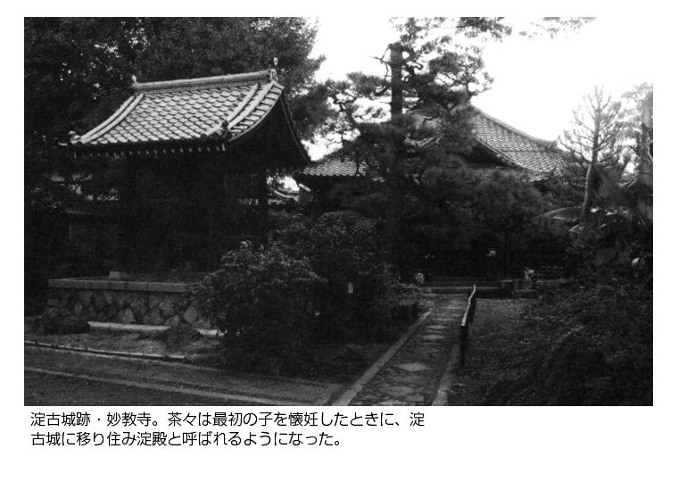
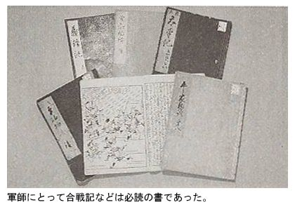

| 小和田哲男選集2 豊臣秀吉 天下統一への戦略 黒田官兵衛 (歴史群像デジタルアーカイブス) | |
| 小和田哲男 | |
| (2015) | |
歴史群像デジタルアーカイブス
小和田哲男選集２
豊臣秀吉 天下統一への戦略
黒田官兵衛
小和田哲男
本書は「歴史群像デジタルアーカイブス」シリーズのうち『＜豊臣秀吉と戦国時代＞パーフェクト大名秀吉、七つの武器』『豊臣秀吉の婚姻政策と女たち』『＜織田信長と豊臣秀吉＞秀吉の人材登用と組織活性化の秘訣』『「秀吉の名軍師・半兵衛と官兵衛の真骨頂」「茶の湯と政治」』『＜豊臣秀吉と毛利＞両川スクラムが動く。崩れる』『賤ヶ岳の戦い「兵站線の確保と機動力」』『「関東・東北連合」を瓦解させた「人たらし秀吉」の神髄』『文禄・慶長の役への野望と亀裂』『＜豊臣秀吉と石田三成＞「奉行派」の真の実力』『黒田官兵衛の素顔』『軍師黒田官兵衛を知る「戦国の〝軍師〟とは？」』『黒田官兵衛の軍師としての能力』を合本したものです。
＜豊臣秀吉と戦国時代＞パーフェクト大名秀吉、七つの武器
Ⅰ 統一政権への道を拓いた機動力・兵站確保
スピードが合戦を制す
秀吉の天下取りの過程を軍事面からみた場合、まず第一番目に指摘されるのは、何といっても、卓越した機動力である。極端な言い方をすれば、秀吉は、抜群の機動力によって、信長の後継者としての地歩をまたたく間に築いたといってもよい。
具体的な例としてあげられるのは、天正十年（一五八二）の本能寺の変直後における中国大返し、それに、翌天正十一年（一五八三）の賤ヶ岳の戦いなどのときに秀吉軍がみせたスピードぶりであろう。
本能寺の変がおこったとき、信長の重臣筆頭柴田勝家は北陸方面軍指令官として上杉景勝の属城の一つである越中魚津城攻めの最中であった。ナンバー・ツー丹羽長秀は、信長の三男信孝を奉じて四国征伐に向うため、大坂に集結していた。また、もう一人滝川一益は上野の厩橋におり、秀吉は備中高松城を水攻めにしている最中だったのである。
これらをみると、距離的に最も京都に近く、明智光秀とまっさきに戦える立場にあったのは丹羽長秀であった。ところが、このとき、長秀は三〇〇〇の軍勢しか率いていなかったのである。織田信孝が四〇〇〇の軍勢を率いていたが、合わせても七〇〇〇にしかならず、光秀の軍勢が一万三〇〇〇から一万六〇〇〇にふくれあがっていたという状況では、そのまま光秀の軍勢にぶつかることは不可能であった。
可能性としては、柴田勝家が六月三日には魚津城を落としていたので、兵をまとめ、一気に北国街道を南下して光秀にあたることであったが、退却するところを上杉景勝軍につけこまれる心配があり、結局は、引き上げることができなかった。
いわば、このときの柴田軍の躊躇がその後の歴史を大きくかえてしまうことになる。
高松城を包囲中の秀吉の陣中に、本能寺の変の悲報が届けられたのは六月三日の夕刻といわれている。そのころ、高松城の水攻めも戦線は膠着状態となり、双方、和議の方向を模索中であった。具体的に講和への空気がみられはじめていたことが秀吉にとっては幸いし、その夜、毛利方の使僧安国寺恵瓊を呼んで、信長の死を隠したまま、講和交渉を急がせることになったのである。
六月四日に和議が結ばれ、城主清水宗治が切腹した。秀吉としてはすぐにでもとって返し、明智光秀を討とうと考えたが、誓書を交換したとはいえ、信長の横死を知った毛利勢がいつ襲いかかってくるかもしれず、結局、毛利軍が六日に撤退したのを確認し、二万五〇〇〇の大軍を京都へもどす、いわゆる中国大返しが開始されたわけである。
六日の午後、備中高松を出発し、十一日の朝、摂津の尼ヶ崎に到着しているが、一昼夜で五五キロも行軍したときもあり、そのスピードぶりには驚かされる。結果的にみれば、このスピード、二万五〇〇〇の大軍を短期間に移動させることに成功した機動力が、柴田勝家に先んじて光秀を討つ大きな要因であったことは疑いない。
兵站確保を最重要視
秀吉の機動力の勝利を物語るもう一つは、賤ヶ岳の戦いのときにおける秀吉軍の軍勢移動である。
天正十一年（一五八三）、秀吉が伊勢の滝川一益と戦っている隙をついて、柴田勝家が近江に兵を進めてきた。秀吉は織田信孝の動きを封ずるため、岐阜城を囲んでいたが、四月二十日、賤ヶ岳に布陣していた秀吉軍の先鋒が柴田軍の佐久間盛政らに攻められたため、急を聞いた秀吉は、一万五〇〇〇の兵を率いて大垣を発し、木之本まで急行した。大垣から木之本まで距離は五二キロあるが、それを秀吉軍は約五時間で疾走している。
秀吉本隊がまだ到着しないと思って油断していたところへ到着したため、柴田軍は意表をつかれ、崩れていったのである。
なお、このとき、秀吉は石田三成を先発隊として派遣し、あらかじめ、大垣から木之本までの、北国脇往還沿いの村々に対し、各戸ごとに米一升ずつを炊かせ、松明を準備させている。つまり、一万五〇〇〇の兵は、松明を途中で交換しながら、握り飯をほうばりながら行軍し続けたわけである。秀吉の計算しつくされた平站確保の戦略が賤ヶ岳の戦い勝利の決定的要因であった。
さて、兵站確保という点で注目されるのは、天正十五年（一五八七）の九州征伐のときである。このとき、日向路を進んだ秀長が一五万の軍勢を率い、肥後路を進んだ秀吉本隊が一〇万で、合わせて二五万の大軍であった。
『甫庵太閤記』巻十の「筑紫陣御触之事」によれば、
「畿内五ヶ国、北陸道之五ヶ国、江州・濃州・尾州・伊勢・伊賀、南海道六ヶ国、中国十六ヶ国、已上三十七ヶ国、其勢二十万余騎とかや。遠国之事なれば、兵粮米馬之飼料、下行あるべき奉行として、小西隆佐・建部寿徳・吉田清右衛門尉・宮木長次、此四人は十二月十日に大坂を立出、三十万人之兵粮、二万疋之馬之飼料、先一とせの分、用意可申旨被仰付にけり」とみえ、小西隆佐ら四名が「下行奉行」だったことがわかる。
同書はさらに続けて「御扶持方渡し奉行」として石田三成・大谷吉継・長束正家の三人の名前をあげているが、これは、出陣中の諸将たちに扶持を渡したりする奉行で、さきの「下行奉行」とあわせ、軍需奉行とよぶべき性格のものであった。
二五万の大軍といえば、人馬の兵粮だけでもかなりの量になり、それを遺漏なく準備するだけでも大変な仕事だったと思われる。秀吉のもとには、こうした財務官僚ともいうべき能吏が何人もいたわけで、この面で、秀吉の「近代的」組織と、「近代的」戦略は他の武将たちの比ではなかったことが明らかである。
Ⅱ 機智に富んだ〝不敗〟の調略・外交術
実戦前にまず調略
戦国時代はいうまでもなく、合戦の連続の時代である。当然のことながら、戦いに強い武将が勝ち抜いていくということになるが、実際の合戦に強いことだけがすべてだったというわけではなかった。そのことを端的に示しているのが秀吉の場合である。秀吉は、直接的な軍事衝突より、それ以前の調略が実に巧みだった。
もちろん、合戦にも強かったが、機智に富んだ調略を縦横無尽に駆使したことが、秀吉勝利の最大の秘訣といってもいいすぎではない。
秀吉が対人関係においてきわめて特異な才能を発揮したことは、さまざまな場面にみられるが、そのような才能を、信長に仕えてから身につけたというよりは、むしろ、信長に仕える以前の秀吉をめぐる環境に求めるべきではないかと私は考えている。というのは、幼少時の秀吉は、たびたび職業を変えており、しかも、針売りなどの行商人を経験しているのである。
すべてに如才なく、しかも、人の心をつかむ術を、秀吉は、放浪時代に身につけたのではなかったろうか。しかも、「戦って相手を倒すよりも、戦わずに相手を屈服させることができれば、その方が損失が少ない」という、商人的打算も働いたであろう。
秀吉の調略が功を奏した一番はじめは、永禄七年（一五六四）、信長の命をうけて、美濃の斉藤龍興方の部将たちを寝返らせることに成功したことである。しかもおもしろいのは、このときの調略が、確かな史料に秀吉の名前が出てきた最初だったということである。つまり、秀吉は、調略によって世に知られるようになった。
ところで、このときの調略については少しくわしくみておくことにしよう。その年二月に、斉藤龍興の居城稲葉山城において内紛がおこり、美濃攻略のチャンス到来とみた信長が、尾張・美濃国境に位置する松倉城（岐阜県各務原市川島松倉町）の城主坪内利定の抱きこみを秀吉に命じ、秀吉は坪内利定を調略によって寝返らせた上で、さらに利定を今度は案内役として、東美濃の斉藤方武将たちの誘降工作に動き出したのである。
その結果、またたく間に鵜沼城・猿啄城・兼山城・関城などが信長方となり、これによって信長勢による美濃攻略の足場が確保され、永禄十年（一五六七）の稲葉山城攻めへと続いていったのである。
タイミングのよさ、すなわち、龍興の部将たちが、斉藤家を見限りはじめたという時期にあたっていたということも、成功の要因であろうが、相手のふところにとびこんで、しかも、誠心誠意説得する秀吉の真剣さ、口のうまさといったものも大きな要因ではなかったかと考えられる。
このあと、元亀元年（一五七〇）から天正元年（一五七三）にかけての近江の浅井長政との戦いにおいても、秀吉は調略によって長政の重臣たちを寝返らせることに成功している。信長は、秀吉のこの特異な才能を認め、それを十分生かして使っていたことがわかる。
調略といった場合には、誠心誠意をこめた交渉が秀吉のキャッチ・フレーズだったかのような印象をうけるが、実際はそのようなきれいごとだけではすまなかったのが戦国の現実であった。調略にはある程度のうそも含まれる。
天正十年（一五八二）六月五日付で、信長の部将であった中川瀬兵衛清秀宛の秀吉書状がある（「摂津梅林寺文書」）。それには、「只今京より罷り下り候者、たしかに申し候。上様ならびに殿様、何れも御別儀なく御きりぬけなされ候。ぜゝか崎へ御のきなされ候内に、福平左三度つきあい、比類無き動き候て、何事もなきの由、先ずもって目出度く存じ候」と記されている。
ここに「上様」とあるのは信長のこと、「殿様」とあるのは信忠のことである。つまり、秀吉は、「明智光秀によって本能寺を囲まれたが、信長・信忠父子はそれを切りぬけ、今は膳所に退いて無事である」と中川清秀に伝えていたことがわかる。
秀吉にとって、光秀と戦うためには、摂津あたりの信長の部将たちがどう動くかが、一番心配だった。そこで、「信長は生きている」といって、光秀討伐に向かう自軍への参加をよびかけたことがわかる。よく、「敵をあざむくには味方から」などといわれるが、まさに、そうしたセオリー通りの秀吉の調略・外交術だったことがうかがわれる。
清洲会議で天才ぶりを発揮
なお、秀吉の天下取りにとって、決定的な、ある意味では、流れを決めたといってもよいできごとが清洲会議であった。このとき、すなわち、天正十年六月二十七日に、清洲城に集まったのは、柴田勝家・丹羽長秀・池田恒興、それに秀吉の四人だったといわれている。いうまでもなく、信長の後継者をどうするのかといった相談であった。
本能寺の変のとき、信長の長男信忠も父とともに討死してしまったので、二男の信雄か三男の信孝かということであった。世間では、勝家のあと押しをうけた信孝が後継者に推されるだろうとうわさをしていたらしい。
しかし、会議の席で、秀吉がもち出したのは、「信忠の遺児三法師が正当である」という、大方の予想をくつがえす意見であった。そのとき三法師はまだ三歳であった。信雄・信孝、同年の生まれで二十五歳なので、秀吉の意見はたしかに唐突ではあった。ところが、「三法師殿は信長殿の嫡孫、あとを継ぐのは当然」という意見は正当性をもっており、結局は、秀吉の意見通りにきまった。
しかも、そのあと、あらためて秀吉は三法師を抱いて会議の場に姿をあらわし、柴田勝家らは、三法師、実際には三法師を抱いた秀吉に頭を下げる形になってしまったのである。
そのとき、秀吉が事前に三法師におもちゃなどを与え、手なづけていたことはよく知られている。これなどは、機智に富んだ秀吉の調略の真骨頂をみる思いがする。
Ⅲ 最先端技術を駆使・土木技術
技術の勝利、高松城攻め
秀吉の城攻めが他の戦国大名に卓越していたことはあらためて論ずるまでもないが、その城攻めも、単なる城を包囲しての兵粮攻めというだけではなく、大土木工事を伴ったものであった点に秀吉の特徴がある。
たとえば備中高松城を攻めたとき、秀吉は大堤防を築き、水攻めという手を使っている。
高松城は、低湿地に築かれた平城で、自然の河川を水堀として用い、また、城のまわりの泥沼を防御のための堀として意識していた。秀吉は、そうした高松城の自然条件をむしろ逆手にとって、かえって低湿地であるがゆえの弱点を衝くことを考えはじめたのである。
秀吉自身の発案であったか、あるいは家臣の誰かの発案であったかはわからない。もしかしたら、土地の高低、河川の水量などを計算しうるような土木技術者集団ともよぶべきものが家臣団に含まれていたのかもしれない。その後の、秀吉主導の大土木工事を考えると、そうしたプロジェクト・チームが育成されていた可能性は大きかったように思われる。
それはさておき、秀吉が高松城を水攻めにしようと考えたとき、秀吉側にとって有利な条件は三つあった。一つは前述したような、高松城が低湿地に築かれていたということであり、二つ目は、そのすぐ近くを足守川が流れていたことである。そして決定的だったのは、三つ目として、城攻めの時期が五月だったという点である。旧暦五月は、ちょうど梅雨の季節であり、足守川の水量が一年中で最も多い時期にあたっていた。
秀吉は、足守川を堰き止める工事を命令し、それこそ昼夜兼行で築堤工事にかかり、高さ四間（約七メートル）の土手が長さ二十六町（約二・八キロメートル）にわたって築かれたのである。諸書によれば、わずか一二日で完成したといわれるので、その突貫工事ぶりがうかがわれる。
そして、秀吉の計算通り、水はまたたく間に溜り、高松城は水びたしになってしまい、城兵たちの士気は喪失し、これが、講和への伏線になっていったわけである。その意味では高松城の水攻めは、土木技術の勝利といっていいかもしれない。
これに味をしめたといってしまえば表現は悪いが、そのあと、天正十三年（一五八五）にも紀伊の太田城を水攻めにしており、天正十八年（一五九〇）の小田原征伐のときにも武蔵の忍城を水攻めにしている。
築城は高度な政治戦略
もっとも、土木技術といった最先端技術の駆使は、そうした城攻めという次元にとどまるものではなかった。秀吉は、さらに高度な利用を考え、実行に移していたのである。
大坂城と聚楽第の築城は、高度な方の最先端技術の駆使とみてよいであろう。
賤ヶ岳の戦いで柴田勝家を破った直後、城を大坂に移すことを宣言していることに象徴的であるが、信長の後継者として、天下統一の事業に一歩踏み出したのと、それまで池田恒興の小さな城にすぎなかった大坂城を見たて、天下統一の拠点にふさわしい新しい大坂城を築きはじめたのがほぼ同じ時期だったという点は、この際、もっと注目されるべきであろうと考えている。
何よりも、大坂城が、他の諸大名の居城より、はるかに大きな城として作られたという点である。やや卑俗ないい方をすれば、秀吉の腹の中に、「お前らとは格がちがうのだ」ということを強調するねらいがあったことがまず考えられる。城の大きさが、そのまま封建的主従関係をストレートに物語るものではないにしても、諸大名が大坂城をみて、秀吉の強大な権力をみせつけられるという側面である。
そして、さらに決定的だったのは、大坂城築城が、単に秀吉一人の力によって取り組まれたのではなく、三十余か国の城持ち大名によって遂行された事実である。
このことは、秀吉が信長の家臣として同列であったような諸将をその傘下に収めたことを意味し、それまでの同格の関係が、明らかな上下の主従関係に転化したことを見ないわけにはいかない。秀吉が大坂城の築城を大規模なものにした理由がそこにあったわけである。
もちろん、その背景には、それだけの大規模な大坂城を築くだけの経済力はもちろん、技術者集団の確保などがあったことはいうまでもない。秀吉のもとに当時の最先端技術の粋が集中していた。
なお、天正十四年（一五八六）二月下旬からはじまった聚楽第の工事もこの観点からみて注目すべきものである。
この聚楽第というのは、第、すなわち邸＝亭の名が示すように屋敷である。しかし、名前は屋敷であっても構えは城といえるもので、秀吉は大坂城の工事と並行させて聚楽第の工事にも力を入れていた。『イエズス会日本年報』の伝えるところによれば、一月のうち一〇日から一五日を大坂城の工事督励にまわり、残りの一〇日から一五日をやはり聚楽第の方の工事督励にまわっていたという。
聚楽第は、「内野関白御屋敷」と当時の史料にもみえるように、秀吉が前年関白になったことにともない、関白の政庁として建設されたものであった。
諸大名たちにとってみれば、この大坂城・聚楽第の二つによって完全に秀吉との力の差を感じとったことになる。逆にいえば、秀吉の意図もまさにそこにあったわけで、この二つの大規模工事が、秀吉の天下取りに果たした役割がいかに大きなものであったかが明らかになろう。

Ⅳ 〝黄金の日々〟を生み出した経済力
鉱山で莫大な収入
秀吉が大坂城・聚楽第などの大土木・大建築工事に着手できたのは、何といっても、それを遂行しうる財源を確保していたからである。経済力がなければいかに意図があっても画に描いた餅にすぎない。その点で、秀吉はぬかりなく、必要な財源を手中にしていたのである。
では、そうした財源を秀吉はどのようにして得ていったのであろうか。私は三つの要因を考えている。一つは鉱山の開発であり、一つは南蛮貿易であり、一つは蔵入地の増加である。以下、この順序によってくわしくみていくことにしよう。
秀吉の鉱山経営の方式は二つあったように思われる。一つは、金山・銀山を直轄領に組み込み、産金・産銀を自分のものとする方法で、たとえば、但馬の生野銀山を直轄地とし、代官を置いて、直接的に支配していることに代表される。
もう一つの方法は、それぞれの大名領の金山・銀山から運上という形で、産金・産銀の一部を納めさせるもので、たとえば、常陸佐竹氏の久慈金山（茨城県久慈郡大子町）などからは秀吉のもとに運上として、収益の一部が届けられている。
この二つによる収入は莫大で、たとえば、秀吉の晩年になるが、慶長三年（一五九八）の「蔵納目録」によると、各地の金・銀山から四三九九枚の金と、九万三三六五枚の銀が入ったという。ここでいう一枚というのは一両小判ではなく十両大判のことなので、かなりの量だったことが明らかである。
ちなみに、秀吉が生前、秀頼に遺産として与えた金銀目録が「大さか御くらにあるかねの斗」（『慶長中外伝』）としてまとめられているが、それによれば、大坂城の蔵には黄金九万枚、銀一六万枚が貯えられていたというのだからすごい。
これだけの金があれば、秀吉ならずとも黄金の茶室などを作りたくなってしまおうというものである。
南蛮貿易と蔵入地
さて、南蛮貿易であるが、秀吉は信長の方針を引き継いで堺を直轄地にし、信長時代の代官であった松井友閑にかわって、天正十四年（一五八六）に石田三成と小西隆佐の二人を堺奉行とし、南蛮貿易の掌握に積極的に乗り出しはじめた。
それと関連して注目されるのが、博多の復興を推進していることである。天正十五年（一五八七）、秀吉は九州に遠征して島津義久を屈服させ、その帰途、博多に到着し、六月七日に博多の町の復興を命じているのである。
博多は堺とならぶ貿易港として繁栄したが、龍造寺氏と大友氏の戦いの舞台となってしまったため、極端に衰微してしまったところであった。秀吉は、南蛮貿易重視の観点から、石田三成・長束正家・小西行長らに命じて、町割を進めさせている。
もっとも、このときの秀吉のねらいは、単に南蛮貿易のためというだけではなく、来るべき朝鮮出兵計画の一つの布石として、博多商人を対外侵略にむかって集中させようとするねらいのあったこともみのがすことはできない。
さて、つぎが太閤検地の施行と、それによって打ち出された秀吉蔵入地の増加による収入の増である。
太閤検地とよばれるものは天正十年（一五八二）七月、山城国で行ったものがはじめといわれている。このときは、山崎の戦いと、その後の清洲会議における遺領配分の決定のあと、秀吉が新領土として得た山城国に施行したものである。
以後、慶長三年（一五九八）まで毎年のように行われており、これによって、日本全国の土地状況を秀吉が把握したことになる。つまり、土地の掌握が完成した。
しかも、秀吉は太閤検地の施行と連動し、つぎつぎに自己の蔵入地、すなわち、直轄領を設定していっており、直轄領からの収入が莫大なものとなっていき、豊臣政権の安泰の一つの条件とも考えられるようになっていったのである。
「慶長三年蔵納目録」によると、全国の石高の合計は、一八五〇万石余にのぼっているが、その内、秀吉は一二・二パーセントにあたる二二二万石を蔵入地として設定しているのである。しかも、秀吉が蔵入地としたところは、摂津・河内・和泉をはじめ、尾張・近江など生産力の高い国に集中しており、秀吉が関白とか太閤とかいう政治的位置だけでなく、経済的にも他大名を圧倒していたことがうかがわれる。
なお、太閤検地は、秀吉の蔵入地を打ち出したというだけではなく、きわめて大きな歴史的な意義があった。それは、検地施行において、一地一作人の原則がつらぬかれ、検地帳に登録された人間が百姓として、その百姓が年貢負担者と定められたという点である。
結局、それまで在地において複雑な土地所有関係があったものが整理され、有力農民、すなわち、乙名百姓などとよばれた土豪層（地侍）などによる小作人に対する中間搾取が否定されたことは、大きな歴史的意味をもったということになる。
Ⅴ 怒濤の進撃をうんだ家臣団とその人材登用
蜂須賀小六との出会い
秀吉は周知のように貧しい百姓の子として生まれたということもあって、信長や家康のように、譜代の家臣をもたなかった。そのため、秀吉には直臣がいなかったというのが定説となっており、家臣団の点では信長や家康に劣るとされている。
しかし、あの戦国の世、これといった家臣団をもたずに天下取りレースに加わることは不可能といってよい。秀吉の家臣団について掘り下げてみることにしよう。
秀吉の直臣といえば、まず第一にあげられるのは蜂須賀小六であろう。秀吉と小六の矢作の橋の上での出会いというのは史実ではないが、史実でないとすれば、二人の出会いはいつのことかが問題となる。
私は、秀吉が信長から濃尾国境付近の土豪たちを説得して美濃への足がかりを作る段になって、それまである程度知っていた小六らに美濃土豪への橋渡しを依頼することになり、それ以来のつきあいではなかったかと考えている。
小六を野盗に仕たてあげたのは、江戸中期の寛政九年（一七九七）に出版された竹内確斎の筆になる『絵本太閤記』がはじめであり、さらに幕末の嘉永五年（一八五二）から出版された栗原柳庵の編になる『真書太閤記』で増幅され、今日伝えられるような話になってしまったものである。
しかし、実際は、尾張と美濃の国境付近に住む土豪で、新井白石の著した『藩翰譜』によれば、小六の父蜂須賀正利の代には、蜂須賀郷（愛知県あま市蜂須賀）において一〇〇貫文の地を知行していたという。一〇〇貫文の地を面積になおせばだいたい二〇町歩から三〇町歩の田畠をもっていたことになり、蜂須賀郷の郷名を苗字にするれっきとした土豪だったことが明らかである。
つまり、秀吉のはじめの直臣は、濃尾国境の「半農半士」といわれる兵農未分離状況の土豪たちであった。
なお、『寛政重修諸家譜』によれば、小六は、はじめ尾張犬山城主織田信清につき、さらに尾張岩倉城主織田信賢に属し、一時は美濃稲葉山城主斎藤道三にも仕えたことが記されている。
要するに、小六のような国境付近にいた土豪たちは、これといった主従関係をもたず、一種の傭兵的な性格であったのであろう。ある意味では、これが国境地帯に生活する土豪の宿命といえなくもないが、こうした一群の武士を率いてあっちこっちする姿が、いわゆる野盗としてイメージ化されたものであろう。秀吉は、まず、こうした小六のような土豪を直臣にくみこむことに力をいれていたのである。
躍進の原動力、近江衆
秀吉が近江三郡を与えられ、一城の主になることができたのは、天正元年（一五七三）、浅井氏が滅亡し、その遺領が秀吉に与えられたときである。秀吉は小谷城から長浜城を新たに築いて移っているが、近江三郡を領するようになるとともに、家臣の登用を積極的に進めている。
何よりも、一二万石の国持ちになったことにより、かなりの直臣団を抱えなければならなくなったことで、信長から預けられていた部将を譲ってもらったり、福島正則や加藤清正といった、親類縁者などを通して、いわゆる「子飼い」の家臣を集めたりしたが、それでは到底まにあわない事態が生じたのである。
これは、もちろん、必要性からでたことであるが、秀吉は、新領土である近江三郡、すなわち、浅井氏の遺領伊香・坂田・東浅井の三郡から家臣を登用せねばならないことになったのである。これを近江衆とよんでいる。
近江衆はいちおう三つのグループに分類できるのではないかと考えられるので、以下、グループごとにそのメンバーをみてみることにしよう。
近江衆第一グループは、片桐且元と脇坂安治に代表される。この二人は、天正十一年（一五八三）の賤ヶ岳の戦いのとき加藤清正・福島正則らとともに戦功をあげ、いわゆる「賤ヶ岳七本槍」に数えられており、合戦において手柄をたててきた部将たちである。
近江衆第二グループは、石田三成・増田長盛・長束正家の三人に代表される。この三人の顔ぶれをみて気がつくように、これは奉行人グループといってもいい。秀吉が五奉行制をしくのは晩年のことであるが、「五奉行」とは呼ばれないまでも、この三人が中心になって検地など、秀吉の諸政策にタッチしてきたことは明らかである。近江は、近江商人でも知られているように、経済的先進地であり、それだけに財務にたけた人物が輩出したものと思われる。
近江衆第三グループは、藤堂高虎と小堀政一に代表される。小堀政一といってもあまりなじみがないかもしれないが、茶人として、また築庭家として知られる小堀遠州のことである。つまり、この二人は、「城つくり」の代表者であった。秀吉時代だけではなく、そのあとの家康時代も含め、高虎・政一コンビによる築城が、日本における城郭建築のピークを作り出したといってもいいすぎではないであろう。
彼らはほとんど浅井長政の遺臣であった。仮に信長であれば彼らを登用することはなかったであろう。秀吉は、敵対した人間であっても無闇に殺すようなことはせず、使えそうな人物は積極的に登用しているのである。このあたり、秀吉勝利の大きな秘密の一つと数えてよいであろう。
三成の場合、戦いは得意ではない。しかし、奉行人のような仕事は得意である。小堀遠州も、城つくりは得意とするが、他はそうでもない。こうした、人の得手不得手を見ぬき、才能を発掘している。この点で、秀吉の人材発掘の才をみなおす必要があるだろう。
よく、秀吉の軍師といわれる竹中半兵衛重治にしても、もとは斉藤龍興の家臣であった。もう一人の黒田官兵衛孝高（如水）も、もとは播磨の赤松氏の一族小寺氏の家臣にすぎなかった。秀吉の適材適所の人材配置が、譜代家臣をもたなかったという弱点をみごとにカバーしていたわけである。
Ⅵ 知られざるもう一つの軍隊・水軍
湊を支配し水軍育成
秀吉がはじめて一城の主になったのは前述のように近江の長浜城であった。そのあと天下統一の拠点としたのが大坂城であるが、長浜城にしても大坂城にしても、そこが水辺の城であるという共通項をもっていた。長浜は琵琶湖畔に築かれ、大坂城は大坂湾頭に築かれていたのである。
この二つの城だけから結論を導きだすことは危険かもしれないが、秀吉は、城を築くにあたって湊の支配ということを強く意識していたことがうかがわれる。
湊の支配は、一つには舟運を管轄し、その商品流出を一手におさめることを意味したが、もう一つ、水軍の存在を忘れることができない。
信長が、石山本願寺との戦いで鉄張り軍艦を駆使したことはよく知られているが、秀吉も、そうした信長を見ていたので、水軍が戦国の合戦にいかに大きな役割を果たすかについては、熟知していたとみてまちがいない。
事実、鳥取城を攻めたときも、秀吉は水軍を組織しており、毛利水軍と因幡の湊川口で戦っている。秀吉の水軍の大将松井康之が伯耆泊城まで進んだという記録がある。
信長死後、秀吉は自ら水軍の増強をはかっており、天正十三年（一五八五）の根来・雑賀攻めのときに秀吉は、毛利水軍が、中村一氏・仙石秀久・九鬼嘉隆ら秀吉水軍に協力してくれるよう、小早川隆景に依頼している。このことから天正十三年の時点での秀吉水軍の主力が中村一氏・仙石秀久・九鬼嘉隆らであったことがうかがわれる。
中村一氏はその時点では岸和田城主、仙石秀久は淡路洲本城主で、それらの地が水軍の根拠地だったことに由来する。九鬼嘉隆は、志摩の水軍の将として早くから知られ、すでに信長のとき、天正六年（一五七八）の摂津木津川口の戦いで毛利水軍を撃破しており、この時期の秀吉水軍の主力となっていたのである。
勝利の蔭に水軍あり
根来・雑賀攻めのあった同じ年、秀吉水軍は四国征伐において大活躍している。四国征伐のように本州を離れて大軍が海を渡るということになれば、それこそ水軍が相当に組織化されていなければむずかしく、その点、秀吉は、四国・九州征伐のあることを意識して、かなり早くから水軍の育成をはかっていたことがうかがわれる。極端ないい方になるが、四国・九州征伐の勝利は、水軍の勝利でもあった。
なお、天正十八年（一五九〇）の小田原征伐は、四国や九州とはちがって陸続きのため、水軍をそれほど必要としなかったかの印象をもつが、実際問題としては、水軍が勝敗の帰趨にかなりの影響をもっていた。
小田原城攻めのとき、秀吉水軍は後北条氏の伊豆水軍と伊豆半島各地で戦ったあと、小田原城を海から攻めた。
周知のように小田原城は大外郭土塁によって、城と町をすっぽり包んだ惣構の城であり、三方を秀吉の陸路を進んだ軍勢が囲み、のこる海側を秀吉水軍が海から包囲し、小田原城を囲む態勢ができあがったのである。
このときの秀吉水軍の主力は、前述の九鬼嘉隆のほか、加藤嘉明・長宗我部元親・脇坂安治らであった。
このうち、加藤嘉明は天正十四年（一五八六）から淡路志智城主となり、九州征伐にも水軍の将として活躍している。脇坂安治も天正十三年（一五八五）から仙石秀久に代わって淡路洲本城主となり、水軍を率いていたのである。
よくいわれることであるが、秀吉軍は軍勢が多く、しかも長期の遠征ということで、兵粮・兵站の確保がかなり重視されたわけであるが、直接的な戦いだけでなく、そうした兵粮・兵站の輸送に果たした水軍の役割はきわめて大きなものがあった。
Ⅶ 〝天下一〟をにらんだ基本戦略
即断即決
本能寺の変直後の信長家臣団の状況をみると、そこから秀吉が信長の継承者としてトップにおどり出れるような条件はほとんど皆無といってもよかった。
信長の家臣の序列からいっても、少なくとも上には柴田勝家・丹羽長秀がおり、家臣ではないが、信長の同盟者として、秀吉よりかは、はるかに上位に位置づけられていた家康が存在し、何よりも、信長の遺児、信雄・信孝らが控えており、秀吉が、それらの人々を押さえて〝天下一〟になることは、常識で考えれば全く不可能なことであった。
では、秀吉は、どのようにして不可能を可能にしたのだろうか。秀吉が、天下取りのためにうった戦略はどのようなものだったのだろうか。
まず一つはスピードである。敵の意表をつき、予想もしない早さで進む。そのために、従来の常識を否定する。これが秀吉の基本戦略であった。
よく、「中世を否定した信長」といわれるが、比叡山に代表される中世的権威の否定で信長は知られるが、その面では、秀吉は忠実な弟子だったといえる。おもしろいエピソードがあるので紹介しておこう。
天正十年（一五八二）六月八日。備中高松城から京都へもどろうとする「中国大返し」の途中のことである。秀吉は、明九日を期して姫路を出陣しようと準備を進めていたが、そこへ真言宗の護摩堂の僧があらわれた。いつも、出陣の際に占わせていたからである。
そのとき僧は、「明日の出陣は見あわせた方がよい。二度と帰ることのできない悪日である」といった。ふつうならば、わざわざ悪日を選んで出陣することもないと考え、日を延期するところであるが、このときの秀吉はちがっていた。かえってよろこび、「ならば一段と吉日である。主君信長のため、討死する覚悟はできている。二度と再び生きて姫路城にもどろうなどとは考えていない。また、もし、光秀に勝つことができれば、天下は意のままになる。どこにも居城を築くことはできる」といって、予定通り、九日に出陣しているのである。
果たしてこの通りのやりとりがあったかどうかはわからない。
しかし、祈禱僧のいった悪日という意識は全軍の士気に影響するであろうことは秀吉ならずとも予想がつく。秀吉としては一日も早く上京しなければならないということで、このような窮余の機転をきかせたものと思われる。
つぎに、基本戦略という点で私が注目しているのは秀吉が天正十五年（一五八七）に「惣無事令」を発布したことである。「惣無事」というのは講和といった意味になるが、要するに、戦いあっている諸大名たちに私戦をやめさせ、講和を結ばせようとしたものである。意味をとって「私戦停止令」などと表現する人もいる。
滅ぼさず、従える
九州平定が成った時点で、残るところは関東・奥羽であり、関白という権威を背景にちらつかせながら「惣無事令」を諸大名にせまったわけで、この効果は大きなものがあった。
小田原城の北条氏政・氏直父子は、「惣無事令」にもかかわらず秀吉に抗し、ついに滅ぼされた。伊達政宗は、その力に抗しかねて秀吉のもとに頭を下げてきた。秀吉が比較的短期間に天下統一を成しとげた基本的要因の一つとしてこの「惣無事令」の存在をみなおすべきではないかと考えている。
今のことと関連するが、秀吉の基本戦略の一つとして、相手を滅ぼすのではなく、勧降工作によって味方にするという手を多用している点が指摘される。
もちろん、ポイントになるところでは、たとえば柴田勝家を滅亡に追いこみ、今みたように後北条氏を滅ぼしているが、秀吉の戦い全体からみて、これは例外的な存在であったことに気がつく。
四国征伐の長宗我部氏にしても、九州征伐のときの島津氏にしても、決定的な決戦を回避して講和の道を選んでいる。毛利氏などはいつの間にか秀吉の傘下に組みこまれてしまったという印象をうける。
まわりを固め、「戦っても勝つ見込みはない」と相手に思わせるような条件作りを秀吉はきわめて的確に推進していたということがこれらのことから明らかになってくるわけであるが、特に、「これぞ」と思ったときの勘どころのつかみ方は、さすがと思わせる。
それは、家康との関係に最も端的にあらわれているといえる。自分の妹を離縁させてまで家康に嫁がせたこと。それでも上洛してこないとみるや、自分の母を人質にして岡崎まで送るということをやってのけている。
「戦わずに味方をふやす」というのが秀吉の窮極の基本戦略ということができよう。
豊臣秀吉の婚姻政策と女たち
対徳川氏の駒にされた旭姫とお江
正室と数多くの側室を持ちながら、子宝に恵まれなかった秀吉。
対徳川氏の政略結婚では、妹の旭姫を強引に家康に嫁がせ、
さらにお江も秀吉の養女として徳川との関係強化に使った。
秀吉と正室おね
秀吉の正室はおねである。従来、ねねとされることが多かったが、当時の文書で、彼女が差し出した手紙の署名は「禰」字であり、秀吉から彼女に宛てた手紙の宛名は「お禰」となっているので、お禰が正しい。禰の字はむずかしいので、おねと表記されるのがふつうである。秀吉が天正十三年（一五八五）に関白に任官してからは北政所とよばれ、秀吉死後、高台院と号している。
おねがいつ生まれたかについて、天文十一年（一五四二）説、同十七年（一五四八）説、翌十八年説の三つがあるが、一般的には十七年説である。永禄四年（一五六一）に秀吉と結婚したときには十四歳だったことになる。ちなみに、秀吉は天文六年（一五三七）の生まれなので、年齢差は十一歳である。
ところで、この二人の結婚に、おねの母親の朝日が猛反対をしたといわれている。当時は、親が決めた相手と結婚するのがあたりまえで、実の母の反対を押し切って結婚したというのは珍しく、二人は恋愛結婚だったのかもしれない。
というのは、おねと結婚するまで、秀吉は苗字はもっていなかったからである。ちゃんとした武士は苗字をもてるし、百姓の中でも上層部は「苗字の百姓」などといって苗字をもっていたが、秀吉は貧しい百姓の家に生まれ、苗字がなかったのである。おねの母朝日は、身分ちがいの結婚だから反対したのであろう。
秀吉は、おねと結婚してはじめておねの実家の苗字である木下を名乗ることができたのである。苗字をもてない階層から苗字をもてる階層に上昇転化できたわけで、秀吉が一生おねに頭があがらなかったのも、こうしたことが影響していたのかもしれない。
仲睦まじい二人であったが、二人の間にはとうとう子どもが生まれなかった。石女という、ひどい表現がされることがある。しかし、はじめから石女だったわけではなく、何回か「子おろしの灸」をすえて、子をおろしたため、子がほしいと思ったときにはできなかったとする説もある。
何が史料的根拠となったのか不明であるが、江戸時代、林元美が著わした『欄柯堂棋話』という本にそのことがみえる。
多数の側室と〝世継ぎ〟
秀吉が「あとつぎの男子がほしい」と真剣に考えはじめたのは、いわゆる「一国一城の主」となってからと思われる。天正元年（一五七三）の浅井攻めの論功行賞によって、浅井長政の遺領の江北三郡（伊香・浅井・坂田）を与えられ、長政の居城だった小谷城も与えられ、翌年、城を琵琶湖畔の長浜に移したころである。
そのころ、南殿という側室に石松丸という子が生まれていたことを推測させるのが「竹生島奉加帳」である。長浜には、秀吉が男子誕生を喜び、長浜の町に砂金を配ったので、その金で山車を作ったという曵山伝承も語られている。
その後、秀吉は何人もの側室を迎えるが、なかなか子どもに恵まれなかった。『伊達家世臣家譜』によれば、秀吉には側室が十六人いたという。現在までのところ、はっきり名前がわかっているのは、あとで二人目の正室としてとりあげる淀殿以外は次の通りである。
松の丸殿（京極高吉の娘）、三の丸殿（織田信長の娘）、加賀殿（前田利家の娘）、三条殿（蒲生賢秀の娘）、姫路殿（織田信包の娘）、甲斐殿（成田氏長の娘）、お種殿（高田次郎右衛門の娘）がおり、名前は伝わらないが、山名禅高の娘が側室になっているのが確実で、そのほかは名前もわからない。
〝二人目の正室〟淀殿
さて、いまここに名前の出た淀殿であるが、浅井長政と、信長の妹お市の方との間に生まれたいわゆる浅井三姉妹の長女、茶々その人である。母お市の方が柴田勝家と再婚し、越前北庄にいたが、北庄城を秀吉に攻められ、勝家とお市の方はそこで自害し、残された三姉妹は秀吉の保護を受け、三女のお江は佐治一成に嫁がされ、二女のお初は京極高次に嫁がされ、残った茶々が秀吉の側室に迎えられている。
ふつうの感覚だと、正室は一人だけで、あとの女性は側室ということになるが、実は、関白などの高位につくと、正室は一人だけとは限らず、二人いたこともあり、淀殿が、鶴松、さらには秀頼を生んだころには、二人目の正室としての待遇を受けていたと考えられるのである。
また、これまでは、正室のおねと、側室の淀殿がいがみあい、その対立抗争の結果、豊臣家が滅亡していったという構図で描かれることが多かったように思われるが、実際のところは「女の戦争」はなかったのではないかと考えられる。秀吉死後、おねは高台院として秀吉の菩提を弔う任務につき、淀殿が秀頼の養育にあたり、いわゆる「後家役割」を二人がきれいに分掌していたことが指摘されるのである。

お江の初婚と離縁
秀吉には、鶴松と秀頼という二人の男の子はいたが、女の子は一人もいなかった。信長のように、年齢の離れた妹が何人もいれば、お市を浅井長政に嫁がせたような形で政略結婚の持ち駒となったわけであるが、姉一人、妹一人しかおらず、後述するように、その妹も政略結婚の犠牲者であった。
政略結婚の持ち駒といえば、天正十一年（一五八三）四月に北庄城が落城したとき、浅井三姉妹がそのまま秀吉保護を受けることになり、特に三女のお江は、秀吉の婚姻政策に翻弄された形なので、少し詳しく追ってみたい。
三姉妹が秀吉保護を受けることになった翌天正十二年、早くも三姉妹に縁談がもちこまれた。それも、まだ十二歳の三女お江にである。秀吉が長女の茶々、二女お初をさしおいて、一番幼い三女のお江を指名した理由はよくわからないが、茶々については、秀吉自身、すでに側室にしたいという思いがあったのかもしれない。しかし、それにしても、二女のお初を飛びこして三女のお江いうのはよくわからない。
しかも、相手は、佐治一成という織田信雄の一家臣にすぎない武将であった。秀吉としては、信雄とはいつか戦うことになるかもしれないと考え、相手陣営に楔を打ちこんだ形だったのであろう。
ところが、予想外に早く信雄との戦いがはじまってしまった。例の小牧・長久手の戦いである。戦いは、信雄を支援する徳川家康が羽黒の戦いや長久手の戦いといった局地戦で勝利を収め、秀吉はなかなか力でねじふせることができず、長期戦の様相を呈してきた。
結局、秀吉は信雄に単独講和をもちかけ、信雄がそれに乗ってしまったため、家康も戦いを継続する大義名分を失い、講和を結ぶことになった。
その家康が尾張から三河にもどるとき、佐治一成の居城大野城を通りかかったところ、大野川に舟がなく、家康軍が難儀しているのをみた一成が、舟を出し、家康の三河帰還を手助けしたことがあった。
そのことを聞いた秀吉は、「茶々が病気である」とお江に手紙を出し、見舞いにくるよう命じ、疑うことを知らなかったお江は真に受け、大坂城に茶々の見舞いに訪れたが、それは噓であった。秀吉はお江をそのまま一成のもとには帰さず、強引に離縁されたのである。
〝旭とお江〟対徳川氏の政略結婚
お江が秀吉のもとに連れもどされたあと、秀吉と家康の確執は続いていた。秀吉は何とか家康を屈服させようとしたが、家康はなかなか秀吉に頭を下げようとしなかった。そこで、秀吉は思い切った政略結婚を考えだす。
家康の正室築山殿がいわゆる築山殿事件で殺されていることに目をつけた秀吉は、妹の旭姫（朝日姫とも書く）を家康に嫁がせようと考えたのである。しかし、旭姫にはすでに副田甚兵衛という夫がいた。秀吉のすごいところは、副田甚兵衛と旭姫を離縁させ、家康に嫁がせていることである。婚儀が行われたのは天正十四年（一五八六）五月十四日で、ときに家康四十五歳、旭姫は四十四歳であった。
翌天正十五年、お江のすぐ上の姉お初が京極高次に嫁いでいった。この結婚は、政略結婚というよりは、秀吉が側室松の丸殿の歓心をかうのが目的だったと思われる。松の丸殿、すなわち京極龍子が高次の姉妹だったからである。
なお、お初が嫁いでいったころ、長女の茶々が秀吉の側室となり、翌々十七年五月二十七日は、淀城で茶々が鶴松を生んでいる。
秀吉のねらい通り、家康も秀吉に臣従し、天正十八年（一五九〇）の小田原攻めには家康が先鋒をつとめ、天下統一が成ったわけであるが、やがて、お江の再婚話がもちあがる。今度の相手は、秀吉の養子となっていた（姉智子夫婦の二男）小吉秀勝で、文禄元年（一五九二）二月、お江と秀勝が結婚している。
ところが、新婚生活はたった一か月であった。秀吉によってはじめられた第一次朝鮮出兵、すなわち文禄の役に出陣した秀勝が、朝鮮の唐島（巨済島）で病死してしまったのである。お江は一人目の夫とは強引に離縁させられ、二人目の夫を戦争で失うという不幸を味わうことになったのである。
こうして、また、秀吉のもとにもどっていたお江のところに、三度目の結婚話がもちこまれた。今度は、家康の三男秀忠であった。もっとも、三男とはいっても、長男信康は築山殿事件の際に自刃させられ、二男秀康は、はじめ秀吉の養子（実質は人質）から、下総の結城氏に養子に出されていたので、三男ながら嫡男の扱いを受けていた。
秀吉がお江を秀忠に嫁がせようと考えたのは、極論すれば、家康対策と、文禄二年（一五九三）に茶々が生んだ二人目の男子秀頼のための人脈づくりであり、秀吉の婚姻政策そのものであった。
夫と強引に別れさせられ、家康に嫁いだ旭姫であるが、その後、体調がすぐれず、天正十八年の末に没してしまった。旭姫は、秀吉と家康をつなぐ鎹だったわけで、旭姫の死で家康との関係が疎遠になることを秀吉は恐れ、何とかつながりを保とうとの思いでお江を秀忠に嫁がせることにしたのである。秀吉にとって、二人の気持ちとか年齢差はどうでもよいことであった。
文禄四年（一五九五）九月十七日、十七歳で初婚の秀忠と、二十三歳で二度の結婚歴をもち、子まで生んだことのあるお江とが伏見城で結婚した。しかも、お江は秀吉の養女として秀忠に嫁いでおり、そのころの豊臣家と徳川家の力関係を考えれば、秀忠はお江に頭があがらない状態だったと思われる。しかも、年齢も六つ上で、完全にお江がリードする形であった。
おそらく、その時点では、お江も、秀忠がのちに二代将軍になるとは夢にも思わなかったであろう。
＜織田信長と豊臣秀吉＞秀吉の人材登用と組織活性化の秘訣
飛躍支えた異才の組合わせ
身分の流動性が時代を変えた
封建的身分制を、身分の封鎖性と同義語のように理解している人がいるが、それはまちがいである。
たしかに、近世の身分制は、「がんじがらめの身分制」といわれるように、身分は固定化されてしまったが、同じ封建制の時代でも、中世の段階の身分制は、まだ固定化はされていなかった。特に、戦国時代においてはその傾向が顕著だったのである。
戦国時代、そのようになった理由というものは決して単純ではないが、一つの理由としてあげることができるのは、やはり、戦国時代が、よくいわれるように「食うか食われるか」の実力本位の時代だったからである。
たとえば、越前の戦国大名朝倉孝景が遺した家訓「朝倉孝景条々」の第一条は、
一、朝倉の家において宿老を定むべからず。
その身の器用・忠節によりて申し付くべきの事。
となっているが、孝景は、それまで、世襲的に任用してきた宿老を、これからは世襲とせず、とにかく器用・忠節をみて定めるとしていることがわかる。器用・忠節が人材登用のキー・ワードとして登場してきた点は特に注目される点である。
仮に、世襲ということになると、能力のない人間が重要なポストにつくというケースもありうる。戦国時代、無能な人間が重要なポストについてしまうことは、その家の滅亡を招きかねない。その意味では、世襲制の否定は、戦国武将たちにしてみれば、必要から生まれた必然的なものだったといえなくもない。
したがって、戦国時代から思い切った抜擢人事がみられるようになるわけであるが、中でも、織田信長の場合は顕著であった。極論すれば、信長が統一の覇者として他の戦国大名たちの中から頭一つリードすることができた最大の要因は、この思い切った抜擢人事にあったということができる。
信長路線の忠実な後継者であった秀吉は、人材登用の面においても信長のこの思い切った抜擢人事を踏襲している。しかも、ただ踏襲したというだけでなく、輪をかけて推進したといってもよいのではないかと思われる。
さて、信長・秀吉の時代に顕著になってきた動きとして注目されるのは、身分間の流動性である。守護大名の時代、そして、信長以前の戦国大名の時代にも、商人が武士になったり、武士が僧侶になったりという身分間の流動性は指摘される。しかし、それは、どちらかといえば、特殊なケースとして伝えられる程度で、身分間の流動性が一般的だったとはいえない状態であった。
ところが、信長・秀吉の時代には、こうした動きがごくあたりまえのこととして認識されるようになっていったのである。たとえば、信長の家臣をみていくと、重臣の一人として把握される滝川一益は、もとは甲賀の忍者だったといわれている。忍者も上忍クラスだと国人ないし土豪上層として位置づけられているので、武士的な人間だったわけであるが、そうした比較的低い身分の者でも、器用・忠節さえあれば、上野の厩橋城主、関東管領の要職に抜擢している。
信長による思い切った抜擢人事の最たるものは秀吉の登用であろう。秀吉自身の出自についてはわからないという側面もあるが、各種史料を総合すると、貧しい農民の子であった可能性が高い。信長は、そうした秀吉を重臣の列に入れ、最終的には「中国方面軍司令官」のポストを与えているのである。
清須の町人だった松井友閑を武士とし、のち、堺の代官に任命していることなどは、信長による適材適所主義による人事配置として注目される点であるが、秀吉は、こうした信長による人材登用の姿をまのあたりに見、それをさらに推進していったのである。
「槍働き」から「計数の才」へ
部将たち、すなわち戦国大名の家臣たちが、主君から「勤務評定」をうける場合、その場は、戦場にかぎられていたといってよい。おそらくそれは源平争乱の昔からほとんど変わらなかったであろう。
しかし、戦国大名による領国統治を領国経営とも表現するように、合戦で勝ち取った土地を、どのように安定的に支配していくか、つまり、いかに経営していくかが重要な柱としてクローズ・アップされるようになってきたのである。そのため、従来型の戦闘者としての部将だけでなく、経営者としての部将が必要になってきた。
源平争乱以来、「槍の功名」とか「槍一筋」とかの表現にうかがわれるように、いわゆる「槍働き」中心の「勤務評定」だったものが、ここにきて様変わりをみせはじめたのである。では、どのように様変わりをしていったのだろうか。
「槍働き」ほど市民権を得た表現ではないが、経営者としての部将の特徴を、私は「計数の才」と表現している。「算用の才」といってもよいが、要するに、戦場で戦い、武功をあげるタイプとは異なり、合戦の際には裏方として兵站奉行などをつとめ、領国経営の第一線で活躍する部将たちが秀吉の時代から重く用いられはじめたことはまぎれのない事実であった。秀吉による人材登用の特質はまさにこの点にあったといってよい。何人か具体例をあげてみておきたい。
まず、長束正家の場合であるが、正家はもともと丹羽長秀の家臣であった。長秀の家臣時代、丹羽家の財政をつかさどり、そのため丹羽家の財政は豊かだったといわれ、評判は秀吉の耳にも達していた。秀吉は、早くから正家を召し抱えたいという希望はあったが、何せ、丹羽長秀は信長時代、秀吉の同僚というか上席にあった部将なので、長秀が健在なうちは正家を引き抜くことはできなかった。
天正十三年（一五八五）に長秀が没したあと、子長重に話をもちかけ、自分の家臣にしているのである。いま私は、「話をもちかけ」と表現したが、もしかしたら、秀吉は長重に強制的に正家の放出をせまったのかもしれない。
なお、その間のいきさつは、近世成立の本であるが『翁草』にくわしい。関連する部分をつぎに引用しておこう。
正家は、初め丹羽五郎左衛門尉長秀の従者なりしが、算術に達せし故、秀吉公に挙用ひられ、一万石を賜ふ。諸国の検地且つ御城入用の金銀米穀、其の外の事共、費なき様に考勤むべしと仰付けらる。長束承り、其の事を為すに損失無かりしかば、秀吉公之れを感じ給ひ、貢賦の奉行を仰付けられ、且つ所々の戦場へ召連れられ、其の働を見給ふに、軍計智謀も深かりければ、段々御取立に預かれり。
長束正家にしてみても、丹羽長重に仕えているよりは、いまや天下人として君臨する秀吉に直接仕える方がよかったと思われるが、秀吉の命令によって、正家の移籍はスムーズに行われた。正家は一万石を与えられ、大名の仲間入りをしている。
そして正家は、秀吉が期待した通り、「計数の才」をいかんなく発揮し、秀吉の経営面において辣腕をふるうことになるのである。具体的には、『翁草』が指摘しているように、検地、すなわち太閤検地の実質的な推進者となっていた点で、周知のごとく、太閤検地によって、はじめてわが国のＧＮＰが掌握されたわけで、豊臣政権の財政基盤確立に、この太閤検地が果たした意味はたとえようもなく大きく、その中心的な担い手としての正家の位置づけも大きかったのである。
第二に、『翁草』も指摘している点であるが、金銀米穀の管理というのも重要であった。米穀の管理は、太閤検地の遂行と重なるのでここでは省略し、金銀の管理についてみておきたい。
秀吉による金山・銀山の掌握は二つのやり方があり、一つは、自分の領内にある金山・銀山を直接支配するシステムで、但馬の生野銀山、摂津の多田銀山など、秀吉直轄地金山・銀山などを長束正家らに支配させた方法である。
もう一つは、運上金方式といったらよいが、要するに、豊臣政権下に組みこまれた各地の大名領に所在する金山・銀山からあがる産金・産銀の一部を運上させるやり方である。これが運上金方式で、運上金などというと聞こえはよいが、要は、秀吉によるピンハネであった。
この二つのやり方を併用していたため、秀吉のもとには莫大な金銀が集まっていた。たとえば、秀吉が亡くなった年、すなわち、慶長三年（一五九八）の「蔵納目録」によると、その年だけで、各地の金山から四三九九枚の金と、九万三三六五枚の銀が入っていたことがわかる。それらが何年にもわたって集積されたため、秀吉死後、子秀頼に譲られた遺産は、金銀だけで、金が九万枚、銀が一六万枚におよんでいたという。
これだけの金銀を管理するなどということは、「槍一筋の功名」で出世してきた部将にはまず無理だったろう。正家のように「計数の才」がある理財にたけた部将だからこそ可能だったのである。
なお、さきに引用した『翁草』によると、正家にはもう一つ重要な働きがあったことがうかがわれる。秀吉が正家を戦場に連れていったとする点である。ふつうに考えれば、「槍働き」が期待されない人間は後方に控えているとみるのが自然である。しかし、秀吉は、正家を戦場にも連れていっている。それはなぜなのだろうか。
答は簡単である。秀吉は、正家を兵站奉行として用いていた。合戦も、戦国時代の前半のように、数百、あるいは数千という規模の軍勢が衝突する程度だったものから、秀吉のころには、戦いそのものの規模も大きくなり、一度に動かす軍勢も一〇万とか二〇万という数になった。
数百、数千という規模であれば、それぞれの部将ごとに兵糧を準備させ、部将ごとの責任でそれを運ばせることも可能であったが、一〇万とか二〇万の規模になると、きちっとした体系のもとで兵糧を準備し、運搬しなければならなくなる。秀吉のように、長期の遠征戦を行う場合、兵站奉行の存在が大きな意味をもった。そして、こうした兵站奉行の担い手が長束正家であり。石田三成らだったのである。
異能者集団の組合わせ
秀吉の人材登用として注目されるもう一つは、積極的に異能者を登用した点である。いま私は、長束正家とともに石田三成の名前を出したが、この二人は近江の出身であった。長束正家は、現在の滋賀県草津市長束町で、そこには、いまでも長束姓を名乗る家が何軒かある。石田三成は、現在の滋賀県長浜市石田町で、そこには石田姓を名乗る家はないが、ともに、長束、石田が苗字の地であった。
さきにも述べたように、秀吉は、貧しい農民の子だったものが急速な出世で「一国一城の主」にのしあがったため、譜代の家臣をもたなかった。しいていえば、実弟の秀長と、「子飼いの家臣」などといわれる加藤清正・福島正則の二人ぐらいなものである。ところが、秀吉にとってみれば、このことがかえって幸いしたのである。譜代家臣がいなかったため、ゼロから家臣団の組織を組み立てることができたからである。
秀吉にとって、何といっても幸運だったのは、はじめて「一国一城の主」となり、信長大名の一人となったのが北近江三郡小谷城主、のち長浜城主となったことであった。近江に、さきにふれた長束正家や石田三成といった「計数の才」にたけた武士がたくさんいたからである。
正家は丹羽長秀死後に引き抜いたのでやや特殊であるが、秀吉は、はじめて「一国一城の主」となった土地で、それまでの尾張武士、美濃武士とは毛色のちがう人材を確保することができ、それら「計数の才」にたけた武士と、従来型の「槍働き」を得意とする加藤清正・福島正則タイプの武士とを組み合わせることができた点は忘れてはならないと思われる。
どうしても、同じタイプの武士だけの寄せ集めでは新味が打ち出せないが、異能者集団を組み合わせることによって、秀吉家臣団の厚みがましていったのである。
この点でもう一つ注目されるのは、秀吉が信長の家臣だった時代、「中国方面軍司令官」として、播磨・備前・備中計略に出向いていた点である。地域が変われば、武士たちの気質とか気性が、微妙に変わっていたと思われる。秀吉は、播磨・備前・備中で、それまでの尾張・美濃・近江の武士たちとはちがうタイプの武士を自分の家臣に組み入れている。その代表例が播磨姫路城の城主たった黒田官兵衛孝高、すなわち如水だったのではなかろうか。
とにかく、黒田如水は、相手を説得するのが得意であった。これを私は「説得と誘惑の特技」とよんでいるが、まさに職人的なものであった。戦いは、何も武力衝突だけで決着がつけられていたわけではない。秀吉にしても、武力衝突になれば、犠牲もたくさん出るし、金もかかる。「できれば、戦わずに降伏させたい」というのが本音だったと思われる。黒田如水はそうした秀吉の要望に実にみごとに応えているのである。
秀吉の自己否定
秀吉の場合、信長が清須の町人だった井友閑を武士に抜擢し、堺の代官としたのと同じように、商人だった小西行長をやはり堺の代官とし、大名としているが、どちらかといえばこれは例外で、秀吉は、豪商は豪商のまま利用したところに特徴があったといえる。
たとえば有名な千利休の場合、秀吉は利休を自分の御茶頭としながらも、武士にするということはしていない。
もっとも、利休の場合には、秀吉の弟秀長と結んで秀吉の側近としての地位をかち取り、「公儀のことは秀長、内々のことは利休」といわれるほど、秀吉側近として、大名以上の位置づけを与えられていたことが明らかで、秀吉の時代、秀吉が大坂城中で茶会を開いたとき、招かれた豪商たちの座は、大名でいえば五万石から一〇万石のところだったといわれている。
秀吉は、豪商を商人の身分のまま自己の政権の枠組みに組み込んでいたことがわかる。
最後に、秀吉による人材登用のその後についてふれておくことにしよう。さきにふれたように、秀吉の人材登用は、思い切った抜擢と、身分の枠にしばられない幅広い階層からの登用に特徴があったわけであるが、終始一貫してそうだったというわけではない。具体的にいえば、天正末年から少しずつ変化がみられるのである。
秀吉は、太閤検地・刀狩り、さらに身分統制令などの諸政策の遂行、諸法令の発布を通して、次第に下剋上を否定しはじめた。太閤検地によって農民の土地移動を禁止し、刀狩りによって兵農分離を急速に進め、そして、身分統制令によって、身分間の移動を禁止したのである。これで、農民が武士になる道は閉ざされることになった。秀吉自身が、農民から武士になっていったこととあわせてみると、これは、秀吉が自己否定をしたことになる。
たしかに、秀吉が天下を取るまでは、家柄とか身分などをうるさくいわない体制の方が好都合であった。そうした自由があったからこそ、貧しい農民の生まれだった秀吉も関白、そして太閤にまでなりえたのである。
ところが、秀吉による天下統一があらかた完成した時点で、秀吉は、「折角収まった日本が、またもとの戦国乱世にもどるようなことがあってはならない」と考えた。つまり、「再び自分のように下剋上で天下を取るような人間を生み出してはならない」と考えるようになったのである。
ある意味では、これは秀吉の勝手な論理であったが、秀吉自身は、「二度と再び自分のような者が現われては、国が乱れるもとである」と考え、下剋上を否定した。つまり、自己否定をしたというわけである。
実はこのことが、のちの近世的な身分秩序の伏線になるわけで、以後、急速に身分固定化の動きが加速度的に進むことになる。その意味では、秀吉の人材登用の特徴が最もはっきりした形で打ち出されたのは天正末年までだったということができる。
なお、今回は、主として秀吉による家臣の登用をみてきたが、ほかに、秀吉は職人などの技能集団の育成と登用も積極的に行い、いくつかの点で新しさもみせている。たとえば、「天下一」の号を与えたことなどはその好例で、信長がはじめた方式を秀吉はさらに推進させ、一つの制度にまでしていることなどは注目される点である。
「秀吉の名軍師・半兵衛と官兵衛の真骨頂」「茶の湯と政治」
籠絡戦
降伏勧告は
いかになされたか
城攻めのとき、「力攻め」といって、まともに攻めようとすれば、敵も猛反撃をするので、攻める側にも多大な犠牲が生まれる。
そこで、敵の油断をつく奇襲とか、兵糧攻め・水攻めなどの長期戦となったりするが、秀吉の得意とした戦法の一つに籠絡戦というのがある。
文字通り、敵を籠絡して降伏させたり、敵の中に内応者を作り、戦わずに城を開城に追いこむ戦法である。
戦わずに敵の城を開城に追いこむことができれば、味方の犠牲はゼロで、最も効果的な戦法ということになるが、ことはそう簡単ではなかった。
というのは、すでに当時、「城を枕に討死」というのが戦国武士道の一つとして定着していたからである。
戦国武士たちは、華々しく戦って潔く死に、名を後世に遺すことを名誉と考えていた。
ところが、名を後世に遺すとともに、家名を存続させるということも、戦国武士たちにとっては重大な課題であった。秀吉得意の籠絡戦が成功する余地がそこにあったのである。
『太閤記』などの秀吉関係の各種伝記からも明らかなように、秀吉は弁説さわやかであり、相手を納得させる巧妙な話術を身につけていた。
秀吉本人が相手を説得する特技をもっていたというだけでなく、その分身ともいうべき家臣にも恵まれていた。具体的にいうと、一人は竹中半兵衛重治であり、もう一人は黒田官兵衛孝高（如水）である。秀吉が籠絡戦を成功させた背景として、この二人の存在を忘れることはできない。
なお、一口に籠絡戦といっても、いくつかのパターンに分かれるが、一つは、敵城の家臣団の中に亀裂を生じさせる方法である。家臣の中には思惑のちがいもあって、必ずしも一枚岩の団結という状況だったとは限らない。
秀吉は、敵城の家臣団に関する情報をできるだけ集め、その情報を分析し、家臣団内部における対立の図式、矛盾などをあらいざらい調べあげ、内応を働きかけるのである。
そして、もう一つのパターンは、城主本人に対する降伏勧告である。秀吉の時代までは、戦国武士道として、「強いものへの傾斜」という論理があった。
つまり、玉砕して家を滅ぼすよりは、降伏してでも家名を存続させる方がよいとする考えである。
そのため、秀吉ないし秀吉の意をうけた側近たちの言葉巧みな説得をうけいれるというケースもかなりみられた。もちろん、そこには戦国時代特有の謀略的要素も含まれていたことはいうまでもない。具体的な例をあげておこう。
詭弁で成功した北九州平定
秀吉の九州征伐というと、年表などでは天正十五年（一五八七）のこととしている。たしかに、秀吉自身、九州まで出陣し、最大の敵だった島津氏を降伏させたのは十五年のことであるが、戦いそのものは十四年からはじまっていた。
このとき、秀吉は、「できれば直接的な軍事対決は最小限に抑えたい」と考えていた。そこで十四年十月に、黒田官兵衛を九州に渡らせ、北九州の諸大名に対し、「味方をすれば本領を安堵しよう」という餌をちらつかせながら、また、「敵対すれば、来年、秀吉殿が大軍を率いて攻め込んでくるので、滅亡させられるだろう」と脅し、それこそ、「アメとムチ」で降伏勧告にのりだしているのである。
「本領安堵」という言葉は、諸大名たちにしてみれば魔力のような響きがあったものと思われる。「本領を安堵してくれるなら、あえて豊臣軍に敵対する必要はない」と考えたのである。結局、北九州地方の大名たちは、黒田官兵衛の「味方をすれば本領を安堵しよう」という言葉を信じて、早々と秀吉に降伏してしまった。
豊前の宇都宮鎮房もその一人であった。
ところが、結果論として、この「本領安堵」の約束は、秀吉方の詭弁であった。翌年、島津氏が降伏し、九州平定が成ったあと、たとえば、宇都宮鎮房には伊予国への転封が命じられている。
他の武将たちは、「秀吉の命令にはさからえない」とあきらめて転封に応じたが、宇都宮鎮房は「約束がちがう」といって転封を拒み、秀吉への対抗姿勢をあらわにしたため、謀略によって殺されてしまっているのである。
なお、家臣の寝返りを促すというのも秀吉得意の手であった。たとえば、秀吉がまだ信長の部将だった時代、近江の浅井長政攻めの担当になったとき、秀吉は、長政の重臣たちに顔のひろい竹中半兵衛重治を使って内応工作を積極的に進めている。竹中半兵衛は、まず近江・美濃国境に近いところの領主だった堀次郎の寝返りを成功させ、この内応が引き金になって、連鎖反応のように寝返りが相つぎ、とうとう力を殺がれた形の浅井氏は滅亡の日を迎えてしまったわけである。
もっとも、秀吉の籠絡戦がいつもいつも成功したとは限らない。失敗した例もあるので一つ紹介しておこう。
天正六年（一五七八）六月からはじまった播磨三木城攻めは、城主別所長治のがんばりもあってなかなか落ちなかった。
秀吉は三木城への糧道を絶ち、兵糧攻めの戦法をとったが、それでも容易に落ちなかったので、籠絡戦も併用することにした。
秀吉は、城中にいる別所長治の重臣の一人中村忠五郎という武士と連絡をとることに成功し、内応の約束をとりつけた。日時を決め、秀吉の軍勢が大手門にせまったとき、中から中村忠五郎が城門を開けるという手はずであった。
中村忠五郎は、ひそかに娘を人質にして秀吉に差し出し、秀吉の方でも、
「娘を人質に出してきたほどだから、よもや裏切ることはあるまい」
と、信用しきっていた。
約束の日、かねての手はず通り、城門が開かれ、秀吉軍は、中村忠五郎が約束通り内応して城門を開けたものと思い、安心して城内に入ったところ、城兵に討たれてしまったのである。つまり、偽りの内応だったというわけである。
茶の湯と政治
天下人秀吉の
権力掌握と威勢誇示
家臣団統制にも活用
戦国武将にとって、茶の湯は和歌・連歌とならぶ教養の代表的なものであった。しかもそれは、単に教養というだけでなく、茶の湯ができるということが一種のステイタス・シンボルとなっていたのである。
この考え方を推し進めて制度化したのが織田信長だった。信長は、家臣の中に「茶の湯御政道」という考えを広めていったのである。つまり、「信長殿から名物茶器をもらい、茶会を開けるのは特別名誉なことである」という意識である。家臣誰もが茶会を開けたわけではなく、信長の許可を得たものだけが茶会を開く権利を与えられ、これが、信長による家臣団統制の一つとして、政治的にも意味をもっていたのである。
事実、秀吉も、天正五年（一五七七）十二月、播磨経略の戦功の賞として、信長から乙御前の釜を与えられ、茶会を開くことを許され、翌六年、三木城攻撃のための付城において、その釜を使ってはじめて茶会を開いている。
信長が本能寺の変で明智光秀に殺されたあと、天下は次第に秀吉のものとなっていくが、おもしろいことに、秀吉による天下取りの過程と、秀吉による茶の湯掌握の歩みが、ピタリ一致するのである。そこにも、茶の湯と政治のからみを読みとることができる。まず、この点を少し具体的に追ってみよう。
茶頭利休の登場
本能寺の変からおよそ五か月たった天正十年（一五八二）十一月七日、秀吉は自分の居城として新しく作った山崎城の麓にある妙喜庵において茶会を開いたが、そこには、津田宗及・千利休（そのころはまだ宗易）・山上宗二が招かれている。利休はいうまでもなく信長の茶頭だった人物で、秀吉が利休をとりこもうとした動きとして理解できる。
翌天正十一年四月二十一日、秀吉は賤ケ岳の戦いで柴田勝家を破り、そのあと、勝家の居城北庄城を攻め、滅亡に追いこんでいるが、その一か月後の五月二十四日、近江の坂本で茶会を開いている。津田宗及の記録に「茶堂宗易」とみえる点が注目されるところで、茶堂は茶頭のことで、利休が秀吉の茶頭となったことがわかる。
秀吉が権力を握ることができたから、信長の茶頭だった利休を自分の茶頭にすることができたと解することも可能であるが、私は、茶の湯の第一人者利休を茶頭にしたことが、秀吉の天下取りにはずみをつけたと考えている。
ただ、秀吉は、茶の湯のもつ政治力を重視し、その点においては信長の路線を踏襲していたが、信長の茶の湯すべてをうけついだわけではなかった。信長の場合には、「天下の権を握るものは、天下の名物茶器を所持しなければならない」という論理をもっており、名物茶器の蒐集に狂奔したが、秀吉は少しちがっていた。
もちろん、権勢欲・独占欲は人一倍強い方なので、名物茶器の蒐集もやっている。しかし、秀吉の場合は、それとともに、次第に利休の侘び茶にひかれていった点を見逃すことができないのではないかと考えている。おそらく、利休が一人でいくらがんばっても、侘び茶を大成することはできなかったろう。権力者秀吉の強力なバック・アップがあってはじめて侘び茶が市民権を得ていったのではなかろうか。その意味で、秀吉・利休のコンビが侘び茶を大成させたといってもよい。
村田珠光─武野紹鷗といった先駆者によって蒔かれた侘び茶の種子が、利休のときになってようやく大輪の花を咲かせたという感じである。
たとえば、天正十九年（一五九一）十二月二十日付で、秀吉が養子の秀次に訓戒状を与えており、その中で、鷹狩りや女狂いなどをいましめているが、「ちやのゆはなぐさみにて候条、さいさいちやのゆをいたし、人をよび候事はくるしからず候」といって、茶の湯にのめりこむことだけは大目にみている。これは、秀吉が茶の湯、もっといえば侘び茶の効用を十分に理解していたからである。
密室で敵味方を判別
秀吉は生涯にいくつもの城を築いているが、天下人になったあとに築いた城には共通する点がある。城跡を調査すると、城の一画に、ある特別な曲輪が存在する。城によってそれを山里丸とか山里曲輪とか、よび方はちがっているが、まさに「山里」のような、樹木にかこまれた部分がある。そして、そこには茶室がしつらえられていた。
ジョアン・ロドリゲスが著わした『日本教会史』の中に、堺の商人たちが自分たちの屋敷の庭に茶室を作り、それを「市中の山居」と表現していたことがみえる。まさに、秀吉の山里丸・山里曲輪は、この「市中の山居」にほかならなかった。秀吉にとって、日常のわずらわしさから少しでも解放される時と空間、それが茶の湯であり茶室だったのである。そのため、侘び茶を草庵の茶ということもある。
秀吉は、自分の城にある山里丸なり山里曲輪に作られた茶室に諸大名を招き、利休に茶を点てさせた。諸大名たちは、「天下一」の茶の宗匠である利休の点てた茶を飲んだということで感激し、そうした利休を茶頭として抱えている秀吉の力の大きさをあらためて強く感ずる結果にもなった。
また、秀吉は、こうした茶会を自己の権力確立のために巧妙に使っている。茶室は周知のごとく、二畳とか四畳とかの非常に狭い空間である。しかも密室であった。その意味では、密室の効用といってもよいが、秀吉は茶室を使って、かなり重要なことがらを相談している。茶の湯をカムフラージュに使っていたといえなくもないが、同時に、同じ器で茶を飲むという連帯感のようなものがそのバックにあったこともみておかなければならない。
二畳とか四畳とかの狭い空間だと、どうしても息づかいのようなものまで相手に伝わってしまう。秀吉は、茶室で、誰が本当の味方なのか敵なのかを的確に見極めていたのかもしれない。
＜豊臣秀吉と毛利＞両川スクラムが動く。崩れる
豊臣政権下の毛利一族
秀吉の権謀に欺かれた毛利
秀吉追撃論に反対した隆景
備中高松城を包囲している秀吉の陣所に、本能寺の変で信長が討たれたという第一報が入ったのは、天正十年（一五八二）六月三日の夕方であった。そのときの秀吉の心境としては、すぐにでも兵をもどしたいところであったが、そのままもどれば、毛利軍に追撃されるおそれがあった。何とか講和にもちこまなければ、動くに動けない状況におかれていたのである。
秀吉にとって好運だったのは、ちょうどそのころ、毛利側でも講和にもちこみたいという考えが浮上していたという点である。毛利家中にも織田方に寝返る部将があらわれ、対立状況を早く解消する必要にせまられていたのである。講和交渉はすでにその前から進められていたが、秀吉の要求である備中・美作・伯耆・備後・出雲五か国の織田方への割譲と、備中高松城主清水宗治の切腹という二項目は毛利方としては認められず、交渉はデッド・ロックに乗り上げてしまっていた。
六月三日夜半、秀吉は毛利の使僧安国寺恵瓊をよび、それまで「五か国割譲を」といって強硬だった姿勢をゆるめ、備中・美作・伯耆の三か国割譲で、毛利側の出方をうかがっている。
結局、翌四日、毛利側として援軍にきていた小早川隆景・吉川元春と、秀吉との間に誓詞が交換され、秀吉方からは森高政が人質として毛利の陣営に送りこまれ、毛利方からは元就の末子元総、のちの（秀包）に重臣の桂広繁が添えられ、秀吉の陣営に送りこまれてきた。
秀吉は信長の死をもちろん隠していたので、表向き、信長と毛利輝元との講和が成立したわけで、実際は信長が死んでしまっていることから、実質的には秀吉と毛利氏との講和ということになる。
毛利方が信長の横死を知ったのは、清水宗治が切腹し、高松城が秀吉の臣杉原家次によって接収された直後のことといわれている。秀吉にしてみれば、実に、綱渡りのような講和交渉であった。
講和が成立した以上、一日でも早く上方にもどり、明智光秀と戦い、主君信長の仇を討ちたいと、秀吉は焦ったであろうが、翌五日は動かなかった。毛利軍がまだ滞在しているのに、うかつには動けなかったからである。ようやく六日、毛利軍が岩崎山の陣営を引きあげていった。
秀吉が高松城攻めのための陣営を引き払ったのはその日の午後二時ごろといわれている。それから史上有名な「中国大返し」がはじまったのである。
元就の「三矢の教え」を遵守
本家輝元の顔をたてた隆景
毛利方に信長の死が伝えられたのは四日の午後だったことはすでにみた通りで、もちろん、毛利方将兵は、秀吉がなぜ大急ぎで兵を上方にもどそうとしたかは知っていた。
秀吉が高松の陣を撤したのをみて、吉川元春あたりは、強硬に秀吉を追撃すべきことを主張している。「信長亡きいま、秀吉を倒し、その勢いで光秀も滅ぼせば、毛利の天下になる」という論理である。たしかに、その可能性が全くないというわけではなかった。
この強硬策に真っ向から反対したのが元春の弟で、小早川家を継いでいた隆景であった。隆景は、「誓書をとりかわしたばかりでその墨がかわかない内に誓書を反故にするのは武士の恥である」といって、元春らの追撃論に異を唱えている。
隆景のこの言動をめぐっては意見が分かれるところで、「義理を守り、まさに武士の鑑である」という意見と、「武将のうそを武略という時代に、誓書にしばられ、その結果として好機を失ってしまった」と非難する声とがある。
しかし、果たしてそれだけだったのだろうか。もう少し別の要素もあったのではないかと考えられるのである。
別の要素として私が注目しているのは、元春と隆景の置かれていた場所のちがいである。吉川氏はもともと安芸国の、石見国境に近い地域を支配していた国人領主であり、吉川興経のとき、毛利元就に圧迫され、興経が隠退させられ、元就の二男元春が養子として送りこまれ、元春は石見から出雲・伯耆にかけての地域を支配圏としていた。つまり、山陰地方を押さえていたのである。
それに対し、小早川氏は、同じ安芸国でも瀬戸内海沿岸の地域に根をおろしており、小早川興景のとき、やはり元就に圧迫され、元就の、三男降景を養子に迎えて家を存続させていた。以降、降景は毛利領国のうち、瀬戸内海沿いの地域の支配をうけもっていたのである。山陰の元春に対し、山陽の隆景という図式になる。
秀吉に関する情報量は、山陰の元春と、山陽の隆景とでは、ずい分ちがっていたのではなかろうか。隆景は、すでに秀吉の器量を十分みぬいていたものと思われる。結局、このときは、元春の強硬論は押しとどめられ、毛利軍は秀吉の「中国大返し」をだまってみすごすことになったのである。
ただ、あの時点で、毛利軍が秀吉軍を追撃していれば、時代はどうころんだかわからないという側面があったことも事実である。結果論になってしまうが、毛利一族が、秀吉の天下統一に手を貸したことはまぎれのない事実であった。
おそらく、このときの元春と降景の対応のちがいが、その後の吉川氏と小早川氏の歴史的位置づけのちがいをもたらす伏線となったのであろう。これ以後、毛利氏は秀吉にとりこまれていくことになるが、吉川元春はこれをいさぎよしとせず、この年の十二月、家督を嫡子元長に譲り、隠退してしまったのである。以後、小早川隆景が毛利氏を代表して秀吉との交渉にあたることになった。
隆景には子がなかったため、弟の元総を養子としていたが、秀吉から大坂城へ人質を出すことを求められたとき、毛利氏からは、この元総と吉川元春の三男広家の二人が人質となって大坂城に赴いている。広家の方はすぐ返されたが、元総の方はそのまま大坂城にとどめられ、秀吉から一字をもらい、秀包と名乗っている。秀吉の方でも隆景が自分に対し好意をもっていることを承知していたことが明らかである。
毛利氏が豊臣大名の一員として、秀吉の天下統一のために働きはじめるのは天正十三年（一五八五）六月の四国征討のときであった。このとき、秀吉は弟の秀長を総大将として十一万の大軍を四国に送り込み、四国を統一したばかりの長宗我部元親を攻めさせている。
秀長率いる一隊は淡路の洲本から、秀次率いる一隊は同じく淡路の福良から、宇喜多秀家率いる一隊は讃岐の屋島から、そして、毛利輝元・小早川隆景・吉川元長らが率いる毛利軍が伊予の新間に上陸しているのである。こうして、四つの隊にほとんど同時に攻めこまれた長宗我部元親は、各地の戦いで秀吉の軍勢に敗れ、ついに降服をした。結局、元親は、本領ともいうべき土佐一国だけを安堵され、伊予・讃岐・阿波の三か国を没収されてしまった。
そして、このときの論功行賞によって、伊予一国三十五万石が、小早川隆景に与えられることになったのである。結論としては、伊予一国は隆景に与えられたが、これについては複雑ないきさつがあった。このいきさつについては、少し説明が必要であろう。
秀吉は隆景の力量を高く評価していた。できれば毛利輝元から切り離して自分の直臣としたいと考えていたようである。もちろん、そうすれば、毛利の力を殺ぐことにもなって一石二鳥であると判断したのであろう。
よく知られているように、秀吉は、家康の家老だった石川数正ですら引きぬいた男である。毛利氏を支えている柱の一本である隆景抱きこみにかかったとしても不思議ではない。
並の部将であれば、秀吉から、「伊予一国三十五万石を与えよう」といわれれば、「ありがたき幸せ」といって受けてしまうところであるが、隆景はちがっていた。わが身の栄達よりも、毛利本家のためを考えていたのである。隆景は、秀吉から恩賞の内示があったとき、「伊予一国は一旦輝元に与え、輝元から改めて私がもらう形にしてほしい」と秀吉に要請をしているのである。
秀吉としてみれば、毛利と小早川を分断するチャンスと考えていたのに、隆景がそれに乗ってこなかったので、あてがはずれてしまったわけであるが、隆景の申し出を許している。毛利一族の結束の強さにあらためてびっくりさせられたのではなかろうか。たてまえはどうであれ、実質、隆景に伊予一国を与えたということで、秀吉も満足せざるをえなかったというのが実際であったろう。
四国征討の最中、秀吉は関白になっており、他大名に対する秀吉の優位は、それまでの相対的なものから絶対的なものにかわっていった。以後の秀吉の軍事行動は、関白としてのものであり、毛利氏に対する態度も、はっきりちがったものとなっていったのである。
秀吉のつぎのターゲットにされたのが九州であった。はじめ秀吉は、天正十四年（一五八六）中に九州征討の軍事行動をおこす予定でいたが、吉川元春・元長父子から「出陣は来春にしたほうがよい」という意見が出され、それに従い、実際の出陣は天正十五年正月に開始されている。
なぜ、吉川元春・元長父子が秀吉に意見をいったのか、また、なぜ秀吉が元春・元長父子の意見に耳を傾けたのかわからない側面があるが、九州征討は、吉川氏との関係をぬきにみることができないことだけはたしかである。
秀吉、両川の分断を熟慮
輝元九州転封計画も画策
九州征討の先鋒を命ぜられたのは宇喜多秀家と毛利一族であった。秀吉は特に吉川元春の出陣を求めていた。元春は、すでにみたように、天正十年十二月の時点で隠居し、家督を嫡男の元長に譲っていたが、秀吉のたっての求めにより、このときの九州征討に従軍している。
元春を従軍させた秀吉のねらいが何であったのかについては、『陰徳太平記』がおもしろいエピソードを伝えている。同書によると、秀吉は、さきの四国征討において小早川隆景が戦功をあげて伊予一国を与えられたので、今度は吉川元春に手柄をたてさせ、筑前一国を与えようと考えていたというのである。あまりにも突飛な解釈なので、荒唐無稽な考え方だといわれるかもしれないが、吉川と小早川とで〝毛利両川〟体制を作っていたことは秀吉も百も承知で、存外そのようなことが真相だったのかもしれない。
小早川を独立大名とし、吉川を独立大名とすれば、毛利氏の両翼がもがれるわけで、秀吉のねらいがそこにあったと考えることは可能であろう。
しかし、前年、つまり天正十四年に、秀吉本隊より一足早く九州に上陸していた元春は、その年の十一月十五日に豊前小倉城で没してしまったのである。それだけなら、家督をついでいる元長にということになるが、その元長も日向の都於郡（宮崎県西都市）の陣中で病没してしまったのである。元春・元長の相つぐ死で、「吉川氏に筑前一国を与え、独立大名にしたい」という秀吉の思惑は消滅してしまった。
そのかわり、秀吉は、毛利輝元を九州に転封させようと考えたのである。具体的に秀吉が考えた転封プランは、毛利領国の安芸・周防・石見・長門・出雲・隠岐の各国はそのままとし、備中・備後・伯耆の三か国を収公し、そのかわり、九州において豊前・筑前・筑後、肥後の四か国を与えようというものである。
転封、あるいは国替といっても、本国の安芸その他が残っているので変則的なものという印象をうけるが、秀吉としては、できれば毛利氏のような大きな力をもつ大名は遠ざけたいと思っていたのであろう。
ところが、どうしたわけか、この秀吉の計画は実行されないままたち消えになってしまった。そのかわり、小早川隆景が九州に封ぜられることになったのである。
天正十五年六月七日、秀吉は筑前博多の筥崎に到着したが、そこで九州征討の論功行賞を発表し、隆景に筑前一国と筑後の二郡、肥前の二郡が与えられることになった。これら地域の石高は合計で三〇万七三〇〇石になる。そのかわり伊予国の方は収公されている。
さきに、伊予国が隆景に与えられたいきさつをみたが、そのときは、一旦伊予国が輝元に与えられた上で、改めて輝元から隆景に与えられるという形をとった。隆景があくまで輝元の家臣であり、秀吉からすれば陪臣であることをはっきりさせたのである。しかし、このときはちがっていた。秀吉からじかに隆景に筑前一国、筑後二郡、肥前二郡が与えられたのである。つまり、隆景は、単なる輝元の家臣ではなく、秀吉から知行を与えられた独立大名として扱われたことを示している。
もっとも、隆景は、輝元から完全に独立してしまったわけではなかった。このあたりが複雑なところであるが、毛利氏の領内にも三原において六万石余の知行地を与えられており、秀吉と輝元両方に属すという形をとっている。つまり、秀吉からみれば一人の豊臣大名でありながら、輝元からみれば、毛利の重臣の位置づけであったわけである。隆景はこのような事態になりながらも、「兄弟手をたずさえ、毛利の本家を守れ」という父元就の意思を守り通そうとした。
毛利本家への犠牲的忠誠心
秀秋を養子に迎えた隆景
毛利の本家を守るために、隆景がもうひと働きする場面がある。天正十九年（一五九一）のことであるが、黒田孝高から毛利家に対し、「秀吉の外甥秀秋を輝元の養子に迎えてはどうか」という話がもちこまれた。輝元に実子がなく、黒田孝高にしてみれば、秀秋は秀吉の正室北政所の兄木下家定の三男なので、「豊臣家とつながり、毛利家は安泰」と考えたのであろう。
びっくりしたのは隆景である。毛利家に他家の血が入るのは何とか避けなければならないと考えた。そこで、毛利本家の〝純血〟を守るために自らが犠牲になることを願い出ているのである。
隆景にも実子がなかったことはすでにみた通りで、末弟の秀包を養子にしていたが、この秀包に別家をたてさせた上で、秀吉から輝元に「秀秋を養子にするように」という正式な話が出される前に、「秀秋どのをそれがしの養子に......」と要請している。同時に、急いで隆景のすぐの弟穂田元清の子秀元を養子に迎える準備を進め、「毛利家では、輝元の養子は秀元とすることに決めてある」と伝えさせているのである。
秀吉がどこまで秀秋を輝元の養子に送りこもうと本気で考えていたかはわからないが、少なくとも、このときの隆景の機先を制したすばやい、しかも犠牲的な働きによって、毛利家の〝純血〟は守られたのである。
ちなみに、その後、輝元には実子秀就が生まれ、養子となっていた秀元は別家をたてられている。これが長府毛利氏となった。
秀吉の朝鮮への侵略は、毛利一族にも重い負担をしいることになった。しかし、完全に豊臣政権に組みこまれた毛利一族としては重い軍役もつとめなければならず、輝元も隆景も、そして、吉川元長死後、吉川家の家督をついだ元春の三男広家も渡海してかの地で戦わざるをえなかったのである。
隆景の軍勢が文禄二年（一五九三）正月二十六日の碧蹄館の戦いで明の大軍を破ったことはよく知られている。
ところが、その隆景も慶長二年（一五九七）六月十二日、六十五歳で没してしまった。隆景の養子秀秋はまだ十六歳で、しかも秀吉から送りこまれてきた養子だったため、輝元の補佐役になることはできなかった。いきおい、〝毛利両川〟のもう一本の川である吉川広家が浮上してくる結果となった。
事実、隆景没後直後の六月二十四日付輝元の広家宛書状（『吉川家文書』）をみると、「是非共今に於ては、御方御一老の御筆に候間、何篇御用捨なく、思し召さる所内外共に仰され、御肝煎候て、此節御踏み鎮め専一に候」（読み下しにした）
とあり、輝元が、これからは広家を「一老」とみなす旨を述べており、広家の言動が毛利家中に少なからず影響を与えはじめた様子がわかる。
そして、この広家と石田三成とはうまくいっていなかったのである。同じく毛利家中であった安国寺恵瓊が三成サイドで動いていたのと対照的で、秀吉没後の関ヶ原の戦いにおける毛利氏の動向を規定する最大の要因がここにあったのである。
賤ヶ岳の戦い「兵站線の確保と機動力」
賤ヶ岳に集約された秀吉の基本戦略
◉テクノクラート・近江衆の登用
天正元年（一五七三）八月、織田信長に敵対し続けていた北近江の戦国大名浅井長政が滅ぼされ、その遺領に、浅井攻めにおいて最も軍功のあった秀吉が封ぜられた。秀吉は、厳密には近江一国ではなく北近江三郡を領し、はじめて「一国一城」の主となったのである。秀吉が近江に封ぜられたのは、信長の意向によるものであり、ある意味では偶然のことであったが、その近江の地が荘園制の時代から商業的土壌にはぐくまれ、数理を得意とし、計算に長けた人材を輩出する土地がらであったのは好運だったといってよい。
琵琶湖畔の長浜城を本拠とした秀吉は、もともと譜代家臣をもっていなかったということもあり、近江において新しく家臣を採用していった。浅井氏が滅亡したということもあり、浅井氏の遺臣が秀吉によって新規採用されていったわけであるが、片桐且元・脇坂安治・宮部継潤・藤堂高虎といった、のちの豊臣家臣団の中核となる家臣たちは、いずれもこのときの新規採用組である。なかでも、石田三成はその代表といってよい。彼らは近江衆の名でよばれていた。
近江衆は、福島正則や加藤清正らに代表される尾張衆とちがって、実際の合戦場面での働きはあまり得意ではなかった。合戦での刀や槍を使っての戦闘よりも、裏方において能力を発揮していた。これは、近江の商業的土壌と無関係ではあるまい。
ふつう、秀吉の五奉行として長束正家・増田長盛・石田三成・前田玄以・浅野長政の五人の名があげられるが、この五人の内、何と長束正家・増田長盛・石田三成と、三人までが近江出身である。また、太閤検地の検地帳をみると、検地奉行として、長束正家・増田長盛・石田三成の三人のほかに、片桐且元・宮部継潤らの名がみえ、これら近江衆によって秀吉の諸政策の主なものが推進されていったことは疑問の余地がない。その意味において、近江衆は豊臣政権を支えていたテクノクラート集団だったといっても過言ではないであろう。
江戸時代の明和九年（一七七二）から寛政三年（一七九一）ごろにかけて神沢貞幹によって書かれた『翁草』によると、長束正家についてはつぎのように記されている。
正家は初め丹羽五郎左衛門尉長秀の従者なりしが、算術に達せし故、秀吉公に挙用ひられ、一万石を賜ふ。諸国の検地且つ御城入用の金銀米穀、其の外の事共、費なき様に考勤むべしと仰付けらる。長束承り、其の事を為すに損失無かりしかば、秀吉公之れを感じ給ひ、貢賦の奉行を仰付けられ且つ所々の戦場へ召連れられ、其の働を見給ふに、軍計智謀も深かりければ、段々御取立に預かれり。
ここでは、正家の石高を一万石としているが、最終的に正家は六万石の大名となっている。合戦場面においてこれといった軍功がないにもかかわらず、秀吉は正家に六万石を与えていたわけである。槍一筋ではなく、この正家の場合には算盤一筋といってもまちがいではない。
石田三成の場合も似たようなものであり、合戦で手柄をたてたという記録はない。むしろ、実戦場面よりも、太閤検地の遂行や農村支配の上に足跡を残しており、奉行としての手腕が秀吉に認められていたことを物語っている。三成は近江佐和山城主一九万石の大名になっているので、奉行衆の中での出世頭といってよいが、三成の場合も、槍一筋ではなく算盤一筋であった。
◉賤ヶ岳の戦いと兵站部
賤ヶ岳の戦いのとき、秀吉は岐阜城の織田信孝の動きを牽制するため、わずかの軍勢を賤ヶ岳周辺に残し、主力一万五〇〇〇の兵を率いて大垣にいた。秀吉の主力が留守なのをみて、柴田勝家の将佐久間盛政が不意に中川清秀を攻め、激しい戦いとなったのである。
秀吉は急遽一万五〇〇〇の主力を賤ヶ岳にもどすことになるが、このとき、兵站部が大活躍をする。それまでの戦いにおいても、兵糧弾薬を運ぶための小荷駄隊、すなわち輜重隊はどの戦国大名の部隊にもみられるが、このときの秀吉軍の兵站部というのは、そうした輜重隊とは少しちがっていた。
秀吉が一万五〇〇〇の主力部隊を大垣から出発させたのは午後四時ごろといわれている。そして、賤ヶ岳の麓の木之本についたのが午後九時ごろといわれている。大垣から木之本まで、北国脇往還を通って、距離にすると五二キロである。つまり、このとき、秀吉軍は五二キロをわずか五時間でかけぬけたのである。このスピードが勝敗を決したといってもいいすぎではない。そのとき、佐久間盛政らは、秀吉主力がいかに早くもどってきたとしても翌日の午後になるだろうと考えていたのである。当時、大軍の移動にはそのぐらいの時間がかかるのが常識だったからである。
では、秀吉軍の時速一〇キロという超スピードはどうして可能だったのだろうか。結論を先にいえば、兵站部が緻密な計算をし、万全の準備を行っていたからということになる。午後四時の出発ということからも明らかなように、途中で日が暮れることは確実である。松明が必要になる。また、途中で食事もとらなければならなくなる。
そこで、兵站部があらかじめ先遣隊として出発し、街道ぞいの家々に、松明と握り飯の用意をさせている。これまでの戦いにおいて部隊の移動がなされるとき、松明や食料はそれぞれの部隊ごとにまかなわれるのが原則であり、それが常識であった。ところが、この五二キロを五時間で疾走したときの一万五〇〇〇の軍勢は、自分たちが松明をともす必要はなく、また、時間をさいて炊事をする必要もなかった。ただひたすら木之本めざして走ればよかったのである。腰兵糧が不要となれば、それだけ身軽になり、その分スピードもましたことが考えられる。
このときの、松明の用意、握り飯の用意にあたったのが石田三成だといわれている。
なお、一説には、松明や腰兵糧だけではなく、兵たちは槍も持たず、胴丸なども身につけず、それこそ身一つで走ったともいわれている。その論拠は、長浜城から、このとき槍や胴丸などを舟に乗せて木之本まで運ばせたという伝承があるからである。そうした伝承を裏づける史料がないため、現時点では何ともいえないが、その可能性は否定できないように思われる。
というのは、すでにこのころ、武具などは自分の持ち物だけでなく、「御貸し具足」とよばれるシステムが確立していたからである。大名たちは自分の居城に相当数の槍や胴丸などを保管しておき、いざというときにそれを兵たちに貸し与えて戦わせたことがあったからである。秀吉にしても、常日頃から兵糧の確保や武具類の確保につとめていたものと思われる。その実際の仕事を石田三成らがやっていたことは十分考えられる。
つまり、賤ヶ岳の戦い、とりわけ、四月二〇日の大垣から木之本へ五時間で五二キロを疾走するような芸当は、それまでの軍勢移動の常識的なやり方では不可能であり、実戦部隊と輜重部隊とを明確に分け、しかも、輜重部隊が兵站部として独立しなければ不可能であった。それを兵站奉行としての石田三成らがやりとげたわけで、この形が以後の秀吉軍のパターンとなる。その意味で、賤ヶ岳の戦いは秀吉軍の軍制における一つのターニング・ポイントだったといってよいであろう。
どうしても、合戦ということになると、賤ヶ岳の戦いを例にとれば、いわゆる「賤ヶ岳の七本槍」、すなわち、福島正則・加藤清正・加藤嘉明・片桐且元・脇坂安治・平野長泰・糟屋助右衛門尉の七人と、七本槍からもれてしまった桜井佐吉・石河兵助らの働きぶりだけに目がむけられてしまう傾向があるが、賤ヶ岳の戦いの勝利は、五二キロを五時間で疾走できたそのスピードにあったことはいうまでもない。実戦場面には出てこない、しかも合戦の勝利のために不可欠な裏方としての兵站部の役割が、この戦いによってはっきりとしたものになり、定着しはじめた点は重要である。
◉大量の兵糧・弾薬の準備
賤ヶ岳の戦いのときは、諸説あるが、総勢で秀吉軍が二万五〇〇〇、勝家軍が二万八〇〇〇といわれ、たしかに大軍である。戦国初期のような数千人規模で戦われていた合戦とはスケールの点で格段のちがいがあり、それだけ大部隊を移動する戦いとなっていた。当然のことながら、大部隊の移動にともなって大量の兵糧や弾薬も運ばなければならなくなり、兵そのものと切り離してそれらをとりはこぶことが不可欠となってきたのである。
特に、賤ヶ岳以後の秀吉の戦いぶりをみると、軍勢の数は桁はずれに多くなっている。一度に動かす軍勢も一五万なり二〇万といった規模にもふくれあがっていった。そのため戦場での実戦部隊が、いかに敵をたたくかだけではなく、いかに兵糧・弾薬を目的地に安全かつ迅速に輸送しうるかにかかっていたといってもよい。兵站部が戦いそのものの勝敗の帰趨をにぎるまでになっていったのである。
私は、秀吉軍の兵站部は、賤ヶ岳の戦いのときの兵糧・弾薬を準備した者たちによって創設されていったと考えている。そのとき、中心的役割をになったのが石田三成であり、秀吉は三成のこのときのあざやかな仕事ぶりを高く評価し、以後の戦いにおいても兵站部の仕事をになわせている。
たとえば、天正十五年（一五八七）の九州征討のときには、小瀬甫庵の『甫庵太閤記』によると、石田三成・大谷吉継・長束正家の三人が「御扶持方渡し奉行」となり、小西隆佐・建部寿徳・吉田清右衛門尉・宮木長次の四人が「兵糧米馬之飼料下行あるべき奉行」となっていたことがわかり、主としてこの七人によって兵站部が動いていたのではないかと思われる。
天正十八年（一五九〇）の小田原の役のときの兵站部は長束正家が中心で、正家のもとに小奉行が一〇名任命され、各地の代官からうけとった米二〇万石を船で駿河の江尻湊・清水湊に運ばせ、また、黄金一万枚を使って、尾張・三河・遠江・駿河・伊勢で兵糧を買い調え、それを小田原近くの船着場まで運ばせている。
また、文禄元年（一五九二）三月からはじまる文禄の役のときには、石田三成・大谷吉継・岡本良勝・牧村政吉の四人が船奉行を命ぜられている。船奉行といういい方だと、ただ軍勢の渡海のための船を用意することだけが任務であったかのように思われてしまうが、このときの秀吉軍の総勢は一五万五〇〇〇とも一五万八〇〇〇ともいわれているので、兵糧・弾薬もかなりの量になったはずである。つまり、兵站部の第一の仕事は、それら大量の兵糧・弾薬を運ぶための船を確保することであり、文禄の役のときには兵站部を総称して船奉行とよんだのであろう。
いずれにしても、賤ヶ岳の戦いで兵站部の仕事をした石田三成が、秀吉最後の軍事行動である朝鮮侵略の戦いにも兵站部の仕事をしていたことは明らかであり、その中心的な担い手であったことはまちがいないところである。
「関東・東北連合」を瓦解させた「人たらし秀吉」の神髄
秀吉、その力量と素顔
「徳川・北条同盟」成立の経過
織田信長が、天正十年（一五八二）六月二日未明、京都の本能寺で明智光秀によって討たれるまで、徳川家康は「清洲同盟」により信長とかたく結ばれていた。
また、北条氏政・氏直父子も、「清洲同盟」ほどのかたい結びつきではなかったものの、信長とは誼を通じており、鷹などの贈答があり、また、本能寺の変の少し前、同年三月の甲斐武田氏討伐の戦いにあたっては、北条氏の軍勢が関東から甲斐に攻め入っており、軍事行動を共にしていた。
この点は、あとで述べる奥州の伊達氏も同じで、だからこそ、朝廷も、信長を征夷大将軍に任じようという気になったのであろう。武田氏が滅び、他の関東・東北の戦国大名がほとんど信長になびいた状態は、まさに、征夷大将軍の名にふさわしかったからである。
ところが、本能寺の変で信長が殺されたという情報が入った途端、北条氏政は、信長とのそれまでの誼を断ち切っている。氏政の頭の中に、「信長にはかなわない。信長だから誼を通じたのだ」という思いがあったからである。「誰が後継者になるにしても、信長以上の人物はいないはずだ」と考えたものと思われる。
氏政の決意は、早くも六月十八日、十九日の神流川の戦いで示された。神流川というのは、上野と武蔵の国境を流れる川で、本能寺の変報を聞いて上方にもどろうとした信長の臣滝川一益（厩橋城主）を、氏政・氏直父子が阻止しようと仕懸けた戦いであった。
このとき、滝川一益は一万八〇〇〇の軍勢を率いていたといわれている。それに対し、北条氏側は全力動員で、五万五〇〇〇の大軍を結集したという。五万五〇〇〇という数はそのまま信用できないかもしれないが、とにかく、数にまさる北条軍が勝ち、一益は信濃に逃れ、どうにか、本拠の伊勢長島城に逃げもどっている。
ちなみに、その直後の「清洲会議」のとき、信長重臣だったにもかかわらず、一益がはずされたのは、このときの敗走がマイナス点になったからといわれている。
北条軍は、逃げる滝川軍を追って信濃に攻め入った。ところが、そのとき、同じように信濃まで兵を送りこんでいた勢力があった。徳川家康である。ここにおいて、北条氏と徳川氏が、甲斐・信濃の領有をめぐって衝突することになったのである。
家康は八月十日に、甲府より進んで新府に着陣した。それに対し、北条氏政は、氏直に兵をつけて、若神子に布陣させた。そこで両軍がにらみあう状態になったのである。
にらみあいは十月に入っても続いた。しかし、信長が死に、各地の有力な戦国大名が動き出したこの時期、何か月も一人の敵とだけにらみあったままの状態というのは戦略的にみてもマイナスであった。氏直は、叔父にあたる韮山城主の北条氏規に命じ、家康との講和交渉をはじめさせている。氏規が小さいころ、北条氏から今川氏への人質として駿府に送りこまれていたときがあり、ちょうどそのころ、同じように人質となって駿府にいた家康と面識があったからである。
各種史料によると、「面識があった」などといった程度ではなく、幼なじみだったともいわれており、交渉はスムーズに進み、十月二十四日、家康から氏規への起請文が出され、五日後の二十九日、正式に講和が成立した。つまり、徳川・北条同盟である。
講和条件は、「上野沼田ノ地ヲ以テ、甲州都留郡及ビ信州佐久郡ノ地ニ易エ、甲・信両国ハ、大神君全ク領内アルベシ、上野ハ一円ニ氏直是ヲ領スベシ」（『家忠日記増補』）という内容であった。
同盟の証人、すなわち人質として家臣たちの一族や子どもなどが人質交換される予定であったが、そのうちに、家康の二女督姫が氏直の正室として嫁ぐという話が浮上し、家臣たちの人質交換は取りやめとなっている。
家康が自分の娘を、人質的な立場で同盟の証として北条側に送ったところをみると、家康としても、この同盟にかなり期待するところがあったものと思われる。
「北条・伊達同盟」を再開
家康の娘督姫が小田原城の北条氏直のもとに嫁いできたのは天正十一年（一五八三）八月十五日のことであった。そのころ、すでに秀吉は、賤ヶ岳の戦いで柴田勝家を破っており、信長後継者として、信長の他の重臣たち、さらには信長の子どもたちを一歩も二歩もリードしつつあった。
北条氏政としては、強大化するであろう秀吉に対抗するため、家康との同盟だけでなく、奥州の伊達輝宗との同盟も必要と考えた。最近、立花京子氏の研究によって、永禄三年（一五六〇）秋以降、北条氏と伊達氏の間に同盟関係が成立していたことが明らかにされたので（「後北条・伊達同盟前期の展開」『地方史研究』二四一号）、天正十一年以降の北条・伊達同盟は「再確認」あるいは「再開」とよぶのが妥当と思われる。
北条側の交渉担当は滝山城主北条氏照である。氏照は、氏政の弟で、さきに、家康との交渉役で名の出た氏規より兄になる。氏照は伊達輝宗の重臣遠藤山城守基信と連絡をとりつつ、北条・伊達同盟の再開に成功する。
なお、同盟相手の伊達氏であるが、北条氏側が再開に動きはじめたころの当主は輝宗であった。ところが、少しして、具体的には天正十二年十月に、輝宗が突如隠居し、弱冠十八歳の政宗が家督をついでおり、そのあとの交渉相手はもっぱら若い政宗であった。
この北条・伊達同盟は、対秀吉戦略としてとりくまれたことはまちがいないが、それだけではなく、間に挟まれた形の佐竹氏に対する同盟でもあった。
当然、佐竹氏は、対抗上、秀吉と手を結び、ここに、秀吉の天下統一の動きと、それに対抗する、徳川・北条・伊達の「三国同盟」ないし「三派連合」とよぶべき連合体が生まれたのである。
秀吉の「関白就任」と徳川・北条・伊達
天正十二年の小牧・長久手の戦いは、ふつうには、家康と織田信雄の連合軍が秀吉と戦った戦いとして理解されている。もちろん、そのこと自体はまちがいではないが、家康が秀吉と戦うことを決意した背景に、徳川・北条・伊達同盟があったことは見すごされやすいので、ここであらためてふれておきたい。
ただ、「三国同盟」とか「三派連合」といういい方をしたが、家康自身がそのように認識していたかどうかは若干微妙である。というのは、家康と政宗との間に、直接どのような交渉があったのかがわからないからである。家康としては、氏政・氏直とは同盟したが、その氏政・氏直の同盟者である政宗と同盟したという思いはなかったかもしれない。
小牧・長久手の戦いのとき、家康から氏政・氏直父子に援軍派遣の要請があったことは『不破文書』によって明らかである。しかし、この時期、氏政も氏直も上野の戦いに忙殺されており、援軍を送ることができなかったのではなかろうか。
のち、家康が秀吉の誘いに乗り、北条氏との関係を絶つことになるが、このときの、「援軍派遣を要請したのに、氏政・氏直はそれに応じてくれなかった」という思いがしこりになっていた可能性はある。
ところで、この小牧・長久手の戦いで、全体としては、数にまさる秀吉側が優勢勝ちをおさめた形であった。しかし、局地戦では家康が勝っており、秀吉は、まず織田信雄を抱きこんで単独講和を結び、これによって戦う名分を失った家康とも講和を結ぶことに成功する。まさに「人たらし秀吉」の面目躍如といったところである。
ただ、この戦いで、秀吉が家康を力でねじふせることができなかった点が、このあとの歴史展開に大きな意味をもつことになった。はっきりいえば、この小牧・長久手の戦いの結果、秀吉は征夷大将軍に補任されることを断念したのである（今谷明『武家と天皇』）。
もちろん、不本意な勝ち方というだけでなく、家康、氏政・氏直父子、政宗、こういった東海・関東・東北の有力な三戦国大名が秀吉になびいていないという状況では、「東夷」を制圧するのが本来の職務であるはずの征夷大将軍にふさわしくないと朝廷が判断したものと思われる。
したがって、そのあと秀吉は、平清盛の歩んだ道、つまり、武家として太政大臣になって天下統一を進める方向を考えた。ところが、天正十三年五月になって、秀吉にとって思いもかけない事態が生まれている。朝廷内で、関白職をめぐる内紛が生じたのである。
よく、「とんびに油あげ」とか「漁夫の利」などといういい方をするが、このときの秀吉はまさにそれであった。関白の二条昭実と近衛信尹との関白職争奪戦に割って入り、「どちらが関白になっても、どちらも傷がつく」と、わかったようなわからないような理屈をつけてこの争いに介入し、とうとう、秀吉自身がちゃっかり関白の座におさまってしまったのである。
秀吉は貧しい農民の生まれなので、もちろんこれといった氏素姓があったわけではない。そこで秀吉は、近衛信尹の父前久の猶子にしてもらい、藤原秀吉となって関白に任官したのである。近衛前久・信尹父子、それに、これら一連の動きのプロデューサー役ともいうべき菊亭晴季らに相当な謝礼が恩賞として与えられたことはいうまでもない。
こうして、歴史上はじめての武家関白が生まれた。同年七月十一日のことであった。
しかし、関白になったとはいっても、日本全国を見渡せば、天下統一はまだ半分も進んでいない状況だった。四国には長宗我部元親、九州には島津義久、それに、東海・関東・東北の、家康、氏政・氏直父子、伊達政宗らがいる。
秀吉は、天下統一のために、関白というポストを最大限に利用することを考えた。そもそも関白というのは、天皇に代わって関り白すというところからきている。つまり、秀吉は、天皇を前面に押し出しはじめたのである。「関白としての立場で、敵対する大名を臣従させる」という論理をたて、天皇の勅命を楯として天下統一に乗り出したのである。
今日、残存する史料からみると、こうした考え方を外に向かっていいはじめたのは、天正十三年、つまり、関白になった年の十月二日である。これは、島津義久宛の秀吉文書によって確認されるわけであるが（『島津家文書』）、書き出しが、何と、「勅定について筆を染め候」となっているのである。
この段階の天皇はまだ正親町天皇なので、秀吉は、「正親町天皇の勅命を伝える」として、具体的に、「双方、弓箭をあい止むべき旨、叡慮に候」と、島津義久が他の九州の戦国大名と戦うことを禁止しているのである。
今日、この命令を秀吉の「惣無事令」とよんでいる。「豊臣平和令」といういい方もある。要するに、「惣無事」というのが、停戦とか講和、あるいは和平の意味なので、戦国大名同士の戦いを私戦とみなし、その私戦を、関白の立場で禁止すると伝えたものであった。
同時に、ただ禁止を伝えるだけでなく、「この命令に従わない者は、天皇の命をうけて関白秀吉が征伐する」という付帯事項も含まれていたことはいうまでもない。

家康を臣従させた秀吉の凄味
小牧・長久手の戦いのあと、家康は二男の於義丸を秀吉の養子として差し出していた。養子とは名ばかりで、実質的には人質といってよい。
しかし、家康は強気だった。秀吉から「上洛するように」といわれてもそれに従わなかったのである。いうまでもなく、北条氏との同盟、さらに、北条氏を介してではあるが伊達政宗とも同盟しているという意識があり、そうしたことが、家康の強気な態度として出たものと思われる。
一方、秀吉にしてみれば、家康を屈服させないことには天下統一といってみても画に描いた餅にすぎない。そこで、周知のように、まず、自分の妹の旭姫（朝日姫とも書く）を離縁させて、正室のいない家康に嫁がせ、さらに、それでも上洛しないとみるや、生母の大政所を人質として岡崎城まで下して、家康の反応をみているのである。
では、そのころ、家康は北条氏との同盟をどう考えていたのだろうか。旭姫の輿入れは天正十四年（一五八六）の五月十四日のことであったが、その直前の三月九日と十一日の両日、家康は氏政と対面している。九日は北条領の三島で、十一日は徳川領の沼津においてである（『当代記』）。
おそらく、秀吉が家康に猛烈な働きかけをしているのを察知した氏政が、直接、家康の真意をたしかめたくなって、急遽、会談がセットされたものであろう。
両日の会見で、具体的にどのような話し合いがもたれたかは明らかではない。しかし、結果としては、「徳川・北条同盟を双方共堅持する」という点で一致したらしい。というのは、そのあと、家康から、「駿河・伊豆国境の城は不要なので、沼津城を破却しよう」という話になって、実際に、沼津城が破却されているからである（『徳川実紀』）。
ただ、このあとの動きからみると、これは、一種の家康のジェスチャーというか、パフォーマンスだった可能性が大である。家康は、すでにこのころには、秀吉の働きかけによって秀吉に心はなびいており、北条氏との同盟を破棄するつもりになっていたと思われる。しかし、時間かせぎの間、明確に北条氏を敵にまわしたくないと考え、このような芝居をしたのではないだろうか。
旭姫の輿入れのときには上洛しなかった家康も、大政所が人質として送りこまれたときは腹をかためた。大政所の岡崎城入りといれかわりに、その年の十月二十日、岡崎城を発し、まず、京都の茶屋四郎次郎の屋敷に入り、ついで二十六日、大坂に赴き、秀吉の弟秀長邸に入っている。
そして、翌二十七日の大坂城での謁見となるわけである。これで、秀吉と家康の正式な講和、もっといえば、家康の秀吉への臣従が決まった。
当然、この情報はすぐ氏政・氏直の耳にも入ったと思われる。そのときに、氏政なり氏直がどう反応したのか史料がないのでわからないが、「裏切られた」といった思いを抱いたのではないかと思われる。
秀吉は、家康を臣従させて、「やれやれ」と思ったであろうが、そこで安堵の胸をなでおろしただけではなかった。そのあたりが秀吉のすごいところである。
すかさず、家康に、「北条氏政・氏直父子をなびかせろ」と命じているのである。
味方になったものをつぎの戦いの先鋒に使い、その忠誠度をたしかめるという、当時の戦い一般にみられるやり口ではあるが、そのスケールの大きさには、あらためて驚かされる。
秀吉の力を見誤った氏政・氏直
家康としても、その大役を仰せつかったことにびっくりしたと思われるが、臣従した以上、もとの同盟者に対する切り崩し工作を受けざるをえなかった。
現在、北条氏に宛てた家康からの書状で、この件に関する一番早いものとして確認されているのは十一月十五日付である。使者にたったのが家康の家臣朝日奈弥太郎泰勝であった。朝日奈泰勝がいつ小田原に到着したかはわからないが、とにかく、その年の内には、北条氏側では、家康が秀吉に臣従してしまったという事実を掌握していたはずである。
家康を通じて、北条氏のもとにも秀吉の「惣無事令」が通達された。徳川・北条・伊達三氏の同盟から徳川氏が脱落したことによって、北条・伊達二氏の覇気は少し衰えたようである。その後北条氏の対外侵略の動きが鈍ったことがその何よりの証拠である。
家康は、そのあと、秀吉の意向を受けてしきりに豊臣政権への従属を説得する。その窓口となったのが、家康の幼なじみだった韮山城主の北条氏規であった。
しかし、氏政には、関東の王としての誇りがあった。伊達政宗と連合して秀吉に対抗することは可能であると考えていた。再三の秀吉側からの上洛催促を拒否し続けていたのである。
こうして緊迫状態が続いたまま一年余が経過した。その間に、秀吉による九州征伐があり、秀吉としても、「残る関東・東北のみ」という思いがあり、それ以前にもまして、上洛催促がなされているのである。秀吉としては、「できれば戦わずに屈服させたい」との思いがあり、家康をせっついたものと思われる。
こうした事態のもと、とうとう家康も腹をくくらざるをえない立場になった。天正十六年（一五八八）四月に、秀吉が後陽成天皇を聚楽第に迎え、諸大名に頭を下げさせたが、そのとき、後陽成天皇の聚楽第行幸に隣席しなかった大名に対して、きびしい態度で臨むことが表明されたからである。この場合、きびしい態度で臨むということは、「武力討伐をも辞さず」という意味であった。
家康も、最後通牒をつきつけざるをえない状況に追いこまれたのである。その結果が天正十六年六月二十一日付の氏政・氏直父子宛の家康起請文（『鰐淵寺文書』）である。
この起請文は三か条からなり、第一条において、「自分は秀吉殿の前では、氏政・氏直父子のことを悪くいわない」といい、第二条で、「今月中に兄弟衆を上洛させるように」といっている。この場合、兄弟衆というのはただ漠然と氏政の兄弟といっているのではなく、家康と懇意で、しかも、それまで交渉にあたってきた氏規のことをさしていることはいうまでもない。
そして、最後の第三条がふるっている。原文を読み下しにして示すと、「出仕の儀、納得無きにおいては、家康娘返し給うべき事」とある。つまり、「氏規が上洛しないなら、氏直に嫁がせてある自分の娘の督姫を返してほしい」というのである。
まさに、家康としては、北条氏との決裂を覚悟しての説得工作だったことになる。
ここまで家康にいわれれば、氏政・氏直父子としても、考えざるをえない。結論として氏規を上洛させることになった。家康からは、さらに、「できれば自分が上洛している間にきてほしい」との手紙があり、氏規はようやくその年の八月七日に小田原を出発し、同月十七日、京都に到着した。秀吉に謁見したのは二十二日のことであった。
このとき、氏規は、秀吉に対し、沼田問題の弁明を行っている。弁明というより、北条氏側の従来の主張の表明といった方がよいかもしれない。
それに対し、秀吉は、具体的な詰めについて、事情がよくわかった家老を上洛させるよう命じている。要するに、この日のトップ会談で、体面をとりつくろい、あとは実務者レベルの相談でことを解決しようとしたものと思われる。氏規としては、大役を何とか果たして帰国している。
ただ、氏規には秀吉の力がわかっていても、氏政には伝わらなかったうらみがある。このあと、氏政・氏直父子は、氏規の上洛にもかかわらず、戦いの方向へと進んでいくのである。
その点は、北条氏と同盟関係にあった伊達政宗も同じであった。特に政宗の場合は、天正十七年（一五八九）六月の会津磐梯山麓の摺上原の戦いで蘆名義広を滅亡に追いこみ、これが「惣無事令」違反に問われたのであった。
政宗には、秀吉から「小田原に参陣せよ」との命令が伝えられている。要するに、「北条との同盟を破棄し、関白秀吉に臣従せよ」という命令である。
政宗は、最後の最後まで迷った。その結果小田原への遅参であった。しかし、秀吉は政宗の命を助けている。それは、できるだけ犠牲を少なく天下を平定したいという秀吉流の戦略が背景にあったからである。
文禄・慶長の役への野望と亀裂
秀吉軍団の亀裂
半島への出兵という厳命、だが出陣大名の思惑は様々であった。
侵略戦争に対する反応
秀吉による朝鮮への侵略戦争がはじまったとき、豊臣大名たちのそれに対する反応は実に様々であった。そして、同じ考え方をもつ武将たちが次第に集まりはじめ、党派とはいかないまでも、自然にグループが形成され、それまで一枚岩の団結を誇ってきた秀吉軍団に亀裂が生じてきた。
そこで、ここでは、実際にどのようなグループができあがってきたのか、そのグループにはどういうメンバーが入り、それぞれ、どのような思惑をもって動いていたのかを概観することにしたい。グループ分けは、視点の置き方によってちがってくるが、文禄・慶長の役そのものに焦点をあてていくと、「好戦派と厭戦派」、「渡海組と残留組」、「武功派と吏僚派」の三本立てでみていくのが一番わかりやすいのではないかと私は考えている。以下、この順序でみていくことにする。
好戦派と厭戦派
好戦派の方はよいとして、厭戦派の方はやや苦しいネーミングである。まず、そのあたりの弁解をしておかなければならない。
好戦派にしても厭戦派にしても、当時、そのようによばれていたわけではない。いまの私たちが勝手にそう解釈し、そのようによんでいるだけであるが、好戦の反対語としてふつう使われているのは反戦である。しかし、秀吉軍団に属する武将たちで、当時、「私は、朝鮮への侵略には反対である」と、公然と反戦を唱えることのできた者は一人もいなかった。「非戦論」といういい方もあるので、好戦に対し、非戦も考えられるが、よく考えてみると、非戦とも少しちがう。そこで、やや苦しいネーミングながら、厭戦という表現を使ったのである。
「戦いはいやだけれど、秀吉の命令だから仕方ない」と考えていた武将は、意外に多かったのではなかろうか。
厭戦派のトップは何といっても徳川家康である。これについては興味深いエピソードが湯浅常山の著した『常山紀談』巻之十に載っている。短い文章なので、全文引用しておこう。
朝鮮陣の時東照宮御遠慮の事
東照宮江戸におはしませしに、秀吉の使来りて朝鮮を伐たるゝよしを申す。斯て一人書院におはしまして深く思案の体に見えさせ給ひける時、本多正信御前近く出でたれども御詞もなし。やゝ有りて正信、殿は朝鮮に渡海有るべきやと申せ共、猶黙然とせさせ給ふを斯いふ事三度に及びて後、何事ぞかしましきに、人や聞くべき、箱根をば誰に守らすべきと仰せありしかば、正信さては御遠慮定りけるといひて退出しけり。
『常山紀談』は逸話集なので、家康とそのブレーンである本多正信との間に、たしかにこのようなやりとりがあったという絶対的な史料とはならない。しかし、私は、こうしたやりとりは存外あったのではないかと考えている。
その何よりの証拠は、家康は、文禄の役のときも、慶長の役のときも、一度も渡海していないことである。このとき、家康が秀吉のご機嫌とりをして、「私も渡海しましょうか」と申し出たりしていれば、秀吉は「待ってました」とばかりに、家康を朝鮮に送りこんでいたはずである。
このようなことをいうと、「秀吉は、もともと、家康を日本に残そうとしていたはずだ。家康が日本にとどまったのは、秀吉の戦略配置だったのではないか」と反論されるかもしれない。
しかし、ここのところは重要な点で、結果としては、家康は日本にとどまったが、それは、秀吉がそのように仕向けたのではなく、家康がそのようにもっていったとみた方が事実に近いのではなかろうか。家康は、豊臣大名の一員なので、秀吉の命令に逆らえる立場ではないので、表向き朝鮮侵略戦争に批判的な態度はとっていないが、「賛成しかねる」といった態度をチラつかせていた可能性はある。
なお、さきに私は、「公然と反戦を唱えることのできた者は一人もいなかった」と書いたが、『常山紀談』には、秀吉が「自ら渡海する」といいはじめたとき、浅野長政が進み出て、「日本六十余州に父を討せ兄弟を失ひ、夫に離れ子に先立ち嘆き悲しむ者満々たり」といって、秀吉自身の渡海を諫止している場面が描かれており、これなどは、うけとりようによっては、公然と反戦を唱えたものといってよいのかもしれない。
厭戦派に属する武将は、概して東国に多かった。これにはわけがあり、天正十八年（一五九〇）の小田原征伐とそれに続く奥州征伐が一段落したばかりだったからである。小田原征伐・奥州征伐には、西国の武将より東国の武将たちの方が軍役は重かった。そのため、引き続く文禄・慶長の役ということで、常陸の佐竹氏のように、「際限なき軍役」といったり、「上様より御軍役きわどく.........」と、過重な軍役をのろっている者もおり、出羽の最上義光などは、国元にいる伊良子信濃に対し、「高麗の都を逃げ候わん」と、戦場から心情を吐露していたのである。
そうした厭戦派に対し、好戦派とよんでもよいような武将たちもいた。たとえば、加藤清正などはその一人で、清正は、出兵が本決まりになったことを国もとの家老加藤喜左衛門に伝える手紙の中で、「大唐に於て廿ヵ国拝領せしむる事」と述べている。
秀吉が、武将たちのもっているそうした領土欲をあおったことは事実で、中国の領土だけでなく、「インドも切り取り次第に与えられる」とけしかけていた。
なお、好戦派といっても、小西行長の場合は、加藤清正らとちがって、単なる領土欲ではなかったようである。行長の場合、堺の商人たちの思惑を代弁していたといってよい。ポルトガル・イスパニア商人たちを排し、対明貿易・南蛮貿易を独占するための戦争として文禄・慶長の役を位置づけていたからである。
渡海組と残留組
秀吉軍団に亀裂が生ずることになった一つの契機として、この文禄・慶長の役にあたって、実際に渡海していった者と、渡海せず、肥前の名護屋に駐屯したり、あるいは京都にいた者との間に感情的な対立が生じていたのをみないわけにはいかない。
秀吉も、小田原征伐・奥州征伐の直後であることを意識し、東国の武将たちの軍役を軽くし、西国の武将たちに重くするという措置をとっていた。渡海したかしなかったかだけでなく、重い軍役にあえいだ者と、比較的軽い軍役ですんだ者との間に感情的なしこりが残ったことも事実である。
ちなみに、このとき、秀吉が定めた軍役賦課の地域別基準をみると、九州地方・四国地方の大名たちが一番重く、一万石につき六〇〇人を動員させることになっていた。一番軽いのが関東・東北地方で、一万石につき二〇〇人である。つまり、九州・四国地方の大名たちは、関東・東北地方の大名の三倍の軍役をつとめなければならなかったことになる。
小田原征伐・奥州征伐の直後であるとはいえ、また、侵略していこうとする朝鮮が九州・四国から近いとはいえ、これらはあくまで相対的なものであって、実際に重い軍役を課された大名たちは、軽い軍役ですむ大名たちを羨望のまなざしでみたのではなかろうか。戦時という異常時には、こうしたちょっとした意識のズレがさらにギャップを大きくしていったことが考えられる。
それともう一つ、軍役の点でみすごすことのできないのは、秀吉からの軍役割り当てを忠実に守った者と守らなかった者がいたという点である。「重い軍役だが、秀吉の命令だから仕方ない」といって、無理をして軍役に応じた武将と、「そんな重い軍役などつとめられるか」と、定められた人数より少ない軍勢を出陣させた武将もいた。さきにみた好戦派と厭戦派のグループ分けが、この場合も微妙にかかわっていたのかもしれない。
というのは、好戦派武将は、自らの領土拡大をねらって、多少無理をしてでも重い軍役に応えようとしたろうし、厭戦派武将は逆にさめた目でみすえ、「無意味な戦いに犠牲になることはない」と考え、できるだけ軍勢を少なめに出したと考えられるからである。
軍役割り当てを忠実に守らなかった者の代表格は家康である。家康のそのころの所領は約二四〇万石なので、軍役賦課は四万八〇〇〇人という勘定になる。しかし、実際には五〇〇〇人しか出していない。
奥州の伊達政宗は五八万石なので、一万一六〇〇人を動員しなければならない計算である。しかし、実際には三〇〇〇人しか動員していない。
もっとも、伊達政宗の場合はやや特殊事情があった。事前に秀吉から、「五〇〇でよい」と指示があったというのである。伊達家の史料である「記録抜書」に、
天正十九年秀吉公より朝鮮征伐之儀仰せ出され候。政宗儀遠国、その上一揆の跡下され候間、人数五百と仰せ付けられ候へども、雑兵三千にて文禄元年春上京仕り候。
と記されている。ここで一揆といっているのは、葛西・大崎一揆のことで、政宗はこの一揆を鎮圧したあと、そこを所領として与えられたわけで、秀吉もそのあたりの事情を察して、本来なら一万人規模の動員のところ、五〇〇と低く定めたものであった。
「五〇〇でよい」というのを三〇〇〇で出陣しているのだから、政宗の場合は、積極的に朝鮮侵略にかかわっていこうとしていたことがわかる。だからといって、政宗を好戦派と決めつけてしまうのは酷かもしれない。小田原参陣の遅参、そして葛西・大崎一揆との内通を疑われ、秀吉に対する点数稼ぎをしておかなければならない時期で、「五〇〇でよい」といわれたのにもかかわらず、三〇〇〇を動員したものと思われる。軍役をつとめることは、忠誠心をはかるバロメーターとなっていたからである。
さて、渡海組のメンバーであるが、個々の大名については他の論稿と重複するので、ここでは省略する。一般的にいって、九州・四国そして中国地方の大名によって占められていたことがわかる。中には、伊達政宗のように短期間渡海し、釜山・梁山・蔚山・金海・晋州の各地を転戦し半年ほどで帰国した武将もあったが、九州・四国・中国地方の武将たちは長期滞陣を余儀なくされた。これは、秀吉が、朝鮮を九州の延長とみていたことのあらわれではないかと私は考えている。
渡海組の中の長期滞陣組は、残留組および短期でもどった武将たちに好い感情はもっていなかったろう。戦いが泥沼化すればするほど、その思いはつのったはずである。「何で自分たちばかり苦しい思いをしなければならないのか」といった意識が生じて当然だろう。
『清正記』に載っているエピソードなのでご存知の方も多いと思われるが、慶長三年（一五九八）、撤退して九州博多にもどってきた清正を出迎えた石田三成が、「上洛の折、茶会を開いて慰労したい」といったのに対し、清正は、「せめて稗粥でもてなそう」と答え、兵糧窮乏に苦しんだ朝鮮滞陣中の苦言を三成にぶつけたといわれている。渡海組と残留組の対立は大きなものがあった。
しかもそれだけでなく、渡海組内部にも深刻な対立があった。たとえば、文禄二年（一五九三）二月二十七日付の「宇喜多秀家外十六名連署契状」というものが『吉川家文書』に収められているが、それによると、宇喜多秀家ら朝鮮に滞陣中の武将が三か条の「条々」を定め、それを守ることを誓っており、その中で、「公儀之御ためにならざるつよみ、又者よはみを申間敷候」といい、さらに、今後は多数決によることをとりきめている。
つまり、渡海組の諸将の中に早くも内部対立がおこりはじめ、亀裂が生じていたことを、この一通の文書は物語っている。
武功派と吏僚派
さて、最後のグループ分けが「武功派と吏僚派」である。武功派は武断派といういい方をすることがあるし、吏僚派は文治派とか奉行派といったいい方もあり、必ずしも一定はしていないが、要は、武功派は、加藤清正・福島正則らに代表される「槍一筋」の功名によって台頭してきた武将たちであり、吏僚派は、合戦は得意ではないが、領国支配にタッチし、今日的ないい方をすればテクノクラートというべき武将たちである。
この二つは、以前から対立的な状況にあったが、何とかバランスが保たれてきた。ところが、文禄・慶長の役をきっかけに、対立は急速にエスカレートしてしまったのである。
実は、その責任は秀吉にあった。以下、そのあたりの具体的な経過を追いながら、なぜ武功派と吏僚派の対立がエスカレートしていったのかを考えてみたい。
秀吉が、漢城府陥落の報告をうけとったのは文禄元年（一五九二）五月十六日のことであった。これに気をよくした秀吉は、「自ら渡海する」といいはじめた。しかし、秀吉自身の渡海は、徳川家康および前田利家の強い諫止によって取りやめられ、かわりに、朝鮮在陣奉行として、石田三成・大谷吉継・増田長盛・前野長泰・加藤光泰の五人が渡海することになったのである。
朝鮮在陣奉行という職の職務内容や権限などがはっきりしていないため明確なことはいえないが、少なくとも、三成ら五人が、秀吉自身が渡海するかわりに派遣されたものだったことは確実である。武功派と吏僚派の対立がエスカレートする責任が秀吉にあったといったのはこの点である。
朝鮮の前線で戦っている加藤清正・福島正則・黒田長政らは、以前から石田三成ら吏僚派の存在そのものがおもしろくなかった。そこへもってきて、秀吉の名代の形で、朝鮮在陣奉行という名で三成らが乗り込んできたのだからおもしろいわけがない。「戦いのことなどわからない三成らが自分たちを監督にきた」ととらえたのである。このことによって、実際にそれまで前線で戦っていた武功派の武将たちは機嫌をそこねてしまった。
つまり、いってみれば、ここにも、秀吉の見通しの甘さがあったというわけである。秀吉が朝鮮侵略を、それまでの国内の戦いの延長と考えていたことがこのことによってわかる。つまり、それまでの国内の戦いにおいて、武功派武将が戦って敵を打ち破り、そのあと吏僚派の武将たちが入って民政安定に乗り出すというパターンをくりかえしてきており、このとき、朝鮮在陣奉行として渡海した三成ら吏僚派武将の任務もそのようなものとして秀吉は位置づけていたはずである。
しかし、朝鮮の現場は、国内で秀吉が考えていたほど甘いものではなかったのである。まだ戦いの連続であり、だからこそ、武功派の武将たちも、三成らの派遣を軍監の派遣としてうけとめたのであった。
そしてもう一つ、三成らの渡海が結果として対決をあおる形となったのが、講和交渉をめぐるやりとりである。好戦派ではあったが、文禄の役のとき、第一軍として朝鮮に渡り、加藤清正と功を競ってきた小西行長は、吏僚派の石田三成と親しかった。文禄の役のときの明との講和交渉は、この小西行長が主導的役割を果たし、それを後押ししていたのが三成であった。
しかも、明との講和交渉は、加藤清正抜きで進められていたのである。このあたりに、武功派との対立の度が加わる要因があった。武功派諸将にしてみれば、三成が小西行長と相談して明との講和交渉に乗り出したのをみて、「実際にこれまで戦ってきたのは我々だ。我々にはかることなく、勝手に講和交渉を推進するのは何事か」と怒りはじめた。
秀吉が、朝鮮在陣奉行として三成ら五人を派遣したのは、自分の名代として派遣したというだけでなく、おそらく、武功派と吏僚派の溝が埋まることを期待してのものだったと思われる。戦地で同じ釜の飯を食えば、それまでのわだかまりも消えるとみていたのかもしれない。
しかし、結果的に、その秀吉の意図は全く裏目に出てしまった。行長─三成ライン主導による講和交渉をおもしろく思わない清正は、その動きに同調しない。その結果、三成は、朝鮮在陣奉行としての立場から清正の行為を秀吉に報告し、清正に召還命令が下るという事態にもなり、両派の対立はさらに決定的となったのである。
そして、この対立の構図が、慶長五年（一六〇〇）の関ヶ原の戦いの伏線となったことはいうまでもない。
以上、「好戦派と厭戦派」、「渡海組と残留組」、そして「武功派と吏僚派」という三つのグループ分けをしながら、その対立のしくみ、対立がどのようにして生じていったのかをみてきた。
それぞれの結論をここでもう一度くりかえすことはしないが、最後に一つだけ付言しておきたいことがある。それは、好戦派イコール渡海組で、それがイコール武功派であるといった図式にはならないという点である。それぞれ、武将たちは、自分の置かれた立場、さらには姻戚関係などのしがらみによって、わが身をどこに置くか選択していったことがわかる。
おそらく、その複雑さが関ヶ原の戦いにもちこされたのであろう。関ヶ原の政治力学を解明する上で、この、文禄・慶長の役によって露呈された秀吉軍団亀裂の過程を追うことはきわめて重要な課題であるといえる。
＜豊臣秀吉と石田三成＞「奉行派」の真の実力
石田三成を解く六つの鍵
天下を治めるにあたって秀吉が求めた人材は
軍人ではなく行政官であった。
こうした施策方針にかなう人物として
秀吉が最も期待した人物が石田三成であった。
奉行派を重視した秀吉
羽柴秀吉は、征夷大将軍になることができなかったため、羽柴幕府を開くことはできなかった。その代わり、天正十三年（一五八五）、武家としてはじめての関白に任官し、関白豊臣政権という形で全国支配に乗り出していくことになった。
秀吉は、それまで各地でくりひろげられていた戦国大名同士の領土拡張戦を〝私戦〟として位置づけ、「天皇の命によって、関白豊臣政権になびかない者を征討する」という論理を樹立し、諸大名を軍事的に抑圧するとともに、関白秀吉への臣従を強化していったのである。
天下統一が順調に進むと、それまで、どちらかといえば軍事部門重視だったものが、次第に内政面重視へと若干の軌道修正がはかられ、その結果、いわゆる武功派とか武断派とよばれる武将たちに代わって、吏僚派とか奉行派とよばれる武将たちが相対的に浮上してくる形となった。
それまでは、武将といえば、合戦での軍功、つまり、槍働きが評価の対象だったわけであるが、秀吉政権の下では、合戦以外の部署における働きも評価の対象とされ、武功派と奉行派にほとんど差がなくなっていたのである。そのことを端的に示すのが、武功派筆頭といわれる福島正則と、奉行派筆頭といわれる石田三成の待遇であろう。
福島正則が二〇万石を領していたとき、石田三成は一九万四〇〇〇石であった。たしかに、六〇〇〇石の差をつけ、奉行派よりも武功派を上に置いているが、実はこれは秀吉の苦肉の策であった。武功はそれこそ、命を的に働いているという意識があった。秀吉はそうした武功派の意識を斟酌してわずかの差をつけたわけであるが、秀吉自身としては、「戦いが少なくなったのだから、これからは奉行派が大事である」という認識をもっていたものと思われる。
一口に武将といっても、武闘が得意なものもいれば、計算などが得意なものもいたわけで、秀吉は、家臣たちそれぞれの持ち味をきちっとみて、いわば、適材適所の人事配置を行なっていたことがわかる。石田三成らは、奉行職にもっとも適した能力を持っていたわけで、秀吉も彼らを実に巧みに使い、その能力を十二分に発揮させていたのである。
太閤検地・刀狩りを執行
秀吉政権が取り組んだ諸政策の中で、何といってもまず特筆されるのは、太閤検地と刀狩りであろう。しかもこの二つの政策に、三成はその最初の段階から加わっていた。単に加わっていたというどころか、その発案者が実は三成自身だったことを記す資料もある。奉行としての三成の能力は、太閤検地と刀狩りによって、秀吉からも高い評価を受けるようになったのである。
今日、広い意味で太閤検地というのは、何も、秀吉が関白職を甥の秀次に譲って太閤になってからの検地ではなく、織田信長死後、信長の命令による検地ではない、秀吉が独自に行なったもののことをいっている。具体的には、天正十年（一五八二）六月の本能寺の変、それに続く清洲会議によって、秀吉の山城・丹波両国支配が決まったとき、山城国で施行したのが最初である。
ただ、はじめのころは、検地といっても、戦国大名や信長がやった検地とほとんど同じだった。それが大きく変化したのは、石田三成が検地奉行に入ってからである。三成が検地奉行に入るまでの検地は、基本的には指出検地とよばれるものであった。これは、その土地の領主が把握しているデータをそのまま提出するものである。指出検地とよばれるのはそのためであった。
しかし、これには常に不正申告がともなっていた。そこで、三成は、指出では不十分だとし、実際、自分たちが検地奉行になって村に入り、棹や縄で面積をはかり、また、その土地のよしあしを目でみて年貢収量を決めていったのである。これを丈量検地といい、それまでの隠田や、過少申告がどんどん摘発されていったのである。
太閤検地の検地奉行となった武将名をみると、三成のほかには、増田長盛・長束正家・浅野長政・片桐且元・大谷吉継らの名前がみえ、のちに、いわゆる「五奉行」とされるものの内、四人までが入っているわけで、検地奉行は、秀吉政権の奉行職の中でも特に大事な職掌だったことがわかる。
刀狩りは、すでに信長の段階で越前において行なわれた先例があるので、秀吉や三成の独創的なアイデアというわけではない。しかし、その徹底化、全国化という点では、信長段階とは著しくちがっていた。
どの点が著しくちがっていたかといえば、秀吉段階の刀狩りは、身分制の確立にかかわっていたという点である。これは、太閤検地の施行と連動するものであった。
太閤検地の施行原則の一つに「一地一作」というものがある。実際にその土地を耕作する者を検地帳に載せ、それが名請人となるもので、それまでの複雑で重層的な土地所有の関係を清算し、兵農分離の確立をねらったものであった。刀狩りもねらいは同じだったといってよい。つまり、「百姓は武器をもたず、農作業に専念しろ」というわけである。
これには二つの側面があった。一つは、百姓が武器をもって武士たちに抵抗する動き、つまり、一揆をおこさせなくすることである。そしてもう一つは、秀吉が身分の固定化をねらった点である。
検地奉行として農村の実情を熟知していた三成が、秀吉政権の長期安定化のため、こうした太閤検地・刀狩りを推進していったのである。
兵站・舟奉行としての活躍
太閤検地・刀狩りは、奉行職としても内政面の仕事である。しかし、秀吉政権下において奉行職としての三成の役割は、単に内政面だけではなかった。敵対する諸大名や、同盟関係になる諸大名との折衝、すなわち、外交面での仕事もあった。
そしてもう一つ、軍事面での仕事もあったのである。それが兵站奉行・舟奉行というわけである。
戦いの場合、大名同士の勢力がそう大きくない段階では、戦いそのものは一日とか、二日ないし三日ほどで決着がつくことが多かった。戦国時代、「三日分の腰兵糧」などといわれるように、将兵たちは、出陣に際し、三日分の兵糧を腰にまいたり、ぶらさげたりして出陣していった。それ以上長期になったときは、現地で支給をうけたのである。
はじめのころは、現地で支給をうけることを必要とする長期戦はほとんどなかった。ところが、信長の時代、秀吉の時代と、天下統一の動きが本格化するにつれ、戦いの日も長くなるし、軍勢の規模が大きくなり、それら大軍の兵糧をいかに確保するかも大事になっていったのである。
いわゆる武功派の武将たちはそうしたことが苦手だった。そこで、計算能力などにすぐれていた三成ら奉行派の武将がこうした仕事に携わることになったのである。文字通り裏方の仕事であり、合戦の表舞台で手柄をたてるような派手さはない。しかし、勝つためには、いかに兵糧が確実に届き、補給がきくかは不可欠な要素であった。
三成の場合、兵站奉行としての最初の仕事になったと思われるのが、天正十一年（一五八三）四月の賤ヶ岳の戦いにおける働きである。賤ヶ岳の戦いといえば、福島正則・加藤清正らいわゆる「賤ヶ岳七本槍」の活躍ぶりが喧伝されているが、実際は、秀吉軍勝利にとって、三成ら兵站奉行の裏方における働きが大きく貢献していたのである。
このとき、秀吉軍本隊は大垣付近に布陣していた。その留守をみこんで柴田勝家方の猛将といわれる佐久間盛政が、北近江木之本付近に残っていた手薄な羽柴秀長の軍勢に攻撃を仕掛けてきた。その情報を得た秀吉が、急遽、大垣から木之本まで五二キロの道のりをもどることにしたのである。
五二キロといえば、当時の標準的な軍勢の移動時間からすると、最低一二時間はかかる。佐久間盛政もその計算で、羽柴秀長ら残留部隊に攻撃を仕掛けたのであろう。
実はこのとき、秀吉軍は何と五二キロを五時間で走り抜けているのである。この驚異的スピードを可能にしたのは、三成ら兵站奉行の働きがあったからである。三成は、大垣から木之本までの北国脇往還沿いの村々に命じ、松明と握り飯の用意を命じたといわれている。
予想外の猛スピードで秀吉本隊がもどってきたことによって、佐久間盛政隊があわてふためく形で崩れ、この崩れが連鎖反応の形で柴田軍全体が崩れていったのである。その意味では、賤ヶ岳の戦いの最大の功労者は三成だったともいえる。
このあと、三成は天正十五年（一五八七）の九州攻めにあたっても兵站奉行をつとめている。とにかく、このときは、秀吉本隊が一〇万、秀長隊が一五万、合わせて二五万という大軍で、しかも九州という遠隔地であった。兵站奉行としての三成らの働きが合戦遂行の成否を握っていたといってもよい。
なお、三成は、文禄元年（一五九二）三月からはじまる文禄の役にあたっても兵站奉行をつとめている。このときは、兵と兵糧・弾薬などを海を越えて朝鮮半島に届けなければならず、輸送は舟に頼ることになり、そのため舟奉行などともよばれている。
占領地で民政の安定をはかる
このように、秀吉政権下における奉行としての三成の仕事は多岐にわたっていたわけであるが、意外と見落とされているのが、占領地の民政安定に果たした役割である。それまで秀吉に敵対していた勢力が滅ぼされれば、当然、遺臣が生まれ、また、以前の支配方式とちがってくるので摩擦が生じ、混乱もおこってくる。そうなれば、治安は悪化するし、年貢収納もむずかしくなる。
敵対していた勢力が秀吉の傘下に入ったとしても、トップは納得して秀吉に臣下の礼をとることになるが、末端のものまでそうかといえば問題が生じてくる。とにかく、いずれにしても、占領地をどう安定的に支配していくかは、秀吉にとっても最重要課題の一つだったのである。
前者の例、すなわち、敵対勢力が滅ぼされた場合の占領地沙汰奉行として、一番わかりやすいのは、天正十八年（一五九〇）の秀吉による小田原攻めの延長上に位置づけられる葛西・大崎一揆鎮圧のプロセスであろう。
陸奥の戦国大名だった葛西晴信・大崎義隆らは、白河義親・石川昭光らとともに伊達政宗と結んで、秀吉に抵抗していた。政宗が秀吉に臣従したあとも敵対していたため、小田原攻めのあと攻められ、滅ぼされてしまった。
そのとき、葛西晴信・大崎義隆の遺臣たちが中心になり、百姓たちをまきこんでの一揆蜂起となった。これが葛西・大崎一揆である。このときは、石田三成・浅野長政が直接現地に乗りこみ、気仙城や大原城などの接収にあたっており、民心の安定をはかっているのである。
もう一つ、似た例であるが、大名たちが秀吉の命によって転封されたとき、混乱なくスムーズにことを運ぶため、具体的に現地に乗りこんでいくということもあった。
たとえば、秀吉最晩年の慶長三年（一五九八）、それまでの越後・佐渡・出羽庄内・信濃川中島で合わせて九一万石を領していた上杉景勝が会津一二〇万石に転封されることになったとき、三成は、上杉景勝の執政といわれた直江兼続とともに具体的な実務を遂行していた。このときの転封についても、当主が承知したとはいえ、家中全体がすんなり納得したわけではなく、不満分子も少なからず存在していたからである。
堺・博多・京都を再開発
ところで、三成が奉行職として、中心的な役割を果たしてきたもう一つが都市の再開発であった。特に、堺・博多・京都の三都市で、すでにそれらは都市として一定の発展をしていたところなので、ここでは再開発という表現を使ったが、当時、そのようによばれていた徴証はないものの、〝都市再開発奉行〟といってもよいのではないかと考えている。太閤検地があまりにも有名なため、三成は農政が得意だったという側面が強いが、都市プランナーとしても手腕を発揮していたのである。
堺は、ヨーロッパ人宣教師たちによって、「東洋のベニス」だとか、「自由都市」と表現され、町衆たちを中心とした自治を基本とする町ができあがっていた。一時は、織田信長に対し抵抗する姿勢をみせてもいた。
信長の時代以来、堺政所、すなわち堺奉行は松井友閑がつとめていたが、天正十四年（一五八六）、秀吉は堺奉行の松井友閑を罷免し、後任に石田三成と小西隆佐をすえた。そして、三成がはじめに着手したのは、堺の町をとりまく環濠を埋めたことである。
このことは、単に、物理的に堀が埋められたというだけではなく、もっと重い意味をもった。要するに、三成が、堺の町衆がそれまでもっていた堺の自由都市としての性格を完全否定したことを意味したのである。
三成の主な役割がそこにあったことは、環濠が埋まったころ、三成が堺奉行の職を退いていることからもうかがわれる。
つぎに、〝都市再開発奉行〟としての三成の働きがみられるのが博多である。博多は、周知のように、室町時代、日明貿易が盛んに行なわれていたころから、国際貿易港として繁栄していた。ところが、戦国時代、九州三強といわれた大友・島津・龍造寺の三戦国大名のうち、大友・龍造寺両氏の争奪の舞台となり、また、島津軍に焼き払われるということもあり、往時の繁栄はみる影もなくなっていたのである。
天正十五年（一五八七）、九州攻めのため博多に入った秀吉は、博多の衰微ぶりにおどろき、三成らに命じて、町の復興をはからせている。「荒廃した町を復興してやろう」という親切心から出たものではなく、将来の大陸との貿易や、朝鮮出兵のための経済基地にしたいという思惑があってのことであった。
このとき、町割奉行として任命されたのは、三成のほか、長束正家・小西行長・山崎片家・滝川雄利で、彼らによって行なわれた町割が「太閤町割」の名でよばれ、それが、今日の博多の原点となっていることは興味深い。
町の復興とともに、三成らが、博多の町の自治を骨抜きにしている点も注目されるところである。秀吉は、三成が堺奉行として、堺の町衆による自治を否定することに成功した点を高く評価し、博多にも、津中とよばれる町民の自治的共同体組織があることを重くみて、三成にその骨抜きをやらせようとしたものと思われる。
博多は、たしかに、それまでの中世的自治は姿を消したが、三成、そして、そのあとをついだ小早川隆景による後押しのおかげで復興を果たしただけでなく、さらに繁栄をみせるようになっていったのである。
三成の〝都市再開発奉行〟としてのもう一つの仕事が京都だった。ふつう、秀吉時代の京都奉行といえば、京都所司代という職名をもつ前田玄以の名前が知られており、玄以一人ですべてを統括していたかのようにうけとられている。
ところが、『イエズス会日本報告書』第Ⅰ期第三巻（一五九七）に、「治部少輔と右衛門尉の二人の都の奉行」と出てくるのである。治部少輔は石田三成であり、右衛門尉は増田長盛のことで、二人が「都の奉行」、すなわち、京都奉行だったことは注目される。当時、京都の町は大きく、下京と上京の二つの区画からなっており、三成が下京担当の京都奉行、長盛が上京担当の京都奉行だったものと思われる。
下京は、三条から四条にかけてのあたりを中心とし、祇園祭で山鉾を出す町々であり、町衆による自治が強くみられたところである。堺や博多で、それぞれの町の自治を否定し、秀吉政権の下に収斂させてきた経歴をもつ三成が、下京の住民たちの意識改変にかかわっていたのであろう。
なお、京都では、天正十九年（一五九一）と慶長二年（一五九七）の二度、再開発が行なわれている。その二度の再開発に三成がどのようにかかわっていたかを明確に記したものはない。しかし、さきにみたような、堺の再開発を中心になって進めてきた三成がはずれていたとは思えない。やはり、三成が推進役だったとみるのが妥当であろう。
継承された三成の諸施策
士農工商という言葉に代表され、「がんじがらめの身分制」などとも表現される江戸時代の身分制度の基礎は、秀吉政権下、三成ら奉行によって推進された太閤検地・刀狩りと、それに付随するいくつかの身分法令によって形作られていた。
また、「農は納なり」などといわれるきびしい年貢収奪によって成り立つ石高制も、太閤検地があってはじめて可能なシステムであった。その意味において、徳川幕藩体制は、三成がレールを敷いたといっても過言ではないように思われる。
そのほか、三成のはじめた施策が、その後の江戸時代における農民支配のモデル・ケースになったという例もいくつかある。
たとえば、江戸時代の連帯責任制と相互監視を柱とする五人組制度は、三成が、近江における郷村に出した七か条の「御掟」を模倣したものといってよい。
「御掟」では、村々に住む侍分の者は五人で一つの組を作り、下々の者、すなわち一般農民は一〇人で一つの組を作り、それぞれ連判を捺して「悪逆をしない」と誓い合わせていた。しかも、その組の中から不心得者が出た場合の処置の仕方まで定められていたのである。まさに江戸時代の五人組の先取りであった。
黒田官兵衛の素顔
「武将の噓を武略という」──
弱肉強食の乱世を生きぬいた「謀」の人
黒田如水の人間像を語る場合、「謀」の人、さらにいえば、「智謀」の人といった表現が最も的を射たいい方といえるかもしれない。が、単に「智謀」の人というだけではなく、「油断ならない智謀の策士」、あるいは「策を弄する智謀の人」という印象が強い。
戦国時代は、まさに食うか食われるかの弱肉強食の時代であり、「武者は犬ともいえ、畜生ともいえ、勝つことが本にて候」などといわれ、いかに卑怯な手を使ってでも、戦いに勝つことが至上命令とされていた時代であった。そのため、「武将の噓を武略という」と、相手を騙すことも是認されていた特異な社会であった。
如水は、こうした、武略・策謀が〝市民権〟を得ていた時代に、まさに水を得た魚のように、思うがまま泳ぎまわったということができる。如水の場合、「智謀」の人といっても、「智」より「謀」の方に比重がかかっていたことはいうまでもない。しかし、はじめから「謀」が先行していたわけではなく、「智」で頭角をあらわしている。
如水が頭角をあらわすようになったのは、天正三年（一五七五）である。そのころ、如水はまだ播磨御着城主小寺政職の家臣であったが、東から織田信長の力がのびてきており、西からは毛利輝元の力がのびてきており、主君小寺政職は、織田につくべきか毛利につくべきか、去就を決しかねていたのである。
小寺氏は、もともと、どちらかといえば毛利氏とのつながりが強く、重臣たちの中からは、「毛利輝元と結ぶのが上策」という声もあがっていた。ところが、評定の席で、如水が異を唱えた。「信長と結ぶのが得策である」と主張したのである。
各種史料を総合すると、このとき、如水が主張した点は、まず第一に、信長には勢いがあるということをあげている。信長に関する情報を収集していなければ、このような主張はできなかったろう。二点目は、信長の軍団は規律がいきとどいていると看破していることである。
この二点は織田方に対する評価で、三点目、四点目は毛利方に対する評価ということになるが、三点目は、毛利軍に覇気がみられないと指摘している。そして、最後の四点目として、「吉川元春・小早川隆景の両将はすぐれているが、当主輝元には器量がない」と、毛利陣営の主要部将の人物評価まで行っているのである。
評定の席で、如水から理路整然と、しかも弁説さわやかにまくしたてられては、小寺政職も、また、毛利方につくことを主張した重臣たちも反論できず、結局、小寺氏は信長につくことになった。要するに、如水に先を読む力があったことになるが、これは「智」そのものだといってよい。
「謀」も、如水の場合、なかなかのものであった。一例をあげておこう。天正十年（一五八二）六月、秀吉軍が備中高松城の水攻めの囲みを解いてもどる「中国大返し」のときのことである。秀吉の隊列の中に、毛利氏の軍勢・宇喜多氏の軍勢がまじっていて、まわりの者をおどろかせている。
実は、これは本当の毛利氏の軍勢・宇喜多氏の軍勢が秀吉の隊列に加わっていたのではなく、毛利氏の旗・宇喜多氏の旗だけがまじっているだけであった。
これは、如水の策略だったのである。講和交渉のとき、如水は小早川隆景から旗を何本か借り、また、宇喜多からも何本か旗を借りていた。その旗を自分の手下に持たせたわけであるが、それを策略とは知らないまわりの人びとは、「毛利輝元も宇喜多も秀吉に味方した」と思い込んだ。そのころまで去就を決しかねていた畿内の武将たちは、この情報におどろき、「秀吉が明智光秀に勝ちそうだ」と思いはじめたのである。
六月十三日の山崎の戦いのとき、秀吉陣営に多くの武将が集まり、光秀陣営にあまり集まらなかったのは、いってみれば、この前宣伝がきいていたためであり、それは、如水の「謀」が大きく影響していたのである。
終始、秀吉の側にあり、補佐役に徹する──
天下布武の世に遅れて登場した「脇」の人
ふつう、これだけの智謀が働くと、自らも天下に号令したいと思うはずである。ところが、如水は、天下を望もうとはせず、秀吉の傍らにいて脇役に徹しようとした。如水の生き方および人間像をみていく上で、この事実も大きな意味をもっていたように思われる。
もっとも、如水が自ら脇役に徹する生き方を望んだのか、あるいは、そういう生き方を選択せざるをえなかったのかについては、考えてみなければならない。私は、多分に後者の側面も強かったのではないかと考えている。
というのは、二つの要因が想定されるからである。一つは、さきに、如水が頭角をあらわしはじめたのが天正三年だったことをみたが、天下をねらう武将にしては、登場の時期がやや遅きに失した観があるからである。すでに、信長による「天下布武」路線が進行中であり、秀吉の家臣にすぎなかった如水が、秀吉、さらに信長を飛び越えて、というか乗り越えて天下を望むこと自体、夢のようなことだったと考えられる。
想定されるもう一つの要因は、秀吉が如水をかなり警戒していたらしいとみられる点である。おそらく、戦国を生きぬいた男の直感というものであろうが、秀吉も如水に対し、「油断ならない智謀の策士」といったイメージを抱きつづけていたのではなかろうか。警戒されたがゆえに、脇役に徹する生き方をせざるをえなかったという側面もあったように思われる。
必ずしも良質の史料というわけではないが、『常山紀談』や『故郷物語』などによって広く人口に膾炙しているエピソードがある。秀吉が近臣たちと雑談をしているとき、秀吉が近臣たちに、「わしが死んだあと、誰が天下を取ると思うか」と話しかけると、近臣たちは「家康だ」「輝元だ」などと名をあげるが、秀吉はすべてを否定し、名前があがらなくなったところで、「そこにいる如水よ」といったという。
秀吉は、わが子鶴松、鶴松なきあとは秀頼に天下を譲りたいと考え、そのために、関白にまでした秀次を切腹に追い込んでいるので、たとえ、ざれごととはいえ、「わしが死んだあと、誰が天下を取ると思うか」などという会話が行われたということは考えられないが、当時の人びとの思いは何らかの形でこうしたエピソードに反映されていた可能性はある。事実、秀吉は如水には、働きの割には低い石高しか与えていなかった。
たとえば、天正十五年（一五八七）の九州征討後、秀吉は如水に豊前国のうち、京都・筑城・中津・上毛・下毛・宇佐の六郡を与えたにすぎない。六郡で一二万石である。
九州征討が行われる前の年、如水は九州に渡り、事前に九州の武将たちに対し勧降工作を行い、かなりの数の武将が秀吉になびいており、翌年、実際に秀吉の大軍が九州に攻め込んだときには、秀吉軍はほとんど戦わずに島津領まで進んだのである。
つまり、九州征討の最大の功労者は如水だったといってもいいすぎではなかった。しかも、それまでずっと秀吉の帷幄にあって秀吉を補佐してきたわけで、功労の割には一二万石というのは低い石高だったことがわかる。
秀吉は秀吉なりの計算で、「謀」の人、如水が、高い石高をもって権力を握るようになった場合の危険度をおしはかっていたものと思われる。たしかに、如水のような策謀家が権力をもてば「鬼に金棒」で、秀吉自身、さらには後継者として考えている秀頼にとって危険な存在になると読んだことはまちがいない。如水にしても、「脇」の人に徹することが保身策であるとみていたのであろう。
ときに、一か八かの大博奕を打つ──
機を見て敏、冷静なる状況判断で挙に出る「賭」の人
このようにみてくると、「脇」の人に徹して、保身のために汲々としている如水像が浮かんでくるが、如水の素顔という意味で、それとはまったく正反対な側面があったことも指摘しておかなければならない。ここでは仮に「賭」の人などという表現を使ったが、要するに、小さくまとまっているのではなく、ときに、一か八かの大博奕を打つ賭事師としての側面もみられるのである。
あまりにも有名なエピソードなので、ご存知の方も多いと思われるが、天正十年六月二日の本能寺の変で主君信長が明智光秀に殺されたという情報が、備中高松城包囲中の秀吉の陣所にもたらされたときの如水の行動は、まさに「賭」の人と呼ぶにふさわしい。
このとき、秀吉は文字通り、茫然自失の態だったといわれている。たしかにそれも無理のないことで、信長によって立身出世の糸口を与えられた秀吉にしてみれば、信長の悲報を受けて悲嘆に暮れて当然である。
そのとき、落胆する秀吉を勇気づけたのが如水だった。しかも、その勇気づけのしかたがふるっている。「これで殿の御運も開けましたな」というのである。要するに、「天下取りの好機ですぞ」と、秀吉をけしかける言葉をはいている。
一説には、そうした非常のときに、冷静にそのような進言をした如水のことを秀吉が警戒するようになったともいわれるが、いずれにせよ、秀吉が茫然自失状態からわれにかえったことはまちがいない。
たしかに、考えてみれば如水のいう通りである。それまで、一生信長に仕えようと考えていたその信長がいなくなってしまったのだから、秀吉にとって、急に展望がひらけたことはまちがいない。
もっとも、考えようによっては、仮にこのとき、「これで殿の御運も開けましたな」と如水にいわれなくても、秀吉は秀吉で天下取りレースに名乗りをあげていたかもしれないし、むしろ、その公算が大である。しかし、このときの毛利氏との関係からいえば、一刻を争うわけで、如水からの一言があって、それだけ早く次の行動に移ったことはまぎれもない事実であり、如水が、おのれの夢と野望を秀吉に託した一瞬だったのではないかという気がする。
もちろん、このエピソードはたしかな史料にはみえない。後世、如水の参謀としての評価を高めるために、何者かによって創作された可能性もないではない。しかし、この時期、如水が毛利氏との講和交渉の全権だったこと、常に秀吉の相談相手として秀吉の一番身近にいたことはたしかなので、ありえた話ではないかとみている。
さて、「賭」の人と評する理由がもう一つある。京都大学附属図書館所蔵の『武辺咄聞書』という史料に、如水が亡くなるとき、子の長政に遺言として話した内容が伝わっている。かなり長文ではあるが、如水を「賭」の人と評する点にかかわって関係する箇所をつぎに引用しておきたい（送り仮名などは適宜直した）。
我は博奕が上手なりしが、その方は下手なり。その子細は、関ヶ原御陣の時、家康公と治部（石田三成）と百日手間取れば、筑紫より切て上り、勝相撲に入り、天下を取るべし。その時は秘蔵寵愛の一子なれども、その方を捨て殺し、一博奕に打入らんと思ひしなり。天下を望む者は、親も子もかへりみては成らず。この博奕、その方中々我に及ぶまじきと也。
要するに、如水は、死に際して、「関ヶ原の戦いがもっと長びいていれば、一博奕打って、天下を取ろうとしたのに」と、悔やんだというのである。『武辺咄聞書』も、聞書としての性格上、そこに書かれていることが一〇〇パーセント正しいということにはならないが、関ヶ原の戦いがわずか一日で決着がつけられてしまったことを、如水が残念に思っていたことは伝わってくるエピソードである。
関ヶ原の戦いのとき、如水は、子の長政を東軍家康方の一員として関ヶ原に送り込んだが、自らは、すでに隠居の身ということもあり、豊前中津城で留守を守っていた。
ところが、いかにも「賭」の人らしく、どさくさまぎれに領土を拡張してしまおうと考えた。そして、にわか集めの軍隊を編成し、豊後に攻め入り、石垣原の戦いで大友義統を倒している。それが、関ヶ原と同じ九月十五日であった。
如水はその勢いで九州を席捲し、中央で家康と三成ががっぷり四つに組んでいる間に、九州からさらに中国地方へと兵を上らせる計画だったという。ところが、思いのほか早く関ヶ原が決着してしまったため、大博奕を打つこともできなかったというわけである。
いかなる局面においても柔軟なる姿勢で臨み、
見事に戦国を泳ぎきった「游」の人
「游」の人という表現はあまりなじみがないかもしれない。が、これは「游泳」、つまり「世渡り上手の人」といった程度の意味である。
さきにも見たように、如水ははじめ播磨の小さな戦国大名小寺政職の家臣であった。それが、小寺政職を織田信長方陣営に引っぱり込む過程で秀吉と出会い、やがて小寺家を離れて秀吉に仕えることになった。
当時は、近世武士道でいう「武士は二君にまみえず」などという儒教的武士道徳はないので、そのこと自体は決して非難されることではなく、自分の力量を高く評価してくれる主人のもとに身を置くことは、当然のことであった。「游」の人と評するのは、別な要素があるからである。
秀吉による第一次朝鮮出兵、すなわち、文禄の役のとき、如水も渡海し、東萊という地に在城していた。ちょうどそのとき、秀吉の命によって今後のことを相談するため、石田三成・増田長盛・大谷吉継が派遣され、漢城から東萊の如水の陣所に赴いたことがあった。
如水は碁が好きで、そのときもたまたま浅野長政と碁を打っており、勝負がもう少しでつくということで、石田三成らを待たせていたのである。ところが、怒った三成らが帰ってしまい、しかも、ことの顚末を肥前名護屋城の秀吉のもとに訴え出たらしいという声が耳に入った。びっくりした如水は、とるものもとりあえず、単身、肥前名護屋城にもどり、秀吉に弁明しているのである。
しかし、当時、許可なく戦線を勝手に離脱することは軍律違反であり、秀吉が激怒したことはいうまでもない。碁の一件だけなら赦そうと考えていた秀吉も、軍律違反を軽くみるわけにはいかず、如水は窮地に陥った。
そこでとった如水の窮余の一策が、剃髪し、謹慎することであった。つまり、悔悟の気持ちをあらわし、改悛の意を示すために頭を丸めたのである。ちなみに、それまで孝高と名乗っていたのが如水と号するようになるのは、このときからであった。
さて、「游」の人と評する材料がもう一つある。関ヶ原合戦後の身の処し方である。さきにもみたように、関ヶ原の戦いのとき、子の長政は家康に従軍したが、如水自身は豊前中津城で、九州の西軍と実際に戦ってもいた。
戦いのあと、同じように九州の西軍と戦った加藤清正には、二七万石の加増の沙汰があり、五二万石になった。ところが、如水には家康から加増の沙汰がなかった。如水にしてみれば働き損といってもよい。そうした如水の気持ちを察してか、家康から「加増しよう」との話があったが、如水は辞退している。「黒田という家を守るためには、そこで自分が出すぎると危険だ」と判断したのであろう。
仏教者にしてキリシタン──
最後まで仏とイエスに帰依した「信」の人
如水という名は、さきにみたように、前非を悔い、改悛したときに出家した法号である。つまり、如水は仏教者であり、事実、如水は死後、京都の大徳寺の塔頭龍光寺に葬られ、墓石の五輪塔の台石には「龍光院殿如水円清」と刻まれている。
しかし、如水はまたキリシタンでもあった。イエズス会宣教師のルイス・フロイスの書簡などによると、如水が高山右近らの勧めによって受洗したのは、天正十一年（一五八三）ごろとされている。もっとも、一説には同十三年ともいわれ、受洗の時期については必ずしも確定的というわけではない。クリスチャン・ネームをドン・シメオンといったが、事実、「ＳＩＭＥＯＮ ＪＯＳＵＩ」、すなわち、シメオン・ジョスイとローマ字で書いた印章を使っている。クリスチャン・ネームのシメオンと、法号である如水を一緒に使っているところなど、当時のキリシタン大名の宗教観を物語っていて実に興味深い。
如水が亡くなるまで「信」の人、つまり「信仰」の人だったことは、たとえば、関ヶ原の戦いで滅びた小西行長の遺臣を多数保護したことからも明らかである。小西行長は典型的なキリシタン大名だった。
また、パジェーの著した『日本耶蘇教史』によると、如水は遺言で、博多のイエズス会の教会に一〇〇〇エスクを寄付させており、キリシタンが迫害されたときも、その保護に動いているのである。
如水の場合、若いころにキリシタン大名として有名な高山右近と交友があり、また、のちには小西行長と親交があり、そうした人びとの影響を受けてキリシタンになったものと思われるが、子の長政もキリシタンになっているところをみると、その信仰心は本物だったことがわかる。
軍師黒田官兵衛を知る「戦国の〝軍師〟とは？」
戦国時代の「軍師」は「軍配者」と呼ばれ、
人智を超えた天の声を聞く存在であったが、
次第に他の役目をも担うようになっていった。
時代を経るにつれ、どのようなタイプの「軍師」が生まれたのか？
五つに分けたタイプとその定義を見る。
戦国以前の軍師とは？
──その系譜と淵源
わが国の文献に軍師らしい姿が最初に現れるのは『日本書紀』である。その天智天皇十年（六七一）正月の記事に、当時、百済から日本に渡り、朝廷に仕えていた四人の兵法者の名前がみえる。具体的にいうと、谷那晋首・木素貴子・憶礼福留・答春初の四人で、「兵法に閑へり」と書かれている。もっとも、『日本書紀』の記述はそれだけなので、彼らもどのような兵法を使い、いかなる軍師だったかについて、実像を追うことはできない。
渡来人ではなく、日本人軍師ということになると、第一号はおそらく吉備真備であろう。真備は、養老元年（七一七）に留学生として唐に渡り、唐で儒学や天文学のほか兵法なども学び、天平七年（七三五）に帰国している。のち、もう一度入唐しており、二度の留学で、中国の兵法を身につけたものと思われる。
「諸葛亮八陣」や「孫子九地の戦法」に通じ、筑前怡土城の築城にあたり、それらを駆使したといわれているので、日本人軍師第一号といってよいのではなかろうか。
そして注目されるのは、この吉備真備が、わが国の陰陽道の先駆者とされている点である。軍師の仕事が陰陽道と重なる部分が多く、こののち、軍師の仕事をする軍配者として修験者が多くみられることとも関係するからである。わが国の修験道というのは、陰陽道の日本化した姿とされることも、この際無視することができない。
平安時代では、大江維時と、その五代後の大江匡房が軍師として知られている。特に大江匡房は源義家に孫子の兵法を伝授しており、義家が匡房から学んだ兵法を駆使して、永保三年（一〇八三）から寛治元年（一〇八七）までの後三年の役で敵を撃破したということで軍師の存続がクローズアップされることになったが、大江匡房の本来の職務は陰陽師であった。
鎌倉幕府を開いた源頼朝にも陰陽師の姿がみられる。『吾妻鏡』によると、治承四年（一一八〇）八月、頼朝が以仁王の令旨を受けて伊豆で旗揚げをするとき、大坂住吉の神官で陰陽師の住吉小太夫昌長という者を招いて「合戦に無事勝利しますように」と、天曺地府祭を執り行わせていたことがみえる。この天曺地府祭というのは、泰山府君祭などとともに、陰陽師の重要な仕事であった。
しかもそれだけでなく、頼朝はこの住吉小太夫に、挙兵の日についても占わせているのである。ただ戦勝祈願を行ったというだけでなく、挙兵の日を占わせていたことになると、住吉小太夫は単に陰陽師というだけでなく、頼朝の軍師といってもよいのではないかと思われる。
こうした状況は南北朝時代・室町時代に入っても同じであった。むしろ拍車がかかったといった方がよいかもしれない。たとえば、室町幕府の執事（のち管領）細川頼之の八月七日付「軍法消息」という史料がある。年欠であるが、二代将軍足利義詮に宛てられたもので、そこに、「出陣の日時については、陰陽師が詳しく知っているので、陰陽師に問うのがよい」といった趣旨のことが記されている（「早稲田大学所蔵荻野研究室収集文書」）。武将たちにとって、陰陽師が軍師となっていった様子がうかがわれる。戦国の軍師は、このようにして生まれたのである。
本来の軍師の主な仕事
──呪術・天文・暦法
戦国時代、わが国では「武経七書」とよばれる七種の兵法書がよく読まれていた。その七種とは『孫子』『呉子』『司馬法』『尉繚子』『六韜』『三略』『李衛公問対』である。いずれも、中国伝来の兵法書で、もちろん漢文で書かれていて、ふつうの武将では簡単に読解できない内容である。しかも、これらの兵法書には、易や占、すなわち占筮についての知識が必要な箇所も少なくなかった。
たとえば、七書のうちの『六韜』巻三「龍韜・王翼篇」に、「天文三人」として、星や暦のことを司る人のことがみえるが、この「天文」とは「天文博士」のことで、わが国の陰陽師がこれに該当するのである。気を観測し、時や日を推測して、そのもたらす結果や災異を研究し、将軍に伝える役目であることが記されている。軍師はこうした占筮術にも通じていることが求められていたのである。
戦国武将にとって、出陣の日、合戦の日を選ぶことは大事なことであった。というのは、当時は、十死日とか絶命日などというような悪日の考え方があったからである。しかも、それらは暦に書き込まれているようなものではなく、総大将である武将の生年や干支などによって変わる性格のものであった。戦国武将本人が頭の中に入れ、暦をみながら、吉日、悪日の判断をするなどということは無理な相談である。いきおい、天文・暦法に通じた軍師が必要になる。
また、場合によっては、悪日を吉日に変える秘法もあった。たとえば、「中原高忠軍陣聞書」（『群書類従』第二三輯）に、
一、悪日に合戦をする時は、ひるは月の方を面へなしてつかふべし。よるは日のかたを面へなしてつかふべし。
という記述があるが、これは扇の使い方について述べている部分である。
武将たちは、表に日、裏に月を描いた扇をもっていたが、この扇はただ風を送る道具ではなく、呪術にかかわる道具であった。「出陣日記」（『続群書類従』第二五輯上）に、「悪日てんしかゆる事も扇子にあり。昼夜うらおもてによるへし。口伝有之」と、「詳しいことは口伝である」と、内容には立ち入っていない。詳しいことは軍師に任されていたのである。大将は、こうした作法の細かいところまで覚えている必要はなかった。実際、そんなところまで覚えることはできなかったろう。そこに、そうした呪術に通じたプロとしての軍師が登場してくる必然性があったわけである。
出陣のとき、いつ合戦を始めるか、どの方角から攻めるかを軍師が占い、もし、「この日、出陣するといい」という卦が出たにもかかわらず、何らかの事情でその日に出陣できなかった場合、とりあえず、「調伏の矢」を射て、形だけ出陣したことにするのも軍師の仕事であった。
もちろん、軍師本人が占う場合もあれば、神前で鬮をひくというケースもあり、いずれも軍師が主導的な役割を果たしていたことはいうまでもない。そして、特に注目されるのは、軍師が、ただ『易経』などの易のテキストに添って判断を下していただけでなく、今日の気象学・天文学にあたる学問分野の知識をもち、そうした知識も加味していたという点である。
当時、「気をみる」とか「気を占う」といういい方をしているが、敵の城を攻めたときなど、敵の城から発する〝気〟をみて、「いま攻めても落ちない」とか、「いまなら落とせる」と判断していたことが軍記物にみえる。「雲気」と表現されることもあるように、城のまわりに立ちのぼる雲や煙の様子から、敵状を観察する手法であり、これも軍師の大事な仕事であった。武田信玄の軍師として知られる駒井高白斎の日記『高白斎記』のかなりの部分は雲の観察記録なのである。
なお、もう一つの天文学の方は、今日の高度な天文学ではなく、占星術といった方がよい。彗星の出る方角、光の尾がどちらになびいているかなどによって吉凶を判断したりするもので、ジョアン・ロドリーゲスの著わした『日本教会史』下巻（『大航海時代叢書』十巻）に、「ものごとを行なう日の吉凶やその他の偶発事を取扱い、それらを天の状態、星相すなわち惑星相互の合などにより、また〔それらと〕恒星との関係で、予言する」とし、「たとえば、騎馬で行くか徒歩で行くかまたは船で行くか、結婚、建築、死者の埋葬をどうするか、また敵に戦いをいどみ勝算があるかどうかなどということである」と実用占星術の説明を行っている。戦国時代なので、ここに引用した最後の部分、軍事に関する星占いはまさに軍師の仕事であった。
その他、軍師の仕事は多岐に亘るが、最後に凱旋してきた際の軍師の果たした役割についてみておきたい。
戦いに勝って凱旋してくると、鬨を上げるのが通例である。ふつう、勝鬨を上げるといわれ、そのように書くが、鬨は、当時の史料に「吐気」さらには「時」と書かれる場合もある。映画やテレビ・ドラマなどでは、大将が「えい、えい」といって、まわりの家臣たちが「おう」と声を揃えて応ずる形になっているが、どうもそれだけではなかったようで、勝ち方、さらには味方の犠牲者が多かったか少なかったかによって、鬨の上げ方にいくつかのバリエーションがあったらしい。そうした勝鬨の上げ方も軍師が主導していたのである。
鬨の中に「頸捨之吐気」というものがあった。これは、薩摩・大隅の戦国大名島津義久の重臣上井覚兼の日記である『上井覚兼日記』にみえるもので、その天正十二年（一五八四）四月十日の条に出てくる。三月二十四日の沖田畷の戦いで龍造寺隆信の首を取った島津軍は、隆信の首をもって帰国するため船に乗ったが、その船上で「隆信頸捨之吐気」を上げている。
具体的なことはよくわからないが、隆信の首を船端に置き、勝鬨を上げながら隆信の首を海中に捨てたのであろう。もちろん、当時は、敵の死者を粗末に扱えば祟りがあると考えられていたので、軍師が、鬨を上げさせながら、怨霊鎮め、怨霊封じの儀式のようなものを行っていたものと思われる。
この点は、勝鬨のあとに行われる首実検の場でも同じで、軍師が首実検の差配をしているのである。
軍師の多様化とその定義
──五種類のタイプ分類
陰陽師の系譜を引く軍師を本来の軍師とみて、その仕事についてみてきたが、自ら占筮を行い、加持祈禱もするような呪術者としての性格をもっていたことを紹介した。私はこうした軍師を軍配者的軍師と定義している。築城にあたって、今日の地鎮祭にあたる鍬立てを主導している山本勘助は、その意味で、本来の軍師、すなわち、軍配者的軍師の範疇に入り、ほかに、大友宗麟の軍師角隈石宗、島津義久の軍師川田義朗らもそれに分類される。
呪術者といい、修験者といい、何となく古めかしさをただよわせているので、古いタイプの軍師と思われがちであるが、慶長十六年（一六一一）の時点で大坂城の豊臣秀頼のもとに、香占いを行う白井龍伯という軍配者的軍師がいたことは事実なので、戦国末期までこうしたタイプの軍師が存在していたことはたしかである。
では、本来の軍師である軍配者的軍師を①とした場合、そこからどのような軍師が派生し、多様化していったのだろうか。以下、つぎのように②から⑤に分類し、それぞれの定義づけを行っておきたい。
②戦術・戦略担当軍師
③参謀型軍師
④外交型軍師
⑤官僚型軍師
まず、②戦術・戦略担当軍師であるが、作戦に関わる密議に加わる部将がこれにあたる。「昔楠木、今竹中」などといわれ、かつての楠木正成のような軍略を駆使したとして有名な竹中半兵衛重治のようなタイプの軍師がこの範疇に入る。ほかに、竹中半兵衛とともに並び称された黒田官兵衛孝高、すなわち黒田如水や、蜂須賀小六正勝も②に入れている。要するに、主に戦闘面を担当し、その分野で活躍した軍師たちである。
この②戦術・戦略担当軍師とつぎの③参謀型軍師は似ているし、かなりの部分重なる。しかし、まったく同じではないので、分けて考えている。同じでないとしたのは、③参謀型軍師は、戦術・戦略に関わるだけではなく、内政面も担当していた点である。
たとえば、②戦術・戦略担当軍師として名前の出た竹中半兵衛や、石田三成の軍師島左近、大坂の陣のときに豊臣方の軍師に迎えられた真田幸村（正しくは信繁）らと、③参謀型軍師の武田信繁、北条早雲、さらに豊臣秀長らをくらべると、明らかにちがいのあることがわかる。同列には論じられないのである。
なお、③参謀型軍師は、ここに名前を出した武田信繁・北条早雲・豊臣秀長のような戦国大名当主の一族部将が軍師となるケースがかなりみられる。武田信繁は信玄の弟だし、北条早雲は今川氏親の伯父であり、豊臣秀長はいうまでもなく秀吉の弟である。ほかに、毛利元就の二男吉川元春、三男小早川隆景は「毛利両川」といわれ、本家の輝元の補佐役として知られ、越前の戦国大名朝倉氏にも一族の朝倉宗滴というすぐれた軍師がいた。
こうした一族部将が参謀型軍師に迎えられるのは、当主の親族として信頼感が強かったからであるが、重臣、特に家老級の家臣が軍師を務めるというケースもあった。武田信玄に板垣信方・馬場信房（信春とも）、伊達政宗に片倉景綱、大友宗麟に立花道雪、上杉景勝に直江兼続、尼子義久に山中鹿介、島津義久に上井覚兼の存在が知られている。ちなみに、この上井覚兼は、『上井覚兼日記』によると、自ら占筮に関わっており、三分の二が③参謀型軍師、三分の一が①軍配者的軍師と、両側面を持っていたような印象を受ける。
④外交型軍師は、外交も司る参謀的僧侶をさす。僧侶は出家の身なので、俗世間から縁を切った形のいわゆる〝無縁の原理〟によって、敵・味方という俗世間のしばりがなく、敵地にも自由に往来できる特性というか特権を持っていた。その特権をフルに活用したのが外交僧、すなわち使僧であった。講和交渉の際、使僧が派遣されたのは、彼らが〝無縁の原理〟を持っていたからである。
甲斐の武田信玄との講和交渉のため、今川義元の軍師だった太原崇孚、すなわち雪斎が派遺され、交渉をまとめていることはよく知られている。ちなみに、雪斎は臨済宗の僧侶で、少年時代の義元を連れて、京の建仁寺および妙心寺でともに修行していたが、義元が、兄氏輝の急死を受けて今川家の家督をついだとき、義元の軍師に招かれたものである。今川家の執権などともいわれ、単に外交僧として活躍しただけでなく、三河侵攻にあたっては自ら馬に乗り、大将になって出陣している。
安国寺恵瓊は毛利輝元の外交僧で、参謀的な役割を果たしており、その点は、徳川家康に仕えた金地院崇伝および天海と同じである。特に崇伝は外交関係にも深く関係し、また、さまざまな法案作成にたずさわっており、法制局長官ともいうべき仕事をこなしており、本来の軍師からはだいぶ離れるが、軍師とよべる活躍ぶりをみせている。
そして、最後のタイプが⑤官僚型軍師である。これはテクノクラート、すなわち高級行政官で、豊臣秀吉にとっての石田三成、徳川家康にとっての本多正信・正純父子らがこれに該当し、大久保長安らもこの範疇に含まれる。この⑤官僚型軍師ともなると、①軍配者的軍師と性格はまったく異るが、私自身は、軍師の定義として、やや広く、作戦・戦略だけでなく、内政・外交などの点で主君に諮問を求められる立場であることを念頭においているので、テクノクラートも軍師の範疇に入れたいと考えている。
近世軍学の流行と脚色された軍師たち
戦国時代が終わり、「徳川の平和」といわれる合戦のない時代が到来する。大坂夏の陣のあと、「武家諸法度」が制定され、元和偃武と呼ばれるのがそれである。偃武とは、武器を蔵に納めて使わないという意味で、軍師を必要としない時代を迎えたわけである。
ところが、合戦のない時代になったとたん、戦国への回帰願望がみられるという不思議な現象が起こっている。合戦体験者の回想録のようなものから軍記物まで、さまざまな戦国合戦物語が書かれ、読まれるようになったのである。
小幡勘兵衛景憲がそうした本の一つ『甲陽軍鑑』を使って兵法を講義し、甲州流兵法が生まれたのは、まさにそうした時期であった。小幡景憲の弟子北条氏長から北条流が始まり、同じく弟子のもう一人山鹿素行が山鹿流を始めている。ほかに、沢崎景実の越後流、長沼澹斎の長沼流、伊賀風山の風山流、鹿児島藩の合伝流などがあった。
中でも小幡景憲の門人は二〇〇〇名を超えたといわれ、各藩の藩士たちがこぞって入門しているが、それら弟子が藩にもどって藩の軍師役を務める者も現れている。
そうした近世の軍学の隆盛にともない、結構あやしげなものも生まれている。たとえば、近世軍学の流派の中に義経流とか楠流などというものがあるが、義経流はいうまでもなく源義経の名をかたったもので、義経が使った奇襲戦術が中心となっている。もちろん、義経自身がそうした兵法を残したわけではなく、近世の軍学者が、『義経記』や『平家物語』などから兵法に関係する部分を抜き出して、あたかも義経の兵法であるかのように広めたにすぎない。
その点は楠流も同じで、楠木正成の智謀戦略をキャッチフレーズとしたもので、正成が自ら楠流という形で軍学の体系をうちたてていたわけではない。
『太田道灌兵書』といわれるものがあり、書名だけから判断すると、道灌が自ら兵法について書き残したものと思ってしまう。しかし、中をみると、近世の軍学者が道灌の名を使って書き著わしたものだということがわかる。近世軍学者が、自分の都合のいいように合戦で活躍した武将たちを利用したものであった。
実は、こうした傾向が、戦国の軍師の描き方にも影響をおよぼしていたのである。武田信玄の軍師として、山本勘助が実際以上にかなりオーバーにとりあげられているのもそうであるし、秀吉の「二人の軍師」とされる竹中半兵衛重治・黒田官兵衛孝高の活躍ぶりも、事実のわくをはるかに超えて語られていった点をみないわけにはいかない。
その意味では、戦国の軍師の実像をさぐるために、近世の軍学者によって喧伝され利用される以前の軍師の姿を追い求める必要があると私は考えている。
＊１諸葛亮八陣＝諸葛亮（孔明）が考案したとされる石組みの迷路。
＊２孫子九地の戦法＝兵書「孫子」第十一「九地」篇で説かれる敵地での九種の様相・状況（散地、輕地、重地、爭地、交地、衢地、圮（ひ）地、園地、死地）における対応法。
＊３大江維時＝平安時代の貴族・学者（八八八～九六三）。醍醐天皇・朱雀天皇・村上天皇らの侍読を担当、唐に留学して「三略」を学び、それを「訓閲集」という書物に記している。
＊４大江匡房＝平安時代後期の貴族・学者（一〇四一～一一一一）。大江氏の一族で大江匡衡・赤染衛門の曾孫。平安時代有数の碩学で、その学才は菅原道真と比較された。
＊５天曺地府祭＝泰山府君祭と並ぶ大祭。天皇（あるいは将軍）に関わる一切の災厄を祓い延命長寿を言祝ぐ祭祀。古代中国では天界にも官僚制を当てはめており、天曺とは北極紫微宮にある天帝を中心とした天界の役所、地府は泰山府君の役所。
＊６泰山府君祭＝陰陽道最大の秘事とされる祭事。主に寿命延命のために執り行う。泰山府君は陰陽道の主神とされる泰山の神。伝説では遣唐使阿倍仲麻呂がこの祭を学び、吉備真備に託して日本に伝えたという。
＊７細川頼之＝南北朝～室町時代の武将・官僚（一三二九？～一三九二）。半済令の施行や南朝との和睦などを行う。
＊８『孫子』＝春秋時代成立の孫武作とされる兵法書。
＊９『呉子』＝春秋戦国時代・呉起（ごき）の著作とされ、『孫子』と並び称される兵法書。
＊10『司馬法』＝春秋時代末期の軍事家司馬穣苴（しばじょうしょ）の撰した兵法書。
＊11『尉繚子』＝中国戦国時代の尉繚著とされる兵法書。
＊12『六韜』＝周文王や武王と呂尚との問答形式の兵法書。韜は弓や剣を入れておく袋の意で、転じて「兵法の秘策」をいう。
＊13『三略』＝『六韜』と併称される中国古代の兵法書。撰者は不詳で、上略・中略・下略の三巻から成る。
＊14『李衛公問対』＝唐末から宋初頃に成立した中国の兵法書。唐の太宗と李衛公（李靖・りせい）との問答形式となっている。
＊15十死日＝全てのことに凶とされる暦上の悪日。一・四・七・十月は「酉の日」二・五・八・十一月は「巳の日」三・六・九・十二月は「丑の日」とされている。絶命日とも。
＊16調伏の矢＝呪術の一。弓矢にやどる霊力で怨霊・妖異・害敵を退治・退散させようと放たれる矢。
＊17『易経』＝古代中国において五〇本の筮竹（ぜいちく）を用いた占いについて解説した書。『周易』または『易』とも。儒教では四書五経の一つとされ、占いを体系・組織化し、宇宙観にまで昇華させている。
＊18ジョアン・ロドリーゲス＝十六世紀後半から十七世紀初期にかけて我が国に滞在したポルトガル人宣教師。織田信長、豊臣秀吉、徳川家康時代の日本人の暮らしを観察し、イエズス会の地域研究資料の一環として『日本教会史』を著した。
＊19星相＝占星術用語の一。十二宮の中にある星々とそれらの交点の角度により、関係している星を通して作用する影響や力・運気の様相。
＊20龍造寺隆信＝肥前国の戦国大名（一五二九～一五八四）。武略に優れ、肥前を拠点に筑前・筑後・肥後・豊前を勢力下に治めて五州太守と自称し、世に「肥前の熊」といわれた。
＊21首実検＝武将・兵士が戦場で獲った首を判定し、論功行賞の重要な材料とするために行われた作業。
＊22楠木正成＝鎌倉時代末期～南北朝時代の武将（一二九四～一三三六）河内を中心に付近一帯を支配する「悪党」とよばれる在地の豪族であったが、南北朝の争いの際、後醍醐天皇の挙兵を聞いてその傘下に入り、南朝方の忠臣として天皇を援け機略縦横の働きをしたことで知られる。
＊23小幡勘兵衛＝甲州流の兵学者（一五七二～一六六三）「武田二十四将」の小幡昌盛の二男（一説には三男）。母は原虎胤の娘。武田四名臣・高坂昌信著の「甲陽軍鑑」を編集、完成させたと伝えられる。武田家滅亡後、徳川家康に拾われ、その子・秀忠の小姓となるが出奔。諸国を巡り兵学・武芸を学んだという。
＊24山鹿素行＝江戸時代前期の儒学者・兵学者（一六二二～一六八五）。陸奥国会津生まれ。林羅山門下で朱子学を、小幡景憲・北条氏長らに兵学を、廣田坦斎に神道を学んだ。後に朱子学を批判し、播磨国赤穂藩へ流罪となり、藩士の教育などを行う。古学派の祖。
＊25沢崎景実＝承応元年（一六五二）に江戸に出て兵法家として門弟に教え、越後流の事実上の祖となった。謙信流とも。
＊26長沼澹斎＝長沼流兵学の祖（一六三五～一六九〇）。美濃加納藩主松平光重の近習となり、甲州流その他の兵法を学んで一流を興す。
＊27合伝流＝徳田小藤次邑興（むらおき・一七三八～一八〇四）が鹿児島で興した兵学の一流。徳田ははじめ甲州流軍学を学んだが、江戸に出て山県大弐・須藤一柳に学び、帰国して合伝流を唱えた。
黒田官兵衛の軍師としての能力
情報通であり、
さらにまた
ものしりであること
黒田如水のような参謀的な軍師になると、戦国前半まで主流を占めていた呪術者的軍師とはちがって、主君に対し、さまざまな作戦上の進言をしたりするようになる。そうなると、当然のことながら、たしかな情報に裏打ちされた進言というものが重要視されるわけで、軍師は軍師なりに、独自のルートで情報集めに奔走する。
もっとも、情報を集めるだけでは、軍師の資質にかかわってくるほどのものではない。軍師は、情報を集め、それを分析する能力を兼ね備えていたのである。情報は単に量が多ければよいというものでもなかった。いかに的確な情報を、しかもまだ周囲の人が知らない早さで手にするかがポイントであり、情報の内容を判断する段になると、これはもう立派な軍師の資質にかかわってくる問題であった。
では、如水の場合、この情報の点ではどうだったのだろうか。具体例として、天正十年（一五八二）四月から六月にかけての、秀吉による備中高松城攻めにおける如水の働きにスポットをあててみていくことにしよう。
秀吉が備中に侵攻したのは四月十四日のことであった。はじめのうち、秀吉の常套手段である勧降工作を行っている。毛利方の小早川隆景に属している備中高松城の清水宗治に対し、「味方をすれば、備中・備後の両国を与えよう」と餌をちらつかせて、開城をせまったのである。ところが、小早川隆景と旧誼を重んずる宗治は、ついにこの誘いには乗ってこなかった。
そこで秀吉は、四月二十七日、高松城を包囲し、総攻撃の命令を下した。ところが、その総攻撃はみごとに失敗してしまい、かえって秀吉側に数百の犠牲者を出してしまったのである。
結局、秀吉は、三木城攻め、鳥取城攻めのときと同じ、得意の「干し殺し」戦法にきりかえることになったが、その軍議の席上、「水攻めにしたらいかが」と提案したのが如水だったといわれている。
実は、如水は、あらかじめ、高松城周辺の地形を丹念に調査していたのである。周囲の地形と城の高低差はもちろん、足守川の水量などを調べ、「水攻めが一番効果的」と考えていたのである。事前の調査結果にもとづく水攻め作戦の提案であり、おそらく、反対意見もなく如水の提案が採用されたものと思われる。単なる思いつきではなく、裏打ちされる情報が手もとにあったからである。
足守川をせきとめ、しかも、下流に土手を作って城を水びたしにするという作戦は、机上の計算では簡単にできても、それを実際に実行する段になるとさまざまな困難をともなった。しかし、五月八日からはじめられた大土木工事によって、わずか一九日間で、長さ二六町（約二・八キロメートル）、幅が下部で二〇メートル、高さ約七メートルもの大堤防がみごとにできあがったのである。
如水は、どこかで土木技術の知識を身につけていたのではないかと思われる。しかも、如水は、時期がちょうど梅雨時で、足守川の水量が日ましに増すことをあらかじめ計算していた。つまり、今日いう「科学技術」ほど大げさではないにしても、ふつうの人が知らない知識をもっていたことは十分考えられる。如水の例ではないが、武田信玄の軍師駒井高白斎が、毎日雲を観察し、その観察記録を残しているところをみると、如水も、自然科学の知識を身につけていた可能性は高いように思われる。
古今の兵法に通じ
理論と実践を
会得していること
戦国時代の武将たちによく読まれた兵法書を総称して「武経七書」とよんでいる。すなわち、中国伝来の『孫子』『尉繚子』『六韜』『三略』『司馬法』『李衛公問対』『呉子』の七冊の兵法書をいう。

もっとも、よく読まれたといっても、ふつうの武将たちが読んだのは、せいぜい『六韜』『三略』の二冊で、あとは、特別な人が読んだといった方が正しい。というのは、これらはいずれも難解な漢文で書かれており、相当、漢文に関する素養がなければ読みこなせなかったからである。
なお、極端な話、ただ読むだけなら誰でもできた。問題は、それを、実際の戦いにどう応用できるかである。とにかく、「武経七書」はいずれも中国古代における兵法書であり、国もちがえば、時代もちがい、もちろん戦い方もちがっており、「武経七書」に出てくる兵法をただ頭の中でわかっているだけでは何の役にもたたなかったといってよい。いかに、日本の戦国時代流にアレンジするかが問題だったのである。
したがって、戦国の軍師たちは、単に中国の兵法書「武経七書」をただ知識としてもっているだけでなく、平安時代末期の源平争乱や、南北朝内乱期の戦いから、実際の戦い方を学んでいくことも必要であった。源平争乱期の戦いについては『義経記』や『源平盛衰記』、南北朝内乱期の戦いについては『太平記』などが教科書になっていたわけで、軍師は、これらの合戦記などから古今の兵法を学んでいたのである。
如水もその例外ではなかった。如水が孫子の兵法に通じていたことは、天正五年（一五七七）の播磨福原城（兵庫県佐用郡佐用町福原）攻めによって証明される。
福原城というのは別名を佐用城といった。したがって、この戦いは佐用城の戦いともいわれている。秀吉が信長の命をうけて播磨平定にかかったとき、如水の働きによって、小寺一族・赤松一族の部将たちは、ほとんど戦わずに秀吉方になびいたが、福原城の福原助就は、城に籠って戦うことになった。そして、それを如水が攻めることになったのである。
『孫子』の「軍争第七」に、「囲師必闕」という短い文がある。「囲む師は必ず闕く」と読むが、このときの福原城攻めにおいて、如水はこの「囲師必闕」を実戦に応用している。
『孫子』の「囲師必闕」のいわんとしていることは、要するに、「敵と戦う場合、一方だけ、逃げ口を開けておくことが必要だ」という点で、全部囲んでしまうと、逃げ場のない敵が、それこそ「窮鼠」となって死戦を挑んでくるため、それだけ味方の犠牲が大きくなることをいったものである。
如水は、その年、すなわち天正五年の十一月二十八日から三〇〇〇の兵で福原城を包囲したが、三方をきびしく包囲しながら、わざと一か所だけ開けておいた。そうした上で、十二月一日夜、三方から一斉に攻撃を開始したのである。ここまでは「囲師必闕」そのままである。
そこから先は、如水流の応用ということになるが、わざと開けておいた一方には、敵に気づかれないように伏兵をひそませておき、城兵がそこから城外へ逃げ出そうとしたとき、伏兵に攻めさせている。そこで大半の城兵が討たれており、かろうじて城主福原助就と数十名の家臣が伏兵の追撃をふりきって脱出に成功するだけであった。
もっとも、城を脱出できた福原助就は、城兵の大半が討死してしまったこともあり、福原氏歴代の菩提寺である福円寺に入り、そこで自刃してしまっている。古今の兵法に通じていた如水の頭脳的勝利といってよい。
「口八丁」であること
すなわち
弁説さわやかであること
如水の場合にもいえることだし、軍師一般に敷衍化してもよいと考えられる才能の一つとして、「口八丁」というものがあげられる。軍師は軍使となることも多く、弁説さわやかに話せることが必要条件でもあった。
特に、敵地に乗り込んでいって、説得して味方に寝返らせようなどという場合には、理路整然と、しかも、相手の心をひきつける話術というものも重視される。その点、如水は特殊な才能をもっていたことになる。
たとえば、一五八六年十月十七日（天正十四年九月五日）付、下関発、パードレ・ルイス・フロイスよりインド管区長パードレ・アレッサンドロ・バリニャーノに送った「一五八六年の報告書」（『イエズス会日本年報』下）には、
......本年大坂に居合せた関白殿の家臣中、高貴な貴族で三十年前キリシタンとなった小寺官兵衛といふ人は、思慮深く稀な才能を有する故、関白殿は彼を遣はして、山口の王と交渉を開いた。
とみえるが、ここに小寺官兵衛と出てくるのが如水のことである。
つまり、当時、如水の「稀な才能」、すなわち、相手を説得する特技が広く知られていたことがわかる。この「一五八六年の報告書」で、「山口の王」といっているのは明らかにフロイスの書き誤りで、「広島の王」毛利輝元でなければおかしいが、如水は「稀な才能」を秀吉に認められ、戦わずに勧降工作を行う任にあたっていたのである。
したがって、「稀な才能」は「調略の特技」といいかえてもよい。戦わずに敵を味方にできれば、自分の犠牲も少なくすみ、秀吉にとって、如水はなくてはならない軍師の一人になっていったのである。
如水の「稀な才能」、すなわち「調略の特技」によって無血開城に追いこまれた城はそれこそ無数におよんでいるが、ここでは、最後の大仕事ともいうべき、小田原開城のいきさつと、如水の働きぶりについてみておくことにしよう。
周知のように、小田原城に拠る北条氏政・氏直父子は、秀吉方の再三のよびかけにもかかわらず、徹底抗戦の姿勢をつらぬき、とうとう天正十八年（一五九〇）四月三日から、秀吉軍二一万とも二二万ともいわれる大軍によって包囲されてしまった。
そのころ、北条方は、友軍をいれても五万六〇〇〇ほどの軍勢で、その圧倒的大多数は農民が動員されていたものだったので、勝敗の帰趨は戦う前からわかったようなものであった。
しかし、北条氏政・氏直父子は、各地の支城に兵力をさきながら頑強に抵抗を続けたため、各地の支城は次々に陥落しても、小田原城は容易に落ちなかったのである。
秀吉は、時間をかけて城攻めを続ければ、小田原城を力攻めによって落とすことができると考えていたが、同時に、力攻めをすることで、「窮鼠」となった小田原城兵が必死の戦いをしかけてくることも予想され、最終的には、軍師如水の「調略の特技」に依存することを決意している。
如水はあらかじめ、氏政・氏直父子に酒二樽、糟漬の魴を贈り、氏政・氏直父子と対面におよんだ。氏政・氏直からは如水に日光一文字の刀と『吾妻鏡』が贈られている。ちなみに、現在、『新訂増補国史大系』に収められている『吾妻鏡』は、このとき、氏政・氏直父子から如水に贈られた北条本を底本としたものである。
結局、氏政は徹底抗戦を主張したが、如水の説得をうけいれた氏直が七月五日降服を申し出、小田原城は無血開城となった。如水の「口八丁」が、小田原城兵の命を救い、秀吉の天下統一に大きく貢献したのである。
時に応じて
主君の心中を推し量り
泥をかぶる覚悟があること
戦国時代は、それこそ謀略の時代であり、ときには卑怯な手を使わなければならなかった。そうした場合、主君が手を汚すのではなく、軍師が悪役をつとめることも少なくなかった。逆ないい方をすれば、軍師には、泥をかぶることが求められていたといってもよい。
如水が実際に泥をかぶった例を二つあげておこう。一つは、天正十八年（一五九〇）の小田原征伐のときである。
秀吉の内応工作に応じて、北条方の重臣筆頭松田尾張守憲秀と憲秀の二男笠原新六郎政堯が秀吉に好を通じてきた。ところが、その内応は、憲秀の長男松田左馬助直憲の密告によって氏政・氏直の知るところとなり、捕らえられ、小田原城内に軟禁されてしまったのである。
軟禁状態のまま開城の日を迎えた。秀吉方に内通してきたわけなので、松田憲秀・笠原政堯の二人は助命されるはずであった。秀吉から如水に「松田を成敗せよ」との命が下った。秀吉としては、「憲秀の内応を密告し、その計画を失敗させた松田左馬助直憲を成敗せよ」という意味で出した命令であったが、ここで如水が泥をかぶっているのである。
秀吉の立場としては、事前に内応を約束してそのために捕らえられてしまった憲秀・政堯父子を殺すわけにはいかなかった。かといって、敗戦間際に裏切ってくるような人物を生かしておくこともできなかった。そのあたりの秀吉の心の内を忖度して、如水が泥をかぶる覚悟を決めたものと思われる。
ことの顚末は、『老人雑話』に述べられている。すなわち、
......太閤、黒田如水に命じて左馬助を誅せしむ。松田を誅せよと有りしを、如水聞あやまりたる顔にて、尾張と新六郎とを誅す。太閤、如水を責む。聞あやまりたるとて、別の子細なかりし。是れ如水一生の勝事也。左馬助、後に加賀大納言殿へ出て五千石を所領す。
というもので、このあたり、秀吉と如水の阿吽の呼吸をみる思いがする。
さて、如水が実際に泥をかぶったもう一つの例であるが、これは、天正十四年（一五八六）から翌十五年にかけておこっている。
秀吉の九州征伐は周知のように天正十五年のことである。しかし、実際のところは、その前年に決着はついていたといってもよい。というのは、如水によって、事前に九州の諸大名たちに対する勧降工作が進んでいたからである。
豊前の小さな戦国大名だった宇都宮鎮房の場合もそうだった。如水から、「秀吉方となれば、それまでの本領を安堵しよう」といわれ、戦う前になびいていたのである。宇都宮鎮房のように、一郡か二郡を領有する程度の小さな戦国大名の場合、上にいただく勢力は島津であろうと、秀吉であろうと誰でもよかったのである。要は、本領を安堵してくれればよいという考えであった。
ところが、実際に九州征伐が終ったあと、秀吉は、それまでの「本領安堵」という約束を反故にし、転封を命じたのである。室町時代の後半とか、戦国時代になってはじめてその土地を支配するようになった領主の場合は、秀吉の転封命令にもさほど抵抗感はなかった。しかし、宇都宮氏のように、鎌倉時代から城井谷に在地領主制を展開してきたような家の場合には、その土地を離れることが問題であった。
宇都宮鎮房は、秀吉からの「伊予国へ移れ」との命令を断ったのである。転封拒否は秀吉に対する反抗であった。結局、宇都宮鎮房は、如水の謀略の罠にはまり、滅ぼされてしまったのである。
主君に
ズバズバ
ものがいえること
軍師はもちろん主君にとっては家臣であるが、あまりに主君との境の敷居が高すぎてもうまくいかなかった。対等とはいかないまでも、対等に近い間柄にあることが望ましい主君と軍師の関係であったといえる。君臣の差が大きすぎると、たとえ軍師の立場にあっても、思うままのことがいえなくなったりするからである。
また、主君の前に出て、主君に臆せずものがいえる度量ということも要求されるわけで、これなどは軍師に不可欠の資質といってよいのではなかろうか。
天正十年（一五八二）六月、本能寺の変報を備中高松城攻めの最中にうけとった如水が、秀吉に向かって、
「これで殿の御運も開けましたな」
といったとか、
「天下取りの好機ですぞ」
と秀吉をけしかけたというエピソードが伝えられているが、たしかに、主君に向かって思ったことをズバズバいえなければ、軍師の役には立たない。
その点、如水は、主君秀吉に対し、遠慮せずにものがいえたようである。さきに「泥をかぶる覚悟があること」のところで紹介した小田原征伐のときの一件にも、ズバズバものがいえる如水の姿をよみとることができる。
さきに引用した『老人雑話』には省略されていたが、岡谷繁実の著した『名将言行録』には、松田父子誅殺のとき、秀吉と如水との間にかなりはげしいやりとりがあったことを伝えている。
要するに、秀吉は、「なぜ新六郎を殺した。わしが殺せと命じたのは左馬助の方だぞ」と、如水が、命令に反して別な人間を殺したことを怒った。それに対し、如水は、
「尾張守および新六郎の二人は、譜代の主人に背いた者である。ところが、左馬助は、たしかに父に背いた不孝者ではあるが、主人に忠を尽くした者である」
といい返している。
家臣が主君にいい返すなどということは、江戸時代とちがって自由な批判が許されている戦国時代とはいえ、かなり勇気のいることである。勇気だけでなく、相手を納得させるだけの論理ももっていなければならない。如水にはその才があったのである。
小和田哲男（おわだてつお）
１９４４年、静岡県静岡市に生まれる。72年、早稲田大学大学院文学研究科博士課程修了。静岡大学名誉教授。専攻は日本中世史。ＮＨＫ大河ドラマの時代考証も手掛けるなど、戦国史研究の第一人者として知られる。『戦国の群像』（学研）、『戦国武将の実力－１１１人の通信簿』（中央公論新社）など著書多数。
歴史群像デジタルアーカイブス
小和田哲男選集２
豊臣秀吉 天下統一への戦略
黒田官兵衛
２０１５年12月 version1.0発行
著者 小和田哲男
発行人 鈴木昌子
編集人 吉岡勇
発行 株式会社 学研プラス
〒１４１－８４１５ 東京都品川区西五反田２－11－８
【お問い合わせ】http://ebook.gakken.jp/contact/（電子出版専用）
©Tetsuo Owada 2015
この商品は歴史群像デジタルアーカイブスとして、オリジナル版刊行当時の表現、表記で電子化されています。また、一部の漢字は電子書籍の特性上、旧字体で表記されていない部分があります。
本書の無断転載、複製、頒布、公衆送信、翻訳、翻案等を禁じます。
学研グループの書籍・雑誌についての新刊情報・詳細情報は、以下をご覧ください。
学研出版サイト http://hon.gakken.jp/